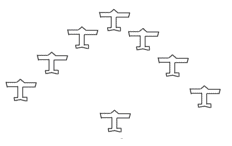

| 昭和遊撃隊 | |
| 平田 晋策 | |
| (2012) | |
昭和遊撃隊
平田晋策
諸君、僕はわが海軍の軍機を洩
すようで非常に心苦しいのだが、諸君にだけある重大な秘密をお告げしたい。
それは今、建造中の巡洋艦『最上
』『三隈
』『吉野
』『千種
』の四隻に関する秘密だ。
この四隻は同じ型の姉妹艦で、海軍省の発表によると、噸数
は八千五百噸、武装は十五糎
砲十五門、十二糎高角砲四門で、速力は三十三ノットだ。
この数字を見ただけでも、『最上』級が立派な世界一流の軽巡洋艦であることがわかる。現に米国海軍あたりではわが艦政本部が非公式に発表した『最上』の設計図を見て、舌をまいて驚いているのだ。
設計者は世界造船学界の権威、海軍技術研究所の第一部長、武田敏夫
博士である。
武田博士は工学博士でしかも造船大佐だ。
英国ケンブリッジ大学のパークス博士は、
「今、世界の十大学者の中
、三人までは日本人である。一人は東北帝大の本多光太郎博士、も一人は大阪帝大の長岡半太郎博士、最後の一人は海軍技術研究所の武田敏夫博士だ。」
と言った。
前軍令部長の加藤大将も、
「東郷元帥と武田博士は、わが海軍の生んだ二大国宝である。」
と折紙をつけている。
諸君、その武田博士が苦心惨憺
、心血をそそいで設計したのが『最上』級四隻だ。今さら米国海軍が舌をまいて驚いたって、何も不思議ではない。
ところが『最上』級には、もっともっと発表されない秘密があるのだ。
第一の秘密は鋼鉄である。
『最上』に使ってある鉄は、ただの鋼鉄ではない。
今まで世界で一番強い鋼鉄は、有名なドイツのクルップ兵器会社でこしらえるニッケル・クローム鋼だった。
しかしわが『最上』の鉄は、クルップの鋼鉄よりずっとずっと強いのだ。その鉄の名は『本多鋼鉄』――言わずと知れた前東北帝大金属材料研究所長本多光太郎博士の製品である。
今、仙台の東北帝大は、憲兵が厳重に警戒している。金属研究所の加熱炉の中では鋼鉄の塊が千六百度の猛火で焼かれているのだ。
焼いて焼いて焼きつくした鋼鉄に、ある秘密の工夫を加えて出来上る『本多鋼鉄』は、クルップ鋼鉄の約三倍の強さを持っている。
だから、この新しい鋼鉄で出来た『最上』の防禦力
が、どんなに強いかは諸君にも想像出来るだろう。
『最上』の装甲
は三吋
（七・六糎）だ。しかし、この強さは九吋の装甲に負けないのである。諸君の知っている通り、戦艦『金剛
』や『榛名
』の装甲は八吋（二〇・三糎）だから、『最上』の方が強いわけである。
ああ戦艦よりも強い軽巡洋艦！
――こんな怪物が今や、呉工廠
、横須賀工廠、神戸川崎造船所、長崎三菱造船所の四大工場で、一日一日と完成に近づいているのだ。
これが、出来上ったら、太平洋の作戦はガラリと変ってしまう。
米国の大巡洋艦『シカゴ』の姉妹艦十五隻は、『太平洋の無敵艦隊』と自称して威張っている。なるほど噸数は一万噸、大砲は二十糎砲だからすごい
には違いないが、憐れむべし、防禦力が零
である。十五糎砲弾を喰
ったらすぐに穴があく。いや、わが駆逐艦『吹雪
』の十三糎砲に狙われたって危いだろう。
前軍令部長のプラット大将さえ、
「わが大巡洋艦はブリキ張
である。」
と白状しているのだ。
諸君、かれ等
『ブリキ張』のひょろひょろ大巡洋艦と、わが『本多鋼鉄』の鎧
を着た軽巡洋艦とが、太平洋上で戦う時のことを想像して見たまえ。胸がおどるではないか。血がわくではないか。
設計は武田博士、鋼鉄は本多博士、この世界的二大学者の脳漿
のかたまりが、栄
ある『最上』『三隈』『吉野』『千種』だ！
しかし、鋼鉄よりもっと驚くべき第二の秘密は機関
の威力である。
『最上』のデーゼル機関
は武田博士が、それこそ骨をけずるような苦心をして造ったもので、ドイツが自慢する豆戦艦『ドイッチュランド』のデーゼル機関さえ、全然くらべものにならないのだ。
『最上』はこの優秀な機関を据えつけたために、その行動力は実に七万五千浬
という、すばらしい世界記録に達したのだ。
米国の大巡洋艦は一時間十五ノットの速力で、一万五千浬しか航海出来ない。しかも三十三ノットの全速力で走ると、たった二千五百浬で、もう油が切れてしまうのだ。
およそ巡洋艦の機関ほど、重油を贅沢
に喰うものはなかろう。ハワイの軍港を出る時に三千噸の重油をつんでいても、途中で少し速力をはやくしたら、小笠原島の沖あたりで、もうそろそろ不足になって来るのだ。
それほど重油は早くなくなるものである。いわば今の軍艦は、息が切れやすいのだ。
ところが、わが『最上』『吉野』は違う。
武田式デーゼル機関は二千五百噸の重油で、七万五千浬走ることが出来る。しかも一時間の速力は二十ノットだ。
全速力の行進をつづけても、二万五千浬は大丈夫である。
なお断っておくが、『最上』の全速力は三十三ノットと公表されているけれど、実は四十五ノット出る。
――ああこれこそ真に『太平洋無敵の軽騎兵』と称すべきものではないか。
米国海軍には一隻として『最上』を追跡出来る軍艦がないのだ。又、一隻として『最上』に追撃された時に、逃げのびることの出来る軍艦もないのだ。
このほか、『最上』には東京帝大の青木博士が造った世界一の光学兵器があり、又、長岡半太郎博士のこしらえた恐しい新兵器も備えてあるが、今は一々説明していられない。
とにかく日本の科学の結晶が、この四隻の軽巡洋艦である。そして山本海軍大臣は、極秘の命令を出して、いやが上にも、「早く早く。」と、工事を急がしているのだ！
○
ここで一言しておかねばならぬのは、武田博士の愛弟清
君のことである。清君は今年十六歳、まだ東京府立○中の三年生だが、その脳力は、もう帝大工学部の学生に劣らないくらいの天才である。
彼は昭和八年の二学期から学校を休学して、博士と一しょに目黒の海軍技術研究所へ通っているのだ。
清君の腕前は、造船技手として、掛値
なしに立派なものである。――世界は、よもやこんな紅顔可憐の美少年が、わが軍事科学の研究所で、重大極まる兵器の研究をやっていようとは、想像だってしていないだろう。
昭和八年十二月三十一日、大晦日
の夜も、博士と清君は遅くまで研究所に閉じこもっていた。
「おい、清、『最上』がすんだら、こんどは航空母艦『翔鶴
』と潜水艦『富士
』だぞ。この二隻が出来上ったら、米国海軍はお気の毒だが、もう日本に喧嘩
を売らない方がいいね。」
武田博士は、机の上の設計図を睨
みながら豪語した。
「そうですね。『富士』はすごいからなァ。こいつが出来たらきっと世界中の海軍が蒼
くなりますよ。」
清君も頰
を林檎
のように赤くして興奮した。机の上には『極秘』の赤紙が貼
られた怪潜水艦『富士』の青写真が、ものものしくひろげられている。
「『最上』なんかこいつにくらべたら、大したものじゃない。」
博士は唸
るように低く叫んだ。
ああ潜水艦『富士』――それはどんなすばらしい戦闘力を持っているのだろうか。
「しかし、こいつをこしらえるのには一年かかる。その間に米国のフーラー博士が、黒鷲
爆撃機を完成したらどうなるのだッ。――あの恐しい飛行機が出来たら、米国はきっと戦争をしかけて来るに違いないんだ。そしてわが海軍は大苦戦だぞ。――ああ、どうか一年間、戦争がないといいなァ、清。」
博士の顔には、くらい影がさした。
――米国には武田博士の好敵手フーラー博士がいる。昭和四年に東京でひらかれた世界工業大会で、二人は汽船の機関
について大激論をやった。そして武田博士が勝ったのだ。
その時にフーラー博士は口惜しそうな顔をして、
「僕は今日かぎり造船学の研究はやめる。そして明日から航空学の研究をはじめるのだ。」
と宣言した。そして、
「汽船や軍艦はもう時代後
だからね。これからは何といっても飛行機だよ。――」
と憎まれ口をたたいたのである。
そのフーラー博士が、最近、一通の手紙と、ものすごい爆撃機の設計図を送って来たのだ。
手紙には乱暴な走りがきでこんなことが書いてあった。
「おい武田君、君は相かわらずのろくさい
巡洋艦の設計をやっているのかい？ よせ、よせ、君のこしらえた巡洋艦なんか、僕の爆撃機にかかったら三分間でお陀仏
だよ。
この設計図は僕が二年前に書いたものだ。もうこんなものは僕にとっては秘密でも何でもない反古紙
同然だがね。君の国へ持って行ったら五百万円ぐらいには売れるだろう。どうだ、この僕の設計図を日本海軍へ売ってみないか。そしたら君は大金持だ。武田君、僕は君が瘦我慢
を捨てて、僕の軍門に下ることを祈る。僕が生きているかぎり、日本はとてもわが米国と戦争なんか出来っこないよ。」
傍若無人
――無礼千万な言葉ではないか。
しかし、自慢するだけあって、フーラー博士の設計図は、実に恐しいものだった。
わが海軍航空本部の一流の技師が、くわしく調べてみて、みなゾッとして身ぶるいしたのだ。
「もし、こんな奴
が本当に出て来るんだったら、『陸奥
』『長門
』だって危いぞッ。」
と、豪傑の名の高い横須賀航空廠
の技術部長大迫
大佐さえ、眼
の色を変えたのである。
だが、武田博士は負けなかった。博士は返事を書いた。
「親愛なるフーラー博士よ。お手紙と設計図はたしかに拝見した。さすがにエジソン第二世とよばれるだけあって、君の腕前にはわが海軍もちょっと感心していたよ。しかし、あんなもので僕をおどそうとしたって、それは駄目だ。僕の研究はもっと深いところへ進んでいるよ。ああ君がもしも僕の潜水艦『富士』の戦闘力を知ったらどうするだろうか。――フーラー博士よ。僕は米国に忠告する。もしも君等が日本に挑戦したら、それこそひどい目にあうぞ。」と。
しかし潜水艦『富士』は、まだやっと設計が出来たばかりだ。横須賀工廠で造るのか、呉工廠でこしらえるのか、造る工場さえまだ決っていないのである。
ところがフーラー博士の黒鷲爆撃機はもう出来ている。アリゾナ高原の秘密工場では第一号機の試験を終って、第二号機、第三号機と続々組立をはじめている。
参謀総長のアーサー大将は、
「黒鷲第十号機が出来上ったら、わが空軍は三日間で、東京を焼野原にすることが出来るのだ。」
と暴言をはいた。
なんという失敬な言葉だろう！ しかし、アーサー大将の自慢はけっして噓
ではないのだ。でたらめ
ではないのだ。もしも黒鷲爆撃隊がハワイへやって来たら、わが東京はもう最後だ。十時間もたたないうちに、かれ等の思うがままに、狙い撃ちされるのに決っている！
それを考えると、わが参謀本部や軍令部の将校たちも、黙って歯をくいしばるよりほか仕方がないのだった。
諸君よ。参謀将校たちを意気地なしと思ってはいけない。わが軍事探偵が、苦心に苦心をかさねて探り出した黒鷲爆撃機の戦闘力は、実に身ぶるいのするほど恐しいものだったのだ。
最大速力一時間四百五十粁
で、一万八千粁も飛ぶことが出来るのだ。しかも大砲二門と機関銃六門を備えているのだ。爆弾は十五噸である。
こんな怪物にかかっては、『海の大要塞』とよばれる『陸奥』『長門』だって戦うことはおろか、逃げることだって出来ないだろう。
「どうだ、黄色い顔をした猿
め、口惜しいだろうがッ。」
米国政府はこの恐しい武器が出来上ると、急に威張り出した。そして支那をけしかけて日本と喧嘩させるようにした。
馬占山
が北平
の軍司令官になった。
南京
では張学良
が空軍総司令になった。彼は毎日毎日米国製のカーチス戦闘機に乗って、揚子江
に碇泊
しているわが駆逐艦の上を飛んだ。それがいつも、わざと爆弾を落すような恰好
をして、駆逐艦のマストの上をスレスレに飛ぶのだった。
南京にいるわが駆逐艦は名も勇ましい『旗風
』だ。艦長は橘
少佐、播州
赤穂
に生まれた快男児である。
「張学良の奴、生意気な真似
をしやがるなッ。」
少佐は艦橋
に立って、赤く塗ったカーチス戦闘機をグッと睨
みつけた。しかし軍令部からは「絶対ニ喧嘩スルナ」と、命令が来ているのだ。
「艦長！ 残念ですなァ。」
若い少尉や中尉たちは高角砲の砲身をたたいて口惜しがった。
「畜生！ 今に見ろよ。」
水兵たちも眼の色を変えて残念がるのだった。
だがとうとう最後の日が来た。
昭和○年一月の終
、凍るように寒い朝だった。
張学良は五人の米人将校をひきつれて南京の飛行場を飛びだした。赤い戦闘機六機は、揚子江の上へ来ると、ぐっと機首を下へ向けた。
下には泥色の水に『旗風』が浮かんでいる。軍艦旗が花のように見える。
アッ、張学良がサッと右手を上げて合図をした！ 爆弾投下だッ。
小さい二十瓩
爆弾がバラバラッと落ちて行く。『旗風』は見る見る水煙でつつまれた。火災が起って煙突からどす黒い煙がもうもうとわいて出た。真赤な焰が、めらめらとマストのあたりに渦まいた。
卑怯千万な不意討だ！
橘少佐は怒
った。そして傷ついた獅子
のように戦った。
だが敵はカーチス戦闘機だけではない。
十五隻の敵艦が『旗風』をとりかこんで、滅茶苦茶に砲撃をはじめたのだ。その中には米国の砲艦『グアム』もいるではないか！
「よし、あいつを狙え！」
少佐は『グアム』を睨んで拳
をにぎりしめた。
『旗風』は燃えながらも四門の十二糎砲で奮戦した。練りに練った日本砲術の冴
を見よ！
血戦一時間で敵の損害は米艦『グアム』を筆頭に支那軍艦『安慶
』以下七隻が沈没、『三民
』以下八隻が大損害をうけ、カーチス戦闘機も四機射
ちおとされたのだ。
橘少佐は最後まで、
「なァに、支那の大砲なんかあたるものか。」
と、せせら笑っていた。そして砲弾がなくなった時、「もはやこれまで！」と自ら火薬庫に火をつけて爆沈した。
揚子江上にサッと火の柱が立ちのぼったと思うと、『旗風』は泥水のなかに姿を消してしまったのだ。――いかにも日本の駆逐艦らしい、いさぎよい最期ではないか。
さすがに支那人もこの鬼神のような勇戦奮闘には深く心を打たれたのか、獅子山
の砲台は、二十一発の弔砲を鳴らして、わが勇士の霊をとむらうのであった。
ああ揚子江の水は血にそまって紅
く、悲しみの砲声は曇った空へ消えて行く。
諸君。――こうして太平洋戦争の火ぶたは切られたのだ。
○
『旗風』の最期を聞いて、上海
にいるわが第三艦隊司令長官木村中将は決心した。旗艦『出雲
』のマストには戦闘旗がかかげられた。
そして呉淞
砲台の沖で、米国駆逐艦三隻を撃沈したのだ。
わが陸戦隊は米国の海兵隊を襲撃して、三百人の敵兵を捕虜にした。
台湾海峡では巡洋艦『多摩
』が、敵の潜水艦『Ｓ三十号』をやっつけた。
『旗風』の弔合戦
がはじまったのだ。
しかし、敵もさるものだ。その夜のうちにフィリピンのマルチン爆撃機は、闇
のバシー海峡を飛びこえて、わが台湾屛東
飛行第八聯隊
の根拠地を夜襲したのである。
又、敵潜水艦『Ｓ二十九号』は上海の沖で、日本郵船会社の豪華船『霧島丸
』を沈めてしまった。
――ああ太平洋上戦雲暗澹
たりだ。
この形勢を見た米国大使は、わが外務大臣に最後通牒
をつきつけて、「日本政府は謝罪せよ。事変の責任者は木村中将だから、彼を死刑にせよ。砲艦『グアム』と潜水艦『Ｓ三十号』駆逐艦三隻を沈めた賠償金五千万円を出せ。そしてこの返事を二十四時間以内にせよ。もしそのあいだに返事がないと、わが米国海軍は、東洋に向って出動せねばならぬであろう。」
と、おどかした。
弘田
外務大臣はだまってこの通牒を見てしまうと、いきなりビリビリッとまっ二つに引き裂いた。
米国大使は真赤になって怒った。
「よしッ、これで国交断絶だッ。」
――『旗風』が沈んでから二日目には、もう宣戦が布告された。
宮城の中に大本営が置かれ、戒厳令が下った。
聯合艦隊司令長官末山
大将は旗艦『長門』に乗って、横須賀から伊勢湾に向って急行した。伊勢神宮に戦勝を祈るためである。
末山大将は吉田松陰や山県有朋を生んだ長門
の国の人である。瘦
せた小さい提督だが、その眼には鷲よりも強い光がある。『戦術の神様』として、大将の名は世界に鳴りひびいているのだ。
大将は森厳な伊勢の神域にうずくまって、沈黙の祈をささげた。
「海行かば水
づく屍
、もとよりわが聯合艦隊は全滅を覚悟して戦います。天
つ神、国つ神よ、ねがわくはこの皇国
を守らせたまえ。」
――これが大将の祈だった。伊勢湾は日本人にとって、『神の海』である。しかも戦略的に見ると、太平洋作戦の根拠地として、東京湾に次いで重大なところなのだ。横須賀、呉、佐世保三軍港のどれからもそんなに遠くなく、しかも艦隊の行動をかくすのには持って来いだ。秘密根拠地として、これ以上の湾はちょっとないだろう。
末山大将がこの『神の海』を第一期の根拠地にしたのは、さすがに『戦術の神様』だけのことはある。
『長門』につづいて百五十数隻の軍艦、駆逐艦、潜水艦、特務艦が、三つの軍港から、伊勢湾をめがけて急行した。
諸君、戦時の艦隊編制は軍機中の軍機、秘密中の秘密である。しかし、伊勢湾に集合した艨艟
を見たら、およそ想像がつくだろう。
戦艦『長門
』『陸奥
』『日向
』『伊勢
』『山城
』『扶桑
』『榛名
』『金剛
』『霧島
』。『比叡
』も水雷戦隊にかこまれているぞ。『山城』『扶桑』は大改造したので、すっかり形が変っている。ちょっと見ると『長門』『陸奥』よりも強そうだ。
大巡洋艦も二十糎砲をぐっと天の一角に突き立てて、そのたくましいことは、海の猛獣のようだ。『愛宕
』『高尾
』『摩耶
』『鳥海
』『那智
』級四隻もいる。『加古
』もいる。『青葉
』もいる。
沖の方にかかっているずんべらぼう
の怪物は航空母艦『赤城
』と『加賀
』だ。『竜驤
』と『鳳翔
』は第一戦隊『長門』『陸奥』『山城』等の蔭にかくれている。
巡洋艦に劣らぬ戦闘力を持つ『吹雪
』級大駆逐艦二十四隻が、真新
な旗をひるがえしているのが、絵のように美しい。
潜水戦隊は鯨の大群だ。『千鳥
』級の水雷艇は海の猟犬だ。
ああ、百五十隻の艨艟！
実にたのもしい。実に力強い！
しかもどうしたのであろうか、武田博士が心血をそそいだ『最上』がいない。『三隈』がいない。『吉野』『千種』の姿も見えない！
かれ等はもう、すっかり艤装
を終って、造船工場の手を離れ、呉にも、神戸にも、横須賀にも、長崎にもいないのだ。それだのに聯合艦隊の中に、その姿が発見できない！ そんならどこにいるのだ？
僕はいよいよ『昭和遊撃隊』の秘密を、語らねばならなくなって来た。
ここは八丈島の南、小笠原島の北にあたる碧海島
だ。全島絶壁がめぐっていて、まるで自然に出来た要塞
のようである。
絶壁には千年の苔
がむして、荒波のしぶき
が花と散っている。そして信天翁
の群が、しゃがれ声で鳴きながら、その上を飛んでいる。
島のまわりは、ものすごい海流だ。渦巻だ。まっ黒な潮が、ゴオーッゴオーッと音をたてて矢のように流れている。
もしも小さな発動機船なんかが、誤ってこの海流に乗ったらどうなるだろうか。たちまちキリッキリッと悲鳴のような音を立てて、船体がバラバラになり、船も人も、魔の渦巻の中に捲
きこまれてしまうのだ。
だから小笠原や八丈島の漁師たちは昔から『鬼の島』とよんで、この島に近よらない。
ことに恐しいのは島の北にある水門だ。そこは百五十メートルもある高い高い絶壁が真ッ二つに割れて、ぽっかりと口をあけているのだ。遠くから見ると、絶壁の内側は大きな湾になっているらしい。――北の水門は湾の入口なのだ。
ああなんという壮絶な、ものすごい光景だろう⁉
見よ。荒れに荒れた海流が二十浬
以上のはやさで、湾の内へ流れこんでいるではないか。そして水門のあたりには竜巻
のような水煙が、もうもうとしてたちこめているではないか。
音に聞えた昔の海賊村上流の水軍でも、又、山のような怒濤
をもの
ともしなかったバイキング海賊でも、この水門だけは乗り切れないだろう。
速力三十ノット以上の駆逐艦なら、勢いにまかせて突破出来るかも知れないが、それにしても水門の幅があまり狭い。恐しい巨岩怪岩が、波の間から黒々と頭をのぞかしているのを見ると、どんな豪胆な駆逐艦長だって、思わず身ぶるいして逃げ出すにちがいないのだ。
――だから碧海島は永遠の秘密境だ。無人島だ。
○
しかし諸君、昭和○年二月［＃「二月」は底本では「二年」］
一日の夜、一隻の怪艦が、この島の北の海上へぽっかりと姿をあらわした。そして、大胆不敵にも艦首を魔の水門に向けたではないか。
寒い空には烈風が悲鳴をあげている。氷のように冴え切った月が、つめたい光を荒波の上へなげかけている。
怪艦の形は遠くから見ると大巡洋艦『高雄』に似ているが、近づいて見ると非常に違っていることが分る。
『高雄』のようにいかめしく角張っていないのだ。艦全体がまるみ
を帯びている。新しい飛行機によくある形の、あの流線型だ。
そして月光にもまさしく見えるものは、三聯装十五門の十五糎砲ではないか。
艫
の艦名をすかして見よう。『もかみ』！
アッ『最上』だッ。聯合艦隊の編制に洩れた『最上』が、いつのまにか、この魔の島に姿をあらわしたのだ。
ああなんという巧妙な操作（軍艦の動かし方）だろう！
わが巡洋艦『最上』は、激流にさしかかると、ぐっ
とばかりに四十五度の転換をやって、左を向くと、水煙につつまれながら水門に突っこんで行った。そして、たちまちその姿は水門のかなたへ、かくれてしまったのだ。
――後にはただ絶壁が月の光をうけて、黒々とそびえ立っているばかりだ。
太平洋の荒波が、岩にくだけて咆
えたてているばかりだ。
鬼の島、――碧海島の水門へ、水煙を立てて突っこんで行った巡洋艦『最上』。
その姿は百五十米
もある絶壁のかげへ、吸いこまれるように消えて行く。
水門はまるで長い谷間のようだ。両岸の崖
がどこまでもどこまでも黒々とつづいている。
その谷底の闇を、わが『最上』は、もの凄
い海流に押し流されながら奥へ、奥へ、入って行くのだ。
小さい影が二つ。舳
に近い甲板
の上で動いている。
一つの影は、夜目にも美しい少女である。赤い毛糸の帽子をかむって、豹
の皮の外套
にくるまっている。
「ね、あたし怖いわ。この水門、どこまでつづいているんでしょう。」
つぶらな黒曜石のような眼で、奥の方をすかして見たが、黒々とした崖が、艦の行手をさえぎるように聳
え、どこまで行ったら、ひろい入江へ出るのか、見当がつかない。
「燁代
ちゃん、ここは地獄の入口だよ。」
――もう一つの小さい影がささやいた。一等兵曹の服装をしているが、紅顔の美少年だ。明るい頰の色、澄み切った眼のかがやき。どこかで見たような顔だ。
――おや清君じゃないか。そうだ、たしかに『最上』の設計者武田博士の弟、清少年にちがいない。
彼は今や、怪巡洋艦『最上』の舳に仁王立ちになって、じっと腕ぐみしているのである。
水門の闇はいよいよくらく、上を見ると、高い高い絶壁の間、もうもうと立ちこめた、霧の中に、ぼんやり月が光っている。
『最上』は、ざぶりざぶりと水煙を立てて、いよいよ奥へ進んで行く。
水門の流
には、ところどころもの凄い渦巻が巻いていて、艦をその中へ乗り入れると、さしもの本多鋼鉄で出来ている大艦『最上』も、
キリキリッ......
と、しわる
ような音を立てるのだった。恐しい渦巻の力だ。
「ずいぶん深そうだわね。」
燁代さんは、清少年の肩にすがって、舷
の外をのぞいた。
「十五尋
――三十米ぐらいはあるね。渦の巻工合で深さがわかるよ。」
――清君は、まるで本物の兵曹のような口ぶりだ。
しかし、彼は間違っている。本当は、この水門の深さは五十米以上だ。そして、その底には、恐しい人食鮫
が、大群をつくって泳いでいるのである。
○
水門の入口へ入ってから三十分もたったころ、いよいよ流は狭くなって、『最上』は絶壁に衝突しそうになるので、後退したり、前進したり、なかなか進まない。航海長小川中佐は大変な苦心だ。
舳には本物の兵曹長が出て来て、じっと眼を光らせて前方をみつめている。探照灯があかあかと絶壁の苔
をてらし出し、その光の後から、『最上』は岩角を右へよけ、左へよけて進んで行くのだ。
流は奥へ入るほど、ゆるく
なって、水がよどんで来たが、谷はますます狭くなって、やっと『最上』が岩とすれすれに通り抜けることが出来るだけの幅しかない。
ちょっと舵
をとり違えると、船は岩角に衝突して大変なことになるのだ。
「兵曹長さん。まるで揚子江の上流を溯
ってるようですね。」
さすがの清君も、少し気味が悪くなったのか、心配そうに眉
をひそめて、兵曹長の顔をのぞきこんだ。
だが見張番の谷兵曹長は真剣だ。鷲のような眼を爛々
と光らせ、じっと前方をみつめたまま、清君を、見向きもしない。
今、一瞬間でも油断したら、恐しいことになるのだ。見よ。谷兵曹長の首すじには、たらたらとあぶら
汗が流れているではないか。
いまや『最上』は、岩とたたかい、流とたたかい、死力をつくして、日本海軍の航海術の手並のほどを見せているのだ。
水煙は濛々
と谷底に立ちこめ、探照灯の光だけが、闇の中にぼオーッと蒼白
い。
その時だッ。突然谷の向うの方から、
ごオーッ、ごオーッ......ごオーッ
と、すさまじい地鳴が聞えて来た。そして、高い絶壁の上に、ボオーッと、赤い怪光が見えたのだ。
なんだろう？
清少年と燁代
さんは、思わずよりそって、手をとりあった。
この人外境に火の光が見えるッ。――鬼の火か？ 又は蛮人の焚
くかがり火か？
「怪しいわね。――」
燁代さんは、蒼くなって、ぶるぶる慄
えている。
「あたし達、どうなるんでしょう。どこへ連れて行かれるんでしょう。」
「ぼくも知らないよ。兄さんにきいたって、黙ってろッ、て叱られるんだからね。――」
清君も、すこし色蒼ざめている。
○
二人の少年少女の疑いを乗せたまま『最上』は、なおもぐんぐん奥へ入って行った。
櫓
マストの上のブリッジでは、木下艦長と小川航海長と、それから造船大佐の軍服に身をかためたわが武田博士の三人が、真剣な顔をして、海図を見ている。
真夜中の二時ごろ、艦は、狼
がしゃがんでいるような変な形をした大きな岩のかげへ、錨
を下してとまってしまった。
「とうとう狼岩まで来たね。」
木下大佐が、汗をふきながら小川中佐の肩をたたく。さすがは名航海長小川中佐。三十浬の水門を、よくも乗り切ったものだ。
「御苦労でしたね。僕は胆玉
をひやひやさせたよ。」
武田博士も汗を拭いている。
「それにしても、君の姪
の燁代さんはえらいね。女のくせに、こんなところへやって来るなんて、凄いぞ。」
小川中佐は、燁代さんを愛しているのだ。
「うん、あいつは、とても冒険が好きなんだよ。まだ十六だがね。字もうまいから僕の秘書にしてあるんだ。」
武田博士も姪が可愛くって仕方がないのである。
「あいつ等二人には、この島のことは、まだ何も聞かしていないんだ。どれ、これから秘密を明
してやろうか。」
武田大佐は立ち上った。
狼岩の向うには、闇の中に、入江らしい海が、黒々とひろがっている。
ああ鬼の島、怪しい入江、そこにはどんな秘密がかくされているのだろうか。
その夜『最上』は、狼岩のかげで碇泊した。清少年と燁代さんは、ハンモックの中で眠られぬ一夜をすごしたが、明くれば二月二日、今日こそは、いよいよ『鬼の島』碧海島の秘密がわかるのだ！
兵曹姿の清少年と、紺色の水兵服
をきた燁代さんは、武田博士に連れられて、まだうす暗いうちに後甲板
へ出た。
ひろい入江、――碧海湾には、霧がもうもうと立ちこめて、南国の朝風がひやひやと頰を撫でる。
『最上』の左舷
と狼岩との間へ、一艘
の内火艇が、ボボボボボと音を立てて入って来た。
いよいよ上陸だ。
「艦長、行って参ります。」
「小川の小父
さん、それから、みなさん、さようなら。」
清君と燁代さんは、身軽に舷梯
をかけ下りて、内火艇に乗りうつった。
艦長は、谷兵曹長だ。前進
！ の号令で内火艇はすぐに動き出した。しかし、とてものろのろした速力だ。湾は鏡のようになめらかで、小波
一つ立っていない。清君と燁代さんは窓から顔を出して、霧の中をすかして前の方を見た。
――何も見えない。
後の方を見ると、狼岩と『最上』の姿が、ぼんやりと鼠色にうすれて行く。
気味の悪いくらいの静かさだ。
「兄さん、ここは無人島ですか？」
清君は、たまりかねて大佐にたずねた。
「いや、ちがう。」
大佐は、首をふって、重々しい唇
をひらいた。
「実は、昨日の晩、聞かして上げようと思ったんだがね。二人とも、ハンモックに揺られて、よく寝ていたものだから、やめにしたんだ。――清、今こそ打ち明けてやろう。よく聞け、この碧海島は、わが海軍の秘密根拠地だぞッ。」
「えッ？ 秘密根拠地？」
「そうだ。帝国海軍の精鋭をよりすぐった秘密艦隊、昭和遊撃隊の根拠地だッ。」
「えッ、秘密艦隊？」
――二人は、奇々怪々な大佐の言葉に、驚きの眼を見あわした。
○
小笠原の父島に、旭山
の要塞があることは知っている。しかし、父島要塞の北に、そんな秘密根拠地があろうと、だれが思おうか？
まして名将末山大将がひきいている聯合艦隊のほかに、秘密に編成された艦隊がいるなんて、もしもこれを米国艦隊司令長官ヤーネル大将に聞かしてやったら、どんな顔をするだろうか。
思えば痛快だ。さすがに日本海軍だッ。じつに思いもかけぬことをやっているではないか。
ああ絶壁にかこまれた孤島の軍港！
三十浬の水門の奥にひそむ秘密艦隊！
これが一たび動き出したら、太平洋上、どんな風雲が捲きおこるだろうか？ 思っただけでも熱い熱い冒険の血が、胸の底から湧きあがって来るではないか。――しかも、自分らは、今、その秘密の碧海湾深く入って来ているのだ。清少年は、思わずぶるぶるッと武者ぶるいをした。
両頰に血潮がさして、花よりも紅
い。
しかし、それにしても、秘密艦隊はどこにいるのだ？ 秘密の砲台は、どこにかくされているのだ？
絶壁と海のほかには、なにも見えないではないか？
「ね、叔父さん、その昭和遊撃隊っていう艦隊はどこにいるの？ あたし、いくら探したって見えやしないわ。」
燁代さんは、眼をかがやかして、霧の奥の方を、にらみつづけている。
「まて、まて、いくら睨
んだって駄目だよ。もうすぐに霧があがるからね、それまで我慢していろ。――お前のようにそんなに舷
へ乗り出してると、人食鮫
にとびつかれるぞッ。」
「まア、人食鮫がいるの？」
燁代さんは、あわてて首をちぢめた。
「臆病
だなア、――鮫なんかなんだい。」
清君は、燁代さんをあざけりながら、これ見よがしに、ぐっと手をのばして、水の面
を搔きまわした。
「ばかッ。あぶないぞッ。」
大佐の一喝が終らぬうちに、底の方から青黒い影が、矢のように近づいて来た。
「あッ、鮫だッ。」
清少年は、サッと手を引いた。間一髪！ 三米以上の大鮫が、すごい牙
を光らせて、はね上った。
――鮫の襲撃がもう一秒はやかったら、清君は右の手を嚙
みちぎられていたにちがいない。
恐しい海だ！――さすがの彼も蒼くなった。
清少年は、兄大佐に散々叱られた。そして、彼が叱られている間に、碧海湾にたちこめた深い深い朝霧は、だんだん消えて行ったのである。
霧は百五十米の絶壁を、上へ上へと、白い渦をまいて、うすれ行くのだ。
見よ、なんという壮大な眺めだろう。
黒々と湾をかこんで、数十粁
の円陣をつくる大絶壁！ そのいかめしい姿は、まるで海上の日本アルプスだ。
燁代さんはうちつづく大絶壁の連峰を見上げながら、去年の夏白馬山
へ登って、雄大な飛驒
山脈をながめた時のことを想い出した。
「叔父さん、この絶壁の形、なんだかアルプスに似ているわね。――」
かの女は、赤い帽子をかしげて、大佐の顔を見上げた。武田大佐は大きくうなずいて、
「うん、そうだ。だから、海軍でも、あのどっしりしたのを蓮華岳
、向うのとんがっているのを槍岳
と命名しているよ。」
だが、――今は絶壁の大きさに見とれている時ではない。秘密艦隊はどこにいるのだ？ 昭和遊撃隊はどこにかくれているのだ？
気がせく清少年は、谷兵曹長の腕をつかんで聞いた。
「谷さん、遊撃隊はどこにいるの？」
谷兵曹長は、黙って右手で舵
を動かしながら、左手で向うの絶壁を指さした。
「あの蓮華岳の下を、見てごらんなさい。」
見ると、大きな洞窟
が、ぽっかりと黒い口をあけている。
「行って見ましょう。」
兵曹長はぐいッと舵を右へまわした。内火艇は波紋をかきながら、洞窟に近づいた。
高さ五十米もあろうか。恐ろしいほど大きな洞窟だ。――内火艇は、入口で機関
をとめた。
「あッ、いたぞッ。」
――見よ。うす闇の洞窟の中に、一隻の怪艦が舳をこちらへむけて、ひそんでいるではないか。しかも、艦首にかがやく黄金の光は、まさしく光栄ある菊の御紋章だ。
○
諸君、蓮華岳の洞窟にひそむ怪艦は、『最上』の姉妹艦『三隈』である。洞窟の奥には、糧食庫や、弾薬庫があり、岩をくり抜いた重油タンクの中には、どろどろした赤黒い重油が、一万噸
貯蔵されているのだ。
『三隈』は二千五百噸の重油を燃
いて、七万五千浬走る力を持っている。一万噸の重油があったら、世界の七つの海を、片っぱしから征服することは何でもない。
「怖ろしい根拠地だなア。」
「凄いわね。――」
清少年と燁代さんは、胸がわくわくして来たのである。
大きい洞窟
は一つでなく、もう二つあった。
燕岳
の洞窟と、穂高岳
の洞窟だ。
燕岳には『千種』がかくれていた。穂高岳には『吉野』が入っていた。
ほかに、小さい洞窟が三つあったが、その中は暗くてなにも見えなかった。――
最後に槍岳の大洞窟
へ来た時、兵曹長が、そっと清少年にささやいた。
「これが『最上』の洞窟ですよ。『最上』は昭和遊撃隊の旗艦です。」
「ふーむ。」
清少年は、腕を組んでうなった。
考えれば考えるほど恐ろしい島だ。この洞窟の中の秘密根拠地へかくれたら、米国のフーラー博士の『黒鷲爆撃機』が、どんなに大編隊群をつくって攻めて来ても、ビクともしないだろう。
千瓩
、二千瓩の爆弾が雨のように降って来ても、この大絶壁がくずれるようなことは断じてない！
しかし、諸君よ。碧海島の秘密は、まだまだ奥が知れないのである。清少年らを乗せた内火艇は、槍岳の洞窟から、もっともっと奥へ入って行くのだ。
「こんどはどこへ行くの？」
「富士洞窟ですよ。一番奥にあるんです。」
谷兵曹長は、又、舵を左へ変えた。
富士洞窟――それは果して、どんな所だろうか⁈
燁代さんは、――どこまで行っても果しのない神秘な世界に引きずりこまれるようで、なんだか怖くなった。
ふりかえって見ると、碧海湾はエメラルド色の鏡のようだ。燁代さんは、しばらくうっとりと、その美しい色に見とれていた。
――だが、なぜか、かの女の顔色は、急に、見る見る真青になったのである。
「あれッ――、恐しいものが――。」
絹を裂くような悲鳴が、少女の咽
からほとばしった。
――かの女をおびえさせたものは何だろう？
さっきまで鏡のようだった碧海湾の水は、にわかにざわざわとざわめいて、恐ろしい渦巻がもり上って来たのだ！
碧海湾に波騒ぎ、どッと、もり上って来た渦巻は、みるみる「ごォ――ッ」と音を立てて真二つに割れた。
そして、鼠色の大怪物が、瀑
のようなしぶき
の中から、悠々
と姿をあらわしたのだ。
「あッ、潜水艦だッ！」
清少年は思わず叫び声を上げた。
「まあ、あたし胸がどきどきするわ。」
燁代さんが、美しい眉をひそめた時、潜水艦は上甲板
の、巨砲を積んだ大砲塔のもの凄い形をまる出しにして、もうすっかり浮き上って来たのである。
「どうだ、清。驚いたか。」
武田博士は、大きなマドロス・パイプをくわえて、うまそうに煙草
の煙をふかしながら、愛する弟の肩をたたいた。清少年は黒い瞳
をくりくり動かして、
「ええ、僕びっくりしましたよ。......兄さん、あれ、見なれない潜水艦ですねえ。」
「なあに、あれはお前もよく知っている、伊号
第五潜水艦なんだよ。ただ呉の海軍工廠
で、すっかり造り変えたもんだから、形が違って見えるんだ。ね、以前は二十糎砲なんか、なかっただろう。」
武田博士は大きな手を伸ばして、上甲板の巨砲を指さした。
「あッ、あれは二十糎砲ですかッ。」
清君は又びっくりして大声を出した。
諸君、彼が驚くのもむり
はない。二十糎の巨砲を積んだ大潜水艦！ これなら巡洋艦にも負けないぞ。すばらしいではないかッ。
世界にそんな怪物のような強い潜水艦は、フランス海軍の『サルコフ』号が一隻あるきりだと思っていたのに、――思いもかけぬ、この南海の一孤島に、紅い朝日の軍艦旗をひるがえして、ぴかぴか光る長い砲身を、ぐっと突き出した潜水艦が、ものすごくもたのもしい勇姿をあらわしたのだ。
「兄さん、これじゃサルコフ号に負けませんねえ。」
清君は、泣き出したいくらいうれしいのである。武田博士は大きくうなずいて、
「負けるものか。後甲板を見ろ、倉庫のようなものがあるだろう。あの中には神風式
戦闘偵察機が入っているんだぞ。――そして、中の機関
も武田式に取りかえたんだ。」
――ああ、この精鋭で、太平洋を暴れまわったら、どんなに痛快だろう。清少年は胸がぞくぞくして来た。
その時、谷兵曹長が口を出した。
「清君。武装が変ったから、名前も変って、この艦
の名は、今では『八島
』です。」
「ずっと昔の戦艦の名前だね。」
そうだ。清君は、よく知っている。日露戦争の時、旅順
の沖で壮烈な、勇ましい最期をとげた、名誉ある大戦艦の名だ。第二世『八島』も、ハワイ真珠軍港の沖で、第一世の『八島』に負けぬような、奮戦ぶりを見せたいものである。
「しっかりやれよ。」
清君は内火艇の甲板に立ち上り、しだいに遠くなる『八島』に向って、大声で叫んだ。
『八島』の後から、つづいて姉妹艦の『千代田
』と『秋津洲
』が、むくむくッと渦巻を湧きたたせて浮き上ったが、内火艇は全速力で、湾の一番奥にある、富士洞窟に向って急行しているのだ。清君も燁代さんも、残念ながら後の二隻の潜水艦は、よく見ることが出来なかった。
しかし、これでおぼろ気に、秘密艦隊、昭和遊撃隊の正体が、つかめたわけではないか？
旗艦『最上』以下、世界にほこる軽巡洋艦『三隈』『吉野』『千種』の精鋭。それに名も勇ましい怪物潜水艦『八島』『千代田』『秋津洲』！――この強い強い七隻が昭和遊撃隊なのだ。
こんな強い、速力のはやい遊撃艦隊を編成して、そっと秘密根拠地にかくして置き、敵の油断を見すまして、科学的な大奇襲をやらせようとする、わが軍令部総長の頭はいいではないか。実に総長上杉大将の考えは『神謀鬼略』である。全海軍の士官や水兵が、「上杉さんは世界一の名将だ。」とあがめるはずだ。
○
「それにしても、この秘密艦隊の司令官はだれだろう？
そして、艦隊が、碧海島の絶壁を後にして、白波を蹴立てて、太平洋上に出動するのはいつだろうか？」
清君が胸をわくわくさせてそんなことを考えている中
に、内火艇はエメラルド色の美しい波をわけて、めざす富士洞窟へさしかかった。
「さあ、来たぞ。――ここが俺
の仕事場だ。」
うす暗い洞窟
の中へ入った時、武田博士はうれしそうに眼をかがやかした。
大きな岩の壁に電灯がぼォーッと光って、洞窟の中の水は金色にゆらめいている。
奥へ奥へ入って行くと、だんだん入江は狭くなったが、狭くなるのにつれて、富士洞窟の正体は、はっきりとあらわれて来たのだ。
諸君、見よ、こうこうとかがやく電灯に、くまなく照らし出されたのは、大きな造船台ではないか。黒々とそびえ立つクレーンの下に、細長い姿を見せているのは、武田大佐が心血をそそいで造りかけているわが海のライオン、『富士』潜水艦ではないか。
ああ、洞窟の中の秘密工場！
職工たちは、手に手に鉄槌
を握り、機械に油をさして、技師長武田博士の来るのを待っているのだ。
入江の波止場
に群がったかれ等は、内火艇が入ってくるのを見ると、
「武田大佐、万
ざあい――。」
と叫んだ。
その声は、がらんとした洞窟の中にこだま
して、なんだか悲しそうに、ながくながくひびいた。
「なんだか悲しそうな声ね。――」
燁代さんは、美しい断髪をゆらゆらと動かして、清君の耳もとでささやいた。
「悲しいはずだよ。米国のフーラー博士は、もう荒鷲
爆撃機をこしらえたのに、兄さんの『富士』はまだこれからだからねえ。口惜しいけれど、兄さんは負けているんだ。」
清君は、残念そうに軍帽の庇
に手をかけて、ぐっと目深
にかぶりなおした。
口惜涙を、燁代さんに見られたくないのだろう。
武田大佐は、波止場へ上ると、もうすぐに青い作業服に着かえて、油にまみれながら、『富士』の建造を指揮するのだった。
祖国日本は今、恐しい荒鷲爆撃機に狙われているのだ。末山大将の聯合艦隊は、二十世紀の無敵艦隊――あの三百隻の艨艟
を集めた米国大海軍を向うにまわして、苦しい苦しい悲壮な戦いをしなければならないのだ。
この危機を見て、武田大佐（博士）は、一分間もじっとしていることが出来ないのである。
『富士』さえ出来上れば、日本は断じて負けないのだ。一月でも、一日でも、いや一時間でも十分でも、はやくはやく、この潜水戦艦を進水させなければならない。――だから武田博士の作業ぶりは、生命
がけの真剣さだ。
「作業はじめえ――」
大佐の号令一下、機械は「ごォーッごォーッ」と獣が咆
えるような声を立て、職工が振り上げる鉄槌
の、鋼鉄を打つ音が、ガンガン岩の壁にこだま
して鳴りひびき、青白い電気の火花がパチパチ散り、高熱炉の中では、本多鋼鉄が真紅
に焼けただれて、「じゅッじゅッ」とすさまじい音を立てはじめた。
さっきまで鳴りをしずめて、ひそんでいた洞窟の秘密工場は、にわかに戦場のような騒
になったのである。
○
しかし、清少年と燁代さんは、その晩から、もうこの秘密工場を立ち去らなければならなかった。
夕方の六時ごろ、大クレーンの下で働いている二人のところへ、昭和遊撃隊司令官から、にわかに秘密命令が来たのだ。
伝令兵の持って来た赤い罫紙
には、
「艦隊命令第十九号。武田清、武田燁代。右ノ者ハ至急武田造船大佐ノ指揮下ヲ離レ、槍ヶ岳洞窟内ノ旗艦『最上』ニ来
ルベシ。」
と、墨くろぐろと、ものものしい文句が書いてある。
「なんでしょう。あたし、心配だわ。」
燁代さんは、美しい瞳に、怯
えたような色を見せた。
「燁代、清、司令官の命令だ。はやく行ってごらん。そして、うんと冒険をやって来いよ。」
武田大佐は意味あり気にわらって、二人の肩をたたいた。
「なに？ 冒険をやるんですって？ じゃ、行って来ます。」
「あら、冒険って何でしょう？」――
愉快そうに肩をいからした清君と、心配顔の燁代さんは、伝令兵の乗って来た小さいボートに乗せられて富士洞窟を出た。
伝令兵は太い腕で上手に櫂
を漕
いで、沼のような碧海湾を、槍ヶ岳の洞窟へ急いだ。
「ね、水兵さん、秘密命令って、何の御用なの？」
燁代さんが声をかけたが、水兵は不愛想にただ一言。
「知りませんね。」――
「燁代さん、君、怖いのかい？ 怖いんなら、初からこんな島へ来なきゃいいんだ。......今さらびくびくして何だい。これだから僕は女が厭
なんだ。――臆病者ッ。」
兵曹姿の清君はなかなか元気がいい。
「まあ、ひどいわ。」
燁代さんは、やさしい眼をキラリと光らせて清少年をにらんだ。
「清さん、おぼえていらっしゃい。あたし、あなたなんかに負けないわ。冒険、大好きよ。」
燁代さんも負けぬ気で、赤い水兵服
の肩をぐッと怒らした。
「はッは、冒険が好きなくせに、どうしてびくびくするんだい。」
清君がからかうと、かの女は負け惜しみにも、
「びくびくなんか、していませんよ。清さんこそ、いまに大砲の音を聞いたら、アッとばかりに亀の子のように首をちぢめるんだわ。」
と逆襲した。
「へらず口だなあ、まあ見ていたまえ。」
清君は、がっしりしたにぎり拳
で、わが紺色の軍服の胸を、がんと強くたたいた。
「あたしだって、見ていらっしゃい。」
燁代さんも、つやつやした薔薇色
の頰
を染めて、近づいて来る槍ヶ岳洞窟を、じっと見つめるのであった。
槍ヶ岳の洞窟には、狼岩を離れて来た『最上』が、大きな図体
を入れている。
舷梯には、航海長の小川中佐が煙草をふかしながら、迎えに出ていた。
「燁代さん、よく来たな。」
ボートが舷梯の下へつくと、中佐は大きな手をのばして、燁代さんを抱き上げた。つづいて清君は、ひとりで綱を摑
んで、ひらりと飛びうつった。
「二人とも、僕についておいで。」
中佐の後から後甲板の艙口
をくぐってうす暗い艦内へ降りて行くと、すぐに艦長室につきあたる。
海老茶色
のカーテンのかげに、六尺ゆたかな大男、木下大佐が、虎のような眼を爛々
と光らせて立っているのだ。大佐は二人の顔を見るや、いきなり「おお、帰って来たか、武田君から、君等二人の胆玉
を、うんと練り上げてくれと、たのまれたからな。これから戦
に連れて行ってやるぞ。どうだ、燁代さん、怖くないか。」
船乗
らしい大きな、荒っぽい声だ。
「まあ‼ いいえ。」燁代の断髪が房々と横にゆれた。
「そうか。そりゃえらい
ぞ。燁代さんは、女の子だから、特別に少尉の取扱いをして上げよう。それから清君の方は、今まで通り三等兵曹の取扱いだ。どうだ、それで不平はないかね。」
「はい、三等水兵でもかまいません。僕はもう腕が鳴って仕方がないんです。」
清君は黒い大きな瞳をかがやかした。
「よしッ。」大佐は、たのもしそうに、うなずいて、
「君は潜水艦『八島』に乗組むことになっているんだ。燁代さんは小川中佐の指図をうけて、この『最上』に残る。それでいいか。」
「まあ。」――燁代は、ちょっと悲しそうな表情をしたが、――二人が別れ別れに戦うのもまた愉快ではないか。清君は、燁代の方をふりむいて、
「いいですとも。ねえ、燁代さん、君は心臓が弱いから潜水艦に乗れないんだよ。」
とからかった。燁代さんはすねた
恰好
をして、
「まあ、そんなことないわ。わたしの心臓はとても強いのよ。」
「こらこら、変な口喧嘩をするんじゃない。――じゃ、清君は、これからすぐに『八島』の方へ行け。――君たちに酒をすすめるのは悪いことだが、一つ別れの盃をあげよう。小川中佐、君もやり給え。」
木下大佐は、戸棚から葡萄酒
の瓶をとり出した。
「これは百年ほど前にフランスで出来た古い酒だ。僕の宝ものなんだよ。」
赤い血のような葡萄酒が、たらたらとグラスの盃につがれた。
「僕は大佐で、まだ司令官になる柄でない、しかし、今や命令によって、不肖
ながら昭和遊撃隊の司令官になったんだ。まあ、どこまでやれるか、生命のあるかぎり、やって見よう。今夜出動したら、泣いても、わめいても、後は太平洋の荒波にまかせた生命だぞ。」
木下大佐は、盃を高くさし上げた。
――ああ木下艦長が、遊撃隊の司令官だったのか！ 海軍一の豪傑とよばれる大佐なら、どんな恐しい冒険でも、どんなひどい戦闘でも、きっとやりとげるだろう。――
清君と燁代さんは、盃をカチリと打ちあわせて、眼と眼とでうなずきあい、「御機嫌よう
！」と、おたがいの武運を祈った。
○
外はおぼろ月夜で、洞窟の中へも、青白い月の光がぼォーッとさしこんでいる。
ああ母の国を離れたこの南海の孤島で、わが少年と少女は、戦の首途
を前にして、今夜どんな夢を見ることだろうか。
二月三日の午前三時。まだ島は夜あけ前だ。
昭和遊撃隊四隻の巡洋艦は、はやくも錨
をまき上げて、出動命令の下るのを、今やおそしと、待ちかまえている。
「狼岩ニ集レ。」
『最上』の無線電信が第一の命令を電波でつたえた。間もなく四つの洞窟から、探照灯がサッと碧海湾の波をてらし、一艦また一艦と狼岩をめがけて動き出して、四時には、もう『最上』を先頭に、『千種』『吉野』『三隈』と、ずらりと一列の単縦陣をつくった。
見よ、あかつき
の光にうき出してくる山のような堅艦
！ 六十門の十五糎
砲はいまにも火を吹きそうな恰好でぐっと砲口を天に向け、霧の流
につつまれた前檣
の櫓
は、見るからに堂々としていかめしい。
「前進！ 旗艦ニツヅケ！」
『最上』は無線電信で命令を出しながら、そろそろと狼岩を離れた。
ああ出動だ。木下司令官は、仁王のようにブリッジに立って、ジッと前の方をにらんでいる。
あおげば前檣に高くひるがえる紅い代将旗！ 後
の方が二つに裂けて、ひらひらと舞っている。
代将旗は、大佐で少将や中将と同じ位の司令官になった人だけが、かかげる名誉の旗だ。この旗をひるがえす大佐は、きっと海軍中でも一番、二番の名将か勇将である。
わが『最上』の木下大佐は、勇将でそして名将だ。
つづく、三艦、三千人の士官、下士官、水兵、――一人として卑怯者は乗っていない。
遊撃巡洋艦隊は、もうもうとしぶきを上げて、水門の谷間へ乗りこんで行く。
旗艦の後甲板から、軍楽隊の奏する『別れの曲』、ロング・ザインのメロデーが、波の音にまじって、ながくながく聞えてくる。
燁代さんは、檣の櫓に登って、だんだん遠ざかる碧海湾の波をながめながら、なんだか胸がせまって、瞼
があつくなるのだった。
――波とたたかい、暗礁をさけ、難しい谷間の航海を終って、全速力で北の水門を突破すると、太平洋である。外海
は太陽がキラキラとかがやいているのに、荒波はしぶきを上げて咆
えたてているのだ。
しかし、荒波がなんだ。波よ、怒
らば怒れと、『最上』は、たてがみ
をふるわすライオンのような勇ましい恰好で、サッと吹雪
のような水煙を立てて、舵をぐっと右にとった。
ああ、昭和遊撃隊は、今や海の猛獣となって、東へ東へまっしぐらに驀進
するのだ。速力、実に三十八ノット！
武田式機関
の威力にかかっては、太平洋の荒波もこれを、さえぎる力がないのである。
燁代は、頰のちぎれるほど寒い烈風にさらされながら、櫓の上から、いつまでもいつまでも母の国に別を惜しんでいた。
はるかに、水平線の上に、白い白い富士山の影が、くっきりと見える。
ああ波にうかぶ、なつかしい霊山芙蓉峰
よ。富士山よ。――ねがわくは、母国日本をとこしなえに守りたまえ。――燁代は、美しい黒髪を寒風になびかせて、心から霊山にいのり
をささげた。
神も、少女のいのり
をあわれと聞
しめせ！
『最上』らが小笠原島の北を、東へ急いでいるころ、潜水艦『八島』『秋津洲』『千代田』の三隻は、司令青木大佐の命令で、槍ヶ岳洞窟の下を流れる海底の水道をくぐりぬけ、これも東の方、ハワイ群島めがけて進んでいたのだ。
旗艦『八島』に、三等兵曹として乗りこんだわが清少年がなにをしたか、また三隻の潜水艦がハワイの沖で、どんなに勇ましく戦ったか。それは今しばらく、かくしておこう。
それよりも、僕らは、『最上』の行方を見うしなってはならぬのだ。
○
ハワイの真珠軍港から千浬
ほど西に、ミッドウェー島がある。太平洋のまん中にぽっかりと浮かんだ離れ小島だ。黒い岩山の上をまっ白な鷗
がとび、海岸には椰子
の葉風がそよそよと吹いている。
あたたかい、平和な南の島だ。
しかし、その椰子の葉がくれに見える水色の大巡洋艦三隻、――ひらひらとひるがえる星の軍艦旗。これぞ米国偵察艦隊の前衛、第三巡洋艦戦隊の『シカゴ』と『ヒューストン』と『オーガスタ』である。
みな一万噸の大艦で、三十糎砲を九門持っている。
――平和な、絵のように美しいこの島は、じつは恐しい米国海軍の、前進根拠地なのだ。
そして昭和遊撃隊は、この根拠地を占領しようとして、やってくるのだ。
二月七日の朝。『最上』を先頭に、わが遊撃隊はミッドウェーの沖合とおくあらわれた。
神風式偵察機が一機、二機カタパルトから発射されると、戦闘旗がするすると檣の上たかくかかげられ、六十門の十五糎砲が、みな、右舷
はるかに見える島かげに向けられた。
三万五千米！ 『陸奥』『長門』の四十糎砲でも、まだ射撃できないほど遠い距離だ。それだのに『最上』は、はやくも「射撃ハジメ」の信号旗を上げているではないか。
四人の砲術長の手が、ボタンを押すと、たちまち「キラッキラッ」と白い火がきらめいて、黄いろい煙がむくむくとわき立ち、
「ドドドド......ごォーッ」と雷のような砲声がとどろきわたった。「ヒューンヒューン」――弾は悲鳴をあげて飛んで行く。
燁代さんは、耳に綿をつめ、防毒面を胸へかけて、櫓の中からじっとこの砲撃を見まもっているのだ。
やがて、島の山かげから、黒い黒い煙がもうもうと立ちのぼり、地ひびきのような怪しい爆音が聞えてきた。
「火薬庫に命中したらしいぞ。」
小川中佐は、そっと燁代さんの耳もとでささやいた。
「こんな島をやっつけるのは、わけはないよ。」
――遊撃隊は三十五ノットの快速力で走りながら、腕におぼえの砲術で、胸がすくようなねらい撃
をやった。
島はみるみる火の手につつまれて行く。
しかし、敵もさる者、カーチス戦闘機が十八機、死にものぐるいの逆襲をやり、わが神風式偵察機と、入りみだれて機関銃を射
ちあった。
ものすごい空の血戦だ。みるみる一機、二機と海の上へ落ちて行く。銀色の翼がめらめらともえあがり、焼け落ちると、黒い煙を残して、波のなかへ消えてしまう。
敵も落ち、味方も落ちる。
わずか二十分の射ちあいで、敵の十八機と、わが十機が、荒波の底の、墓場へ沈んでしまったのだ。
残った八機の神風偵察機は、戦死した勇士をとむらうように、悲しげなエンジンの音をひびかせて、ひくくひくく波の上を飛んだ。
遊撃隊の砲撃は、いよいよはげしくなり、島かげから突進してくる敵艦『シカゴ』を、わが『最上』は、ただの一撃で沈めてしまった。
『シカゴ』はパッと火を吹いて、たった三分間で、かき消すように波間に見えなくなった。
その後で、「仇討
だッ。」と、岩山の砲台が、射ち出したが、気の毒だが敵弾は、二万米しかとどかないのだ。みんな海の中へ落ちて、白い水柱を立てるばかりである。――ああ昭和遊撃隊は、初陣
で、はやくも敵の前進根拠地を占領するのか。
大砲の音におどろいた鷗が、空で狂っている。卑怯な敵艦『オーガスタ』と『ヒューストン』は、入江の中にかくれてしまって、出て来ない。
「いよいよ占領だッ。」
木下大佐は、荒波をながめて、にっこりと胸をたたいた。
「米国海軍は、とても弱虫なのねえ。」
燁代さんも生
いきにいばっている。
戦闘旗の色はいよいよ紅
く、味方はかすり傷一つしていないのだ。
○
だが、『最上』が舳
を島へ向けた時、燁代さんの胸は、にわかにどきどきと騒がしくなった。なんだか、恐しいことが、悪い悪いことが、近づいて来るような気がするのだ。
無線電信のアンテナが、パチパチと青白い火花をちらしている。幽霊の火のようだ。悪い前兆ではないだろうか。
東の空には、まっ黒な雲がひろがって、波がだんだん荒くなってくる！
「ねえ、小川中佐。あたし、なんだか、こわくなってきたわ。」
燁代さんが、小川中佐の太い腕にすがりついた時、司令官の木下大佐も、無線電信の報告用紙をにぎって、サッと顔色を変えたのである。
海軍一の豪傑が、なににおびえたのか？
「小川中佐、舵
を変えろ！」
大声でさけぶ大佐の顔は、血の気がなくて、青じろい。
諸君、大佐をおびえさせた報告用紙には、どんな不吉なことが書いてあるのだろう。のぞいて見ようではないか。
「『最上』艦長ニ告グ。武田大佐ガイルカ。ワレハフーラー
博士ナリ。荒鷲爆撃機第一号ニ乗リ、今ヤハワイ
群島ノ東ニアリ。コレカラ君ラ日本艦隊ヲ爆撃ニ行クノダ。君ヲ殺スノハ惜シイガ、シカタガナイ。『最上』ヲ沈メタラ、上カラ花環
ヲ投ゲテアゲヨウ。」
あッ、フーラー博士のはたし
状だ。荒鷲爆撃機が強いか、『最上』が強いか。
フーラー博士は、きっと武田大佐が、『最上』に乗っていると、思ったのだろう。だから一騎討
をいどんできたのだ。
恐しい荒鷲爆撃機！ 『最上』も強いが、かなしいかな、荒鷲にはかなわないと思う。
木下大佐が青くなったのは、武田大佐から聞いた『荒鷲』の恐しさを考え、「ああ昭和遊撃隊もここで全滅するのじゃないか。」と、心配したからである。
ああ、もしも昭和遊撃隊がここで負けたら、日本海軍はどうなるのだろう？ そして、美しいわが燁代さんも、清少年と別れたまま太平洋のもくず
と消えてしまうのだろうか？
○
「あッ、来たわ。」
燁代は、黒雲の上を、矢のように走って来る怪しい影を見た！
とうとう、恐しい悪魔、フーラー博士が近づいて来たのだ。
黒雲の上を、矢のように走る怪しい影、――荒鷲爆撃機は見る見る近づいて来た。
燁代さんはふるえる手に望遠鏡をにぎって、その影を追った。どす黒い雲の絶間
をぬうて、底気味のわるいうなり
を立てながら、ぐんぐんやって来る真っ黒な姿。
見るからに強そうだ。遊撃隊司令官木下大佐も、小川中佐も、みんな心配な顔をしている。
「仕方がない。隊形をばらばらにしよう。」
木下司令官の命令で、信号旗があがって、わが四隻の巡洋艦はちりぢりに離れてしまった。縦陣（⊂⊂⊂⊂）になっていても横陣（∩∩∩∩）になっていても、一しょに狙われるから危い。旗艦『最上』は左へ舵をかえた。二番艦の『千種』と三番艦『吉野』は右へ別れた。一番後
の殿艦
『三隈』は、そのまままっすぐに走って行く。
さすがの昭和遊撃隊も、今やちりぢりばらばらに陣をくずしてしまったのだ。
『最上』の武田式機関
は、ぱちぱちと青白い火花を散らして重油を焚
いている。四十ノットの快速力で逃げるのだ。
荒れくるう波が、ごおーっと音をたてて、八千五百噸
の大艦『最上』も、やがてもうもうとたち上る水煙につつまれてしまった。
四門の呉式
高角砲は、天に向って砲口をひらき、今にも火ぶたを切ろうとしている。
黒雲はいよいよひろがって、あたりはだんだん暗くなる。波の音と風の声が、悲しい悲しい叫
をあげる。
燁代さんは沫
にぬれた頰をふきもしないで、じいーっと『荒鷲』の姿を見つめるのであった。
恐しい敵機は、四千米
の高さで迫ってきた。黒雲につつまれて、見えたりかくれたりしている。
「ああ、又
見えなくなったわ。」
燁代さんは望遠鏡を離して、そっとハンカチで顔をふき、悲しいため息をついた時、
ひゅーっ
と一陣のはげしい風が吹いた。そして見よ、さっきまで檣の上に紅
の色あざやかにひるがえっていた戦闘旗が、さっと二つに引きさかれてしまったではないか⁉
「まあ。」
燁代さんは色青ざめて、それが何かしら凶
いしらせのように感じた。
波はいよいよ荒くなって来る。
諸君。僕は『最上』と『荒鷲』との戦闘をお知らせする前に、勇敢なわが神風偵察隊の最期を見とどけなければならない。
敵の戦闘機十八機を射ちおとして、空中戦に勝ったわが神風偵察隊の残った八機は、母ともたのむ遊撃隊に見すてられて、巣のなくなった鳥と同じだ。
十六人の勇士は、上空から遊撃隊がちりぢりにわかれたのを見て、
「もう駄目だ。」
と思った。ああ東からは恐しい荒鷲爆撃機が攻めてくる。たのみと思う母艦の『最上』らは逃げてしまう。
「えい、くそッ。こうなったからには、日本空軍の男らしい最期を見せてやれ。」
隊長の片桐少佐は、覚悟をきめて、白い手袋をはめた左の手を高く上げて、はげしく横にふった。戦闘準備の合図だ。
「よし来た。」
思
は同じ十六人である。神風偵察隊は、梯陣
をくんで、まっしぐらに荒鷲爆撃機に向って行った。

Ⅸ（梯陣
）
はげしい風にあおられて、小さい神風式はまるで木の葉のように吹きとばされそうだ。めざす荒鷲爆撃機は、黒雲の中にかくれている。
「あの雲だ。」
片桐機を先頭にわが八機は、ドドドドドドドドドッと機関銃を射ちながら、雲の中へつっこんで行った。
もう何も見えない。機関銃の音だけが聞えて来る。
......この決死の戦闘を『最上』から見ていると、やがて雲の中にぴかりと赤い火が光った。
「あら、火が見えたわ。」
燁代さんが、小川中佐に言葉をかけた時、赤い焰がくるくると舞いながら波の向うへ落ちて行った。神風隊の一機がやられたのだ。
つづいて二機、三機、火のかたまりになって落ちるのが見える。ああ味方は負けているのだ。
「ねえ、小川中佐、あたし、どうしたらいいでしょう？」
燁代さんは、胸がつまって、悲しくって、これ以上、見ていることが出来ない。
「片桐少佐が可哀
そうだなあ。」
小川中佐も、どうすることも出来ないのである。中佐の眼に涙がいっぱいたまっている。
○
燁代さんが眼をつぶっているうちに、わが神風隊は八機の中
、七機まで射ち落されてしまった。
荒鷲爆撃機は翼の下に機関砲を据えつけている。この機関砲はドイツのメルカツ博士が考え出したもので、空中戦で狙射
をするのには持ってこいの武器である。
『荒鷲』は重い重い爆撃機のくせに、上へ昇
る力が戦闘機より強い。神風式偵察機が近づいて行くと、すうっと上空をかけ上って、頭の上から狙射だ。
三糎の砲弾が「があん」と命中すると、弱い偵察機は一たまりもない。すぐに焼けてしまうのだ。
「はは、可哀そうな、日本の飛行将校よ。太平洋の鱶
の餌食
にでもなりたまえ。さあ、これが君らの墓にささげる花束だ。」
荒鷲爆撃機の中ではフーラー博士が、悪魔のように笑っている。白い不吉な水仙の花束が、ひらひらとわが偵察機の後をしたって落ちて行く。
「憎むべき悪魔よ。」
しまいまで残ったただ一機、片桐少佐は、最後の手段だ、『荒鷲』と衝突して、敵と一しょに墜落しようと決心した。そして猛烈ないきおい
で突進した。
しかし、あわれ少佐は失敗したのだ。『荒鷲』はひらりと体をかわして、片桐機が行きすぎるところを、後から機関砲で射った。ああ、片桐少佐が火の中でもがいている。
「命中だ。これで敵機は全滅したぞ。――さあ、これから『最上』をやっつけるんだ。」
フーラー博士は、照準望遠鏡を雲の下へ向け、波にもまれている、わが『最上』の姿を、探しはじめた。
荒鷲第一号機は、だんだん下へ降りて来る。そして、魚をねらう鳶
のように、『最上』に向って襲いかかって来た。
ごおーっと一陣の風をまき起しながら、二千米、一千米、わが高角砲の射
つ弾
の煙につつまれても、びくともせずに降りて来る。
「まあ、気味がわるいわ。......」
燁代さんがふるえるのも無理はない。黒色の翼は大蝙蝠
の羽のようだ。機首には大きな二つの眼がギラギラ光っている。そして胴体の横腹には、赤い色をした荒鷲が爆弾をくわえている、気味の悪い絵が描いてあるではないか。
この怪物に追いかけられる『最上』は一所懸命だ。四十五ノットの全速力で、矢のように走るのである。
しかし、一分、二分。ついに『荒鷲』は頭の上へやって来た。ああ精鋭『最上』も、とうとうフーラー博士の餌食になるのだろうか？
その時、無線電信のアンテナが、又ぱちぱちと青白い火花を散らした。『荒鷲』からの通信だ。
「『最上』ヨ、汝
ノ高角砲ハ役ニ立タヌゾ。」
この無電報告を見て、木下大佐と小川中佐は、じいっと顔を見あわせ、たがいに「うん」とうなずきあった。燁代さんは心配そうに、美しい眉
をひそめて、
「木下の叔父さま。どうして高角砲が命中しないの？」
「敵をおびきよせるためさ。」
「おびきよせてどうするの？」
「君は黙って見ていらっしゃい。」
木下大佐は、怖い顔をして、真鍮
のメガホンに口をあて、
「第十三号発射用意っ。」
と、どなった。
「第十三号？ 変な名だわ。何かしら？」
燁代さんは、又叱られやしないかとびくびくしながら、大佐の背中を指先でそっとつついた。
「叔父さま。十三は不吉な数字じゃなくって？」
「そうさ。フーラー博士にとっては不吉な数字だよ。」
いよいよ変な大佐の言葉だ。
荒鷲爆撃機の方でも、『最上』の高角砲の射撃が、あまり下手
くそ
なので、不思議に思っているらしい。
七百米ぐらいの上空で、ぐるぐる輪をかきながら、なかなか爆弾を落そうとしない。
風は荒れ、波の狂う太平洋の一角で、今や二つの怪物が、気味のわるいにらみあいだ。
諸君。ここでわが『最上』がどんな、武器と防禦力
（ふせぐ力）を持っているかを思い出して下さい。
武器は大砲のほかに、長岡式の化学兵器があるはずだ。青木式の電気兵器があるはずだ。『第十三号』は、その電気兵器である。
諸君は東京帝国大学で研究している『青木光線』について、何か聞かれたことがないだろうか。太陽光線の紫外線に強い電流を通じると、それにふれるものは真黒こげに焼けてしまう。『第十三号』の正体は、その『青木光線』だ。
『最上』の砲塔の上にある小さい探照灯のような機械。この機械こそ曲者
である。
二人の士官が、発射鏡をぐっと上へ向けて、『荒鷲』の方へねらいをつけている。しかし、悲しいかな、まだ機械が悪いために、敵が五百米まで下りて来ないと、発射出来ないのである。
......ここで木下大佐の考えをお知らせすると、大佐は、高角砲のばら弾
が『荒鷲』の鋼鉄を射ちぬくことができず、又、煙突から真黒な煙を出して、その煙の中へかくれて見ても、どうせ、しまいには、『荒鷲』に追いつかれてしまうにきまっていると、考えたのだ。
だから、最後の手段として、敵を油断させ、うんと近よせておいてから、いきなり『第十三号』を発射しようとするのである。
この時にたのみ
になるのは強い強い本多鋼鉄だ。
『最上』の甲板装甲（鉄の板）は厚さ八糎だが、三十糎くらいの力がある。『荒鷲』の爆弾が、この強い本多鋼鉄の甲板をぶちぬくか、それとも青木式『第十三号光線』が、『荒鷲』の発動機を焼いてしまうか。
「あっ、爆弾が......」
燁代さんが悲鳴をあげた。黒いかたまり
が矢のように落ちて来る。そして、『最上』の舳
から五十米ばかり前へ落ちこんだ。
猛獣の咆
えるような恐しい音を立てて水柱がもり上り、やがて、ざざざざ......ごおーっと、滝のようにくずれ出した。『最上』はその滝の中へ頭をつっこんだものだから、燁代さんの水兵服
もびしょぬれだ。
「おい、ひどい目にあったね。」
小川中佐もぬれ鼠
になって、寒さにふるえている。
しかし、さすがに『最上』は強い。そんなに近くへ大爆弾を落されながら、本多鋼鉄はびくともしないのである。
「燁代さん、弱い巡洋艦なら、今の爆撃の震動で、めりめりとゆがんでしまうよ。」
小川中佐は、おどおどしている燁代さんの肩を、そっと抱いてやった。
「ね、あたしたち負けるんじゃないでしょうか？」
「なあに、見ていてごらん。......『荒鷲』のやつ、いまにびっくりするから。」
中佐は、大きな眼で、じっと空の怪物をにらみつけた。
こちらは荒鷲爆撃機第一号。
六百米まで下りて行って第一の爆弾を投げたが、『最上』は傷つかない。どんどん波をけって逃げて行く。
「スミス少佐。敵ながら、武田博士のつくった『最上』は、いい艦
だね。」
「あの爆撃でびくともしないんだから、癪
にさわりますよ。」
フーラー博士と艇長のスミス少佐が、顔を見合わせて、おどろいている。
「もう一つ落してやろうか。」
博士が釦
を押すと、五百キロの大爆弾が、
ひゅーん
とうなりながら落ちて行った。照準望遠鏡からのぞくと、こんどは命中したらしい。
後の檣
が二つに折れて、赤い戦闘旗が、花片
のように、ひらひらと波の上へ散った。
しかし、どうしたのだろう。『最上』は「こんな小さい傷がなんだい。」という恰好
で、やはりどんどん西の方へ走って行く。
「あの大爆弾が命中しても、沈まないのか。」
フーラー博士は、『最上』があまり強いので、ぞっとした。
「もっと、下へ行こう。」
スミス少佐が舵
を動かして、『荒鷲』は百米ばかり低いところへ下りて行った。高さ五百米、いよいよ第三の爆弾を落そうとした、その時だ。
『最上』の甲板に、突然、青白い光がぱっと光った。黒雲がひくくたれて、どんよりとうす暗い海上に、ぎらぎらと稲妻の形をして走る青い光線！ まるで絵のようだ。
『第十三号光線』が発射されたのである。
青い光は、大蝙蝠
のような『荒鷲』の黒い翼に吸いついた。パチパチと音を立てて翼が焼ける。
「しまったッ。」
フーラー博士は、あわてて舵をかえた。『荒鷲』は悲鳴をあげて、上へ逃げようと、もがいた。しかし、青い光線は、どこまでも追っかけて来る。
黒雲の中で光線をさけようと、狂いまわる『荒鷲』の姿は、見るからにものすごい。風はいよいよひどくなって、雨さえまじって来た。
フーラー博士は、冷汗
を流して死
ものぐるいである。......
やっと、八百米の高さまで逃げて、博士がほっと一息ついた時、スミス少佐がふるえながら、悪い悪い報告をした。
「博士、第二発動機が止っています。」
「なに、発動機が止った？」
「はい。光線でやられたらしいです。さっきから動いておりません。」
「駄目だ。真珠軍港へ帰ろう。僕らは武田博士に負けたんだ。」
ああ、『最上』なんか、ただの一撃だと考えたのに、本多鋼鉄は思ったより、ずっと強いし、その上、変な光線で奇襲されて、フーラー博士は、すっかりいや
な気持になってしまった。
下を見ると、海は荒れに荒れて、白い波がざわざわと立ち騒ぐばかり、『最上』はどこへ行ったのか、影も見えない。
『荒鷲』は残ったただ一つの発動機の力で、よろよろと飛んでいるのだ。このまま嵐がひどくなったら、真珠軍港まで帰れるか、どうかもわからない。速力も二百キロ足らずしか出ていない。
フーラー博士は、黙ってじっと考えこんでいる。
ああ、博士は何を考えているのだろう。又、恐しい復讐
の計画ではないだろうか。
○
やがて『荒鷲』は、舵を下げて嵐の中を、東へ東へと、波とすれすれに低く低く飛んで行った。
太平洋は今や暴風雨の舞台だ。
夜が近くなったころ、『荒鷲』はだいぶ弱って来た。発動機の音がなんだかおかしい
。
「スミス少佐、いま何時ですか。」
「午後四時三十八分です。」
「じゃ、真珠軍港までもう三時間ですね。」
フーラー博士が、窓から首を出して外の海をのぞくと、あっ、見よ、荒れ狂う海上を、鯨のような大潜水艦が三隻、一列の縦陣をつくって、東へ東へ走っているではないか。
フーラー博士は荒れ狂う海上を走る三隻の潜水艦を見て、ぞっとした。
夕闇をすかして眺めると、まぎれもない日本の潜水巡洋艦だ。
「もうだめ
だ。」博士は青くなって、スミス少佐と顔を見あわした。
『最上』の光線に第二発動機を焼かれ、翼を傷つけられたよろよろの『荒鷲』が、どうして新手
の潜水遊撃隊と戦うことが出来ようか。
「仕方がない。初陣
で戦死するのも運命だ。」フーラー博士は、心の中で最後の決心をした。
「スミス少佐。爆弾はまだ残っていたね。」
「はい、五百キロ爆弾が、一つだけ残っています。」
「よし、それで最後の合戦をしよう。武田博士の潜水艦を一隻でも沈めてやれば、僕は本望
だ。」
博士は、にやりと気味悪く笑った。
さあ、さっきの仇
うちだ。
『荒鷲』は、残った第一発動機をうならせながら、黒い黒い雨雲の中へかくれてしまった。
雲にかくれて、しのびより、不意討
をやろうとするのである。
スミス少佐がじっと時計の秒針を見ている。一秒、二秒、三秒、五秒――二十秒。
「艇長、もう敵の頭の上へ来ただろう。」
「はい、いよいよ爆撃です。」
スミス少佐の命令一下、『荒鷲』はぐっと機首を下げて、雲の中から波をめがけて、急降下
をやった。
死もの狂いの攻撃だ。ああ『八島』か『秋津洲』か『千代田』か、潜水遊撃隊のどの艦
かが、五百キロ爆弾の餌食
になるのではないだろうか？ それとも、『荒鷲』が又『第十三号光線』を放射されて、あわれな最期をとげ
るのだろうか？
『荒鷲』の乗組員は、みな血走った眼で海の上をにらみつけた。しかし、奇怪千万！
二十秒前まで浮いていた潜水艦の姿が、もう見えないのだ。くらい海には波が狂い、風がごうごうとほえ
ているばかりで、めざす日本潜水艦の影はない。
「逃したか。」
フーラー博士は口惜しそうに歯ぎしりした。
「しかし、わずか二十秒で潜水するとは、敵ながらあっぱれ
なやつら等だ。」――博士は心の中で、日本潜水艦のすばやい
行動に舌をまいて驚いた。
「博士、敵はこちらの弱っていることを、知らないんですね。」
スミス艇長が青い眼を光らせた。
「うん、そうかも知れない。潜っていてもいいから、爆弾を落してやろう。」
博士は指さきに力を入れて、釦
をぐっと押した。大きな爆弾が、黒い魔物のように、海の底へ落ちてゆく。
「ははは.........、爆弾よ。海の底へ逃げてゆく敵艦を、どんどん追っかけてやれ。」
博士は、機上から手を振って、最後の爆弾に別れを告げた。
「どこにいるのか知らないが武田博士よ、これで今日の戦いは勝負なしだぞ。」
爆撃を終った『荒鷲』は、波とすれすれに低く低くそのあたりを飛びまわった。
油が浮いて来るのを見張っているのだ。
さっきの爆弾の破裂する力で潜水艦にひび
が入って壊されたら、きっと油が浮いて来る。油が浮いて来たら、潜水艦が壊された証拠だ。
「どうだ、まだ油は見えないかね。」
「はあ、見えません。」
十分間ほど、探しまわったが、とうとう油は浮いて来なかった。フーラー博士は、がっかりした様子だ。
僕はここで博士に告げたい。「勇敢な青木大佐にひきいられたわが昭和遊撃潜水隊は、そんなにむざむざと、あなたの餌食にはなりませんよ。」と。
「スミス少佐、攻撃は失敗だ。仕方がない、もう帰りましょう。」
「いまいましい敵ですなあ。」
スミス少佐は残念そうな顔をして、舵
を変えた。
その時だ。一人の水兵が叫び声をあげた。
「艇長！ 左舷
の下に漂流者が見えます。」
「なに、漂流者？」
艇長は、すぐに舵を動かして、速力をゆるめた。のぞいて見ると、波にもまれる小さい人間の姿が見える。白い顔が上を向いている。
フーラー博士は、照準望遠鏡でくわしく見ながら、
「敵の水兵らしい。おや少年だ。あいつを一つ捕虜にしてやろう。何か日本海軍の秘密が聞き出せるかも知れないぞ。スミス少佐。何とかして、あれを捕まえる方法はありませんか。」
「だめ
です。波が荒くて、とても近よれません。」
「残念だなあ。可愛
い顔をしている下士官だ。あんな少年を見殺にするのは、敵ながら可哀そうな気がするね。」
「あわれな奴です。やがて鱶
におそわれて、食い殺されてしまうでしょう。」
スミス少佐も、暗い顔をして、下をのぞいた。
「さっき敵艦が潜水する時に、一人だけ甲板
に取り残されたんだね。せめて救命袋に食糧品をくくりつけて、投げてやれ。」
望遠鏡から離れた博士の眼には、ぽっつりと涙が浮んでいる。
「ね、スミス少佐、あの少年下士官は、僕の長男のアーサーと同じくらいの年ごろだ。ひどい波にゆられながら、勇敢に泳いでいるよ。あまり、けなげ
だから、僕は、かえって、なんだか悲しくなって来たぞ。」
やがて、博士の涙とともに、浮袋が投げられた。
「敵国の少年よ。最後まで勇敢なれ！」
『荒鷲』の乗組員は、波にもまれるあわれな少年下士官に、別れの敬礼を送った。
雨がにわかに激しく降り出した。太平洋の夕暮は、悲しみの闇にとざされてゆく。
諸君。波間にただよう少年下士官が、わが清少年であることは、もう感づいていられるであろう。
さっき、遊撃潜水戦隊は、低く低く飛んで来る『荒鷲』の姿を見つけると、青木大佐の命令で、電光石火のはやさ
をもって、潜水した。（さすがの大佐も、まさか『荒鷲』が、傷ついていようとは、思わなかったのだ）
日本の潜水艦は、潜水（もぐり）の速いことにかけては、世界一だ。ことに『八島』や『千代田』は、特別の設計がしてあるから、司令塔が沈んでしまうまでに、三十秒もかからない。
その時、清少年は、甲板の上の二十糎
砲の砲塔の陰に立って、痛快な太平洋の荒波を眺めているうちに、波の音にすっかり気をとられて、潜水警報（しらせ）を聞きもらした。
そして、誰も清君が残っていることに、気がつかなかった。
前へ進む『千代田』が潜りかけたので、「はっ。」と思った時は、もう、『八島』の甲板は波の中へ入っていたのだ。
恐しい波が、猛獣のように襲いかかって来る。見る見る艦
は沈んでゆく。
『千代田』の司令塔が見えなくなったと思った時、清君は波に足をすくわれて、横にたおれたまま、ずるずると『八島』の甲板から、さらわれたのである。
「しまったッ。」
と叫んだが、もうおそい。そのままずうーっと底の方へ引きこまれて、やがて、又、自然に、すうーっと浮き上った。
海水が眼にしみて、チカチカ痛い。胸が苦しい。
山のような怒濤
にぐうーっと持ち上げられては、たちまち又、谷底のような波間へつき落されるのだ。
どんなに泣いたって、叫んだって、『八島』は、海底深く潜ってしまったのだ。自分だけが、ただ一人、この恐しい荒波の中へとり残されたのだ。
くらいくらい空には『荒鷲』がうなりながら、飛んでいる。
「ああ、これが僕の最期なのか。」
清君は歯をくいしばって、だんだん凍えてくる手で、必死に水をかきわけた。
年老いた東京のお母さまの顔が、雲の中にぼんやりと浮かんで見える。
「お母さま、さようなら。」
清君は、じっと眼をふさいで、覚悟をきめた。
○
フーラー博士が、救命袋を投げたのは、この時である。
清君は、つかれた体を動かして、やっと救命袋にすがりついた。小さい箱がくくりつけてある。氷砂糖の箱だ。
水に濡
れてよくわからないが、表にペンの走書
がしてある。
「勇敢なる日本の水兵よ。......救うことの出来ぬ......を......残念......思う。最後まで......勇......なれ。......荒鷲第一号」
ああ、敵の贈りものだ。かれ等にも、また、かれ等らしい武士道があったのか。
清君は、なんだか瞼
が熱くなって来るのを感じた。
瞳
を上げると、もう『荒鷲』は、くろ雲の向うへ飛んでゆく。プロペラの音が、だんだんかすかに遠のいてゆく。
「フーラー博士。あなたは僕の兄さんの敵として、決して恥ずかしくない人です。」
清君は、雨と涙で頰
をぬらしながら、叫んだ。
――やがて、日はすっかり暮れた。雨はいよいよひどく降って来る。
恐しい、さみしい闇の中で、清君は救命袋にすがりついたまま、いずくともなく流されてゆくのであった。
鱶の棲
む恐しい海。南洋に近いとはいえ、夜の波はつめたい。......いやないやな死神の手が、わが清君をつかむのではないだろうか？
清君は夜の海のどこかへ消えてしまった。
ここで僕は、しばらく少年の行方をさがすことを止めて、ずっと南の、ボルネオ群島の北のはし
にあるナツナ島のことを話さなければならない。
ナツナ島。この島は黒潮に洗われる緑の火山島だ。大きな椰子
の木が島一ぱいに生えていて、谷間からはつめたい清水がこんこんとわいている。
ここに住んでいる土人は、ラノン人とよぶ勇敢な一族だ。色の赤黒い、骨ぐみのたくましい、眼の光の強い土人だ。
椰子の葉で屋根をふいた、小さい見すぼらしい小舎
に棲んでいるが、槍
や刀や、弓、鉄砲だけは、立派なやつ
を持っている。
みんな元気で、山へ登ったら鹿よりもはやく走るし、海へとびこんだら、海亀よりも上手にもぐる。
かれ等は死んでから裏の火の山へ、『勇士の神』パンリマとして祭られることが望だ。だから、何よりも卑怯なことを嫌っている。
かれ等は南洋土人の中のスパルタ人だ。日本人だ。
いや、かれ等は本当に、「日本人の祖先は、わがラノン人だ。」と信じて、それを自慢にしているのである。
それは土人たちの思いちがいかも知れない。しかし、かれ等の祖先が、英国やオランダの海賊や軍艦を向うにまわして、勇ましく戦ったことは本当だ。
昔、西洋の船乗
たちは、『ラノン海賊』の名を聞くと、ぶるぶるふるえ上ったものである。
この勇敢な土人たちに、『生きたパンリマ』（勇士）として、あがめられている一人の日本人がある。
顔中髭
だらけの青年だ。その名は関矢一郎
。南洋産業会社のナツナ島椰子林の監督である。
十八の年にこの島へ来て、今まで十年間、正しい、情深い、そして進んで苦しみとたたかう勇ましい気性で、すっかり土人たちにあがめられ、とうとうかれ等の大将になってしまった。『ナツナ島の関さん』といえば、土人たちの仲間では、ボルネオ総督閣下よりも偉いのである。
いまや、祖国日本が苦戦の時、この愛国の快男子関矢一郎が、いつまでも黙って見ているだろうか。
いな、いな、「木村第三艦隊揚子江で戦う」と電報が入った時、彼は、すぐに土人たちを海岸の家へよび集めたのだ。
ナツナ島の海岸、岬の岩の上に建てられた白い小舎
。まわりに、椰子の大木が、五、六本そびえている。
今宵
は月が明るい。家の前の広場へ集った土人は二百人だ。海は静かで、そよそよとすずしい風が吹いて来る。
「みな集ったか。」
白シャツ姿の関さんが露台へあらわれた。土人たちは、神妙にかしこまっている。
「今日、お前たちに集ってもらったのは、ほかでもない。お前たちに本当の勇気があるか、又、本当の義俠心があるか、それが聞きたいからだ。」
関さんは、じろりと一同を、ながめまわした。
「大将ッ、ラノン土人を疑っちゃいけないぞッ。」
「わし
は卑怯者じゃないぞッ。」
土人たちは、口々にわいわい叫び出した。関さんは手を振って、
「よし、わかった。ラノン人は、たしかに勇気がある。そこでもう一つたずねたい。お前たちはこのおれ
を好いているか。」
「好きだとも！」
「大好きだ。」
又、がやがや騒ぐ。
「よし、おれ
が好きなら、お前たちの生命
を、みんなくれ。」
関さんは真剣な顔をして、じいーっと土人の群を、にらみつけた。
意外な言葉に、土人たちもちょっとびっくり
したのか、しばらくしいーんと、ひっそりしたが、さすがに名誉を惜しむラノン人だ。やがて、頭立
った一人が、立ち上って叫んだ。
「おい、みんなよく聞け。生きたパンリマ（勇士）が、わしら
の生命が欲しいとおっしゃるんだ。いやだといったら、ラノン海賊の名折
だぞ。わし
は第一番に死んで、あの火の山に神と祭られよう。」
「そうだッ。わし
は二番槍だ。」
「わし
の生命は関さんのものだッ。」
わし
もわし
もと、たちまち、五、六十人の勇士が立ち上った。中には気の早いのが、
「日本の大将。さあ殺してくれッ。」
と飛び出して来る。
「ああ勇士たちよ。愛する者のためには、わけ
も聞かずに生命を投げ出す。......君たちの心こそ、神の心だ。」――関矢一郎は胸の中で、手を合わせて、土人たちをおがんだ。しかし、この勇士たちは女々
しいことが大嫌いだから、関さんは、涙をかくして、やはり威張った様子をして、大声で命令した。
「さすがにお前たちは、ラノン海賊の子孫だ。おれ
が生命をもらったからには、決して祖先の名を汚すようなことはさせん。安心してくれ。......決心のついた者は、明晩、船に一月分の食物を積んで、この岬へ集って来い。毒矢と鉄砲を忘れるな。おれ
の敵を攻めにゆくんだ。」
あくる晩。五艘
の帆前船
が岬へ集った。乗りこんだ生命知らずの土人は六十人。二百人みんなが「連れて行ってくれ。」とせがむのを断って、勇士の中の勇士をすぐった六十人だ。
どこへ攻めてゆくのか、誰も知らない。それでも勇気凜々
として、まるで昔の出陣のようである。
島に残ることになった連中が、砂浜でかがり火を焚
いている。別れの太鼓の音
が、
どどどん、どどどん。
と、椰子の林に鳴りひびいている。
一番船の舳には関矢一郎が、腰に銘刀関
の孫六
をぶちこみ、角笛を持って、仁王のように立っている。
いよいよ出征だ。
角笛の声を合図に五艘の帆前船は、月明
の海を、するするとすべり出した。
「なつかしいナツナ島よ。椰子の林よ。お前とも永久にお別れだ。さようなら。」
関さんは、消えゆく島かげに別れを告げた。土人たちも、さすがにみな、名残惜しそうな顔をしている。
「おい、行手は遠いぞ。一つラノン海賊の手なみを見せてくれ。」
彼は、酋長
ソロ君の肩をたたいて、はるかにひろがる夜の大海原
をゆびさした。
「なあに、嵐よ来い、風よ吹け。この腕には御先祖の魂がのりうつ
っているぜ。」
ソロ酋長は、鉄のような腕をぴしゃりとたたいた。たのもしい男である。
それから十幾日、波また波を乗りこえ、島から島をつたって、五艘の小艦隊は東へ東へ航海した。
ラノン土人の腕前は実にすばらしい。木の葉のような帆前船で、大嵐のただ中を通るんだ。鱶の大群と闘うんだ。はげしい海流を横切るんだ。
そして、とうとう黒潮の流
に乗ったり、貿易風に吹かれたりして、マーシャル諸島のはずれ
にある、小さい無人島へたどりついた。
関さんは、島へ上って、土人の隊長たちを集め、そこではじめて、○国艦隊の根拠地、紅玉島
攻撃の作戦を打ちあけたのである。
「今、日本は○国に攻められている。わが海軍は強い。しかし、敵は大軍だ。戦
は苦戦である。そこで、おれたち
は日本の別働隊になって、敵の本陣へ攻めこむんだ。紅玉島には大きな城がある。そして大艦隊がいる。わが別働隊は、闇にまぎれて、そこへ攻めこむんだ。わかったかッ。」
関さんは関の孫六を杖にして、きッと紅玉島の方をにらんだ。
「大将、それじゃ、わし
らは日本軍ですか。」
ソロ酋長が眼をかがやかしてたずねた。
「そうだ。お前たちは日本軍だ。日本の同盟軍だッ。」
「うわあ――、日本万歳ッ。」
土人たちは、おどり上った。どんどん......と太鼓が鳴り出した。たちまち、勇ましい出陣の踊だ。
「日本は亜細亜
の大将だ。
ラノンは日本の御先祖だ。」
ソロ君は変な歌をうたい出した、中にはぽんぽん空砲を射
って、景気をつける者もある。
そのありさまを、じっと見ている関さんは、うれしくって、胸がつまって来た。
「おい、お前たち、日本軍になることが、そんなにうれしいのか。」
......彼は、思わず、北の方、
大君のいます空をあおいで、はらはらと熱い涙を落すのであった。
その夜、関さんは、くわしい戦術を土人たちに授けた。しかし、それが、どんな戦術であるかは、しばらく秘密にしておこうと思う。
いよいよ最後のコースだ。
関さんは、この五艘の帆船隊に、『ラノン決死隊』と名をつけた。そして、土人たちの願いによって、檣
の上へ、わが軍艦旗に似た旗印をかかげた。土人が指を切って、その血で描
いた旗である。
ゆけ、ゆけ、紅玉
軍港は近いぞ。白鳥の羽のような白い美しい帆を張って、血染
の旗をひるがえして、六十人の決死隊は、勇みに勇んだのである。
鉄砲もある。毒矢もある。刀もある。恐しいダイナマイトもある。......武器に不足はない。この上はただ、決死の突撃があるだけだ。
――無人島を出てから二日目の夜、少し北へ来たので、寒くなった。それに、ものすごい嵐だ。
風はほえる。海は狂う。空には星の影一つ見えない気味の悪い晩だ。
「今夜は荒れるぞ。」
「こりゃ、眠られんぞ。」
関さんとソロ君がカンテラの青い光で顔を見合わした時、見張
の土人が叫んだ。
「大将、人が流れて来たぞ。かわいい子供だッ。子供の兵隊だッ。」
夜の海を漂流する清君や、ラノン海賊はその後どうなっただろうか。
海の底へかくれた遊撃潜水隊は、『荒鷲』が立ち去ってから、浮き上って来た。
そして、司令官の青木大佐は清君の行方を探すことを二番艦の『千代田』に命令し、自分は『八島』と『秋津洲』を引きつれて、紅玉島攻撃に急いだのだ。
波はいよいよ荒く、風はますます激しい。
「可哀そうだが、この波では清少年はたすからない。今ごろはきっと、太平洋の藻屑
になっているだろう。」
大佐は闇の海をじっと眺めながら、悲しそうにつぶやいた。
しかし、その夜おそく、ま夜中の二時ごろに、後に残した『千代田』から、意外な暗号電信が入ったのである。
その暗号をくだいて飜訳すると、
「清少年を発見した。もう望
がないと思って悲しんでいる時、波間に見え隠れる四、五隻の帆船があったので、急ぎ捕
えると、意外やそれは日本人関矢一郎のひきいるラノン土人の一隊で、紅玉島攻撃の冒険に向う途中であった。清少年は漂流しているところをかれ等に救われたのだ。本艦はさっそく少年を受け取って、ただ今、本隊の後を追っかけている。ラノン帆船隊は、勇ましくも、荒波をついて紅玉島に向った。本艦はかれ等の武運を祝ってやった。――『千代田』艦長北浦少佐」
――ああ清君はたすかったのだ。
青木大佐は、胸をなで下して、さっそく『千代田』へ返電を打った。その電信の言葉は、
「ありがとう。清君の介抱をたのむ。明日の夜、本隊は紅玉軍港金剛石
砲台の沖へつく筈
だ。痛快な砲撃をやって見せるぞ。汝（千代田）も早く来い！」
くらいくらい闇の空に、無線電信の青い火花がパチパチと散った。
ああ大波は沫
を立てて狂っている。風はひゅうひゅうと叫んでいる。かどでの嵐だ。『八島』と『秋津洲』は、荒馬のように、敵の根拠地めがけて突進する。
はやいはやい。速力実に二十三ノット！ 世界の潜水艦の中で、一番早い記録
だ。しかも、潮の流
に乗っているから、まるで矢のようにぐんぐん走る。
わが二隻の潜水巡洋艦は、見る見る闇の向うへ消えてしまった。――諸君よ。明日のはなばなしい奮戦が、まち遠しいではないか。
さて、清君の容態やその後の巡洋艦『最上』や燁代
さんのことなど、気がかりなことが多いが、その前にここらで敵情（敵のありさま）を探って見ようではないか。
『八島』と『秋津洲』がめざす紅玉島は、Ａ国太平洋艦隊の根拠地である。
大きさはわが四国くらいの島で、熱帯の海に近いから、海岸の砂浜には、大王椰子
の樹が、緑の葉をひろげている。
山は岩山で高くそびえ、軍港の後にある火山からは、もうもうと煙が噴き上っている。この煙は悲しみの煙だ。
今から三十五年前まで、この紅玉群島は小さいながら、独立の国だった。それがＡ国にだまされて取られてしまい、哀れな紅玉国の女王様は、「口惜しい口惜しい。」となげきながらおかくれになった。
その女王の恨
が消えずに、今も火山の煙となって、燃え上っているのでは、ないだろうか。
しかし、Ａ国はこの島を根拠地にして、太平洋を支配しようと考えているのだから、何億円の金をつかって、世界一の大軍港をこしらえた。
音に聞えた金剛石砲台には、四十糎の大砲が三門、森のかげにすえつけられ、紅玉湾の奥の方には五万噸
の大船渠
が浮いている。
島を守る陸軍の兵力（兵隊の数）は二万人で、飛行機が二百五十機、戦車が五十輛もあるのだ。沖には機雷が三万以上沈めてある。
守備隊司令官のロイド中将は、胸をたたいて、
「十万人の日本軍が攻めて来たって、びくともしないぞ！」
と、いばっている。それはからいばり
ではない。世界中の戦略家（戦争の計略
を考える人）が、みんな、
「紅玉島は難攻不落だ。人間の力で攻め落すことはむつかしい」
と、恐れているのである。
ああ、わが昭和遊撃潜水隊は、この恐しい大要塞を、どんな計略で攻めようとするのだろうか。又、武器らしい武器を持たぬラノン海賊隊は、どうなるのだろうか。
思えば心細いことである。
いや、こちらから攻めて落すことがむつかしいどころではない。諸君、金剛石砲台の上から沖をながめて見よ。
夜の嵐はどこかへ消えてしまって、太平洋の波は、見わたすかぎり、ひくくひくくうねっている。その紺色の海に、ひるがえる三百の軍艦旗！
ああ、向うの岬のはし
から、はるか眼に見えぬ沖へかけて、Ａ国太平洋艦隊の陣ぞろいだ。
今や、司令長官ヤーネル大将は、旗艦『ケンタッキー』の檣高く大将旗をなびかせ、日本大遠征の出陣をしようとしているのだ。彼のひきいる艦隊は、
戦艦十五隻
航空母艦七隻
大巡洋艦十五隻
軽巡洋艦十五隻
航空巡洋艦三隻
駆逐艦百六十四隻
潜水艦五十七隻
特務艦四十八隻
ああ三百二十四隻の恐しい大艦隊、これこそ太平洋の『無敵艦隊』である。
旗艦『ケンタッキー』の司令塔には、ヤーネル大将が鷲
のような大きな青い眼を光らせ、やせたマハン参謀長は、じっと名残惜しそうに海岸の椰子の林をながめている。
いよいよ出動だ。
金剛石砲台の向うから、陸軍の飛行機が梯陣
をつくってあらわれた。お別れの飛行である。
どどど――どん
砲台も礼砲を射ち出した。
旗艦の後甲板
からは、勇ましい中に悲しいひびきがこもる『別れの曲』が聞えて来た。
先頭の水雷戦隊がまず動き出し、つづいて潜水戦隊が波をけやぶって進んだ。
『海豚
』『鯨
』『竜巻
』『黒潮
』『海賊
』『コロンブス』――この六隻はＡ国海軍が自慢する大潜水艦で、『八島』や『千代田』に負けぬほど強いやつだ。
変な形をした舳
に、槍を持った『海の荒神
』の像がほり
つけてある。檣には星の軍艦旗が、青く、美しくひらひらとひるがえり、敵ながらも勇ましい出征振
である。
「ああ、閣下、潜水隊が出て行きます。」
「うん、あいつらはきっと『陸奥』や『長門』を撃沈するぞッ。」
ヤーネル大将は、高く手を振って、
「太平洋艦隊万歳！」
と叫んだ。
「うわ――ッ、万歳ッ、うわ――」
潜水艦からどっと鬨
の声が起った。
第三番目は、航空戦隊だ。
『アマゾン』『オリオン』『サラトガ』と、山のような大きな航空母艦が、岬の陰から出て来た。
旗艦『アマゾン』の檣に、信号旗が上っている。すごい信号だ。
「荒鷲爆撃機第五号は誓って日本戦艦を全滅させます。――フーラー博士」
あッ、フーラー博士は、早くも、新しい『荒鷲』を持って、母艦『アマゾン』に乗っているのだ。
博士の信号を見たヤーネル大将は、参謀長の肩をたたき、
「参謀長、フーラー博士も今度は仇討
だから、うんとあばれるぞ。」
「はい。敵の末山艦隊は、一隻残らず爆撃です。」
○
諸君、こうして紅玉島の島陰を後にしたＡ国太平洋艦隊は、堂々と輪型陣をつくって、数千門の大砲を振り立てながら、西へ西へと進んで行ったのだ。
これこそ、われ等の母国日本にとって、第二の元寇
である。この大敵と戦わねばならぬ末山聯合艦隊は、はたして、どこにいるのだろうか。
小笠原島か？ 南洋群島か？
それは軍機の秘密で、今、しばらくはわからない。
しかし、わが『八島』『秋津洲』は、もう紅玉群島の近くへせまっているのだ！
『八島』と『秋津洲』が、紅玉島の沖へたどりついたのは、太平洋艦隊が出動した日の晩であった。
空には月はないが星がきらめき、金剛石砲台の岬が、まっ黒な姿を水の上に浮かべている。
青白い探照灯の光が、流れるように海を照らす。――わが潜水艦は、潜望鏡
だけを出して、こっそりと近づいて行くのだ。
哨戒
（見張）の駆逐艦がうろうろしているが、まだ気がつかないようである。
ああ痛快な夜襲の時は来た。
青木大佐は、金剛石岬を越して、山の向うの紅玉湾軍港へ、二十糎の砲弾を射ちこもうと考えているのだ。
「よし。浮上
れ。」
命令が下ると、わが海の怪物は、ざぶざぶと波をかきわけて、頭を出して来た。
二十糎砲は砲口をひらき、沫
をはらい落すように、ぐっと鎌首をもたげて、金剛石岬をにらんだ。
いよいよ、日本海軍最初の、紅玉島砲撃である。
砲術長がボタンを押すと、どどど――ん と底力のあるひびきが起って、赤い火がパッパッとひらめいた。
砲は怒った大蛇のように、鎌首を伸ばしたり、ちぢめたりして、第二弾、第三弾を息もつがせずに射ちこんだ。山の向うでごうごうと爆音が起った。火薬庫か重油タンクに命中したのだろう。不意討をくった敵の砲台は、あわてて、要塞砲の火ぶたを切った。十五、六門の大砲が、一時にうわんうわんうなり出したのだから大変だ。
空には光弾が流星
のように光の尾をひき、海には水柱が竜巻よりももの凄くわき立ちかえるのである。
いかに『八島』や『秋津洲』が強くても、こんなに射たれては敵
わない。わが青木大佐は、大急ぎで四、五発射ってしまうと、大きな声で「潜れ。」とどなり、目にも止らぬ早業で、さっと海底深く潜ってしまったのだ。
敵の砲台がはげしく射ち出す時分には、鮫
の大群をびっくりさせながら、わが二隻の潜水艦は、海の底へぴったりくっつき、機関
をとめて、音も姿もかくしていたのである。
「航海長、僕らの水遁
の術は、猿飛佐助
や霧隠才蔵
以上だね。しかし、もうちょっとでやられるところだったな。」
青木大佐は、冷汗をふきながら、自慢している。
「はあ、敵は猛烈に射っています。爆雷の音がだいぶ強くひびいて来ますね。」
航海長の柴田少佐は心配そうだ。
どどどど......ごォーッと、気味の悪い音が、絶間なしに聞えてくる。駆逐艦が四隊も五隊も出動して、爆雷砲から爆雷を投げ落しているらしい。
爆雷は世界大戦の時、さんざんドイツの潜水艦に苦しめられた英国大艦隊の司令長官ゼリコー元帥が、憎い憎い潜水艦を、やっつけようとして考え出した武器だ。
六十米
ぐらいの深さまで落ちてから、爆発する。その爆発する力で、潜水艦をこわすのである。
『八島』は百米よりももっと深いところへ沈んでいるのだ。だから、頭のま上で爆雷が破裂しても、四十米も離れているから、ひび
が入るほどひびいて来ないわけ
である。
しかし、『八島』は本多鋼鉄でこしらえた艦
ではない。その鋼
は『最上』なんかよりは、弱いのだ。深い深い海の底では、水の重さに圧
されて殻
（潜水艦の胴体）が、みしりみしりと変な音を立てる。
そして、どこからか、ぽとぽとと水がもってくる。むし暑い、にごった空気が、呼吸を苦しくする。
そのうちに、爆雷のひびきがだんだん強くなり、ごォーッごォーッと、耳のすぐ近くで聞え出した。そのたびに『八島』はぐらぐらとゆさぶられる。
「司令官、敵の爆雷は八十米近くで破裂していますよ。」
柴田少佐が眉毛をしかめた。
敵の駆逐艦は、すごい爆雷を持ち出したらしい。動くと音を聞き出されるから危いし、じっとかくれていても危い。
「いまいましいなあ。」
青木大佐がぎょろりとした眼をむいて、上をにらんだ時、どどどどどどどどと地ひびきがして、『八島』はぐらぐらとかたむいた。すぐ近くで爆雷が破裂したのだ。
キキキキ......、鋼が悲鳴をあげて、鋲
がゆるんだ。
「あッ、艦長。浸水しましたッ。」
けたたましい叫声
と一しょに、海水がひび
の入ったすき間から、どッと噴き出した。
「しまったッ。」
青木司令官は、さっと顔色を変えたが、もうおそい。
海水は瀑
のように流れこみ、みるみるうちに『八島』の中は水びたしだ。
「残念だ。」
「おれはもっと暴れたかったなあ。」
水兵たちの口惜しがる声を聞きながら、青木大佐は、壁に向ってペンキの刷毛
を動かした。悲しい最後の言葉を書きつけるのだ。
「陛下の艦を失って申しわけなし。
紅玉島を攻撃したことが、無念の中
の本望なり。
部下は一人として死を恐れず、軍紀厳正なり。
臣青木大佐、死しても護国の鬼とならん」
白ペンキの壁に、黒ペンキの色があざやかである。
水はもう胸まで来た。
「司令官、自分にも一筆書かして下さい。」
柴田少佐は、泳ぎながら、天井へ黒々と刷毛をふるった。
「大元帥陛下万歳
帝国海軍万才
紅玉島一番槍
潜水カン八島 万ザイ。」
ああもう最期だ。少佐の黒い頭が渦巻く水の中へかくれてしまった。火が消えて、あたりはまっ暗になった。
どこから嗅
ぎつけたのか、『海の殺人鬼』の鮫が、十匹、十五匹と牙
を光らせて、しのびよって来る。
海行かば水
づく屍
――こうして『八島』七十人の勇士は、永遠に太平洋の水底に眠ることになったのだ。
勇士の墓場の上では、十八隻のＡ国駆逐艦が、猟犬のように入りみだれて、走りまわっている。
金剛石岬の上へ、三日月が、ぼんやりと上って来た。
悲しい悲しい『八島』の最期。せっかく敵陣へ一番乗
をしたのに、無念や人食鮫の餌食になってしまった。
しかし、青木大佐以下七十人の勇士よ。おん身らの仇は、関矢一郎のひきいるラノン海賊が、立派に討っているのだ。
ああもしも、青木大佐の魂が、紅玉島要塞司令官ハリガン中将の、『かき置
』を見たら、きっと、にっこりとわらって、心安らかに墓場に、眠ることができるだろう。
ハリガン中将の『かき置』は、Ａ国陸軍省の金庫の奥深く入れられているが、それにはつぎのような言葉がしるされてある。
「今夜、わが紅玉島要塞は、日本潜水艦に攻められた。火薬庫に二十糎砲弾が命中して、火事が起った。
しかし、わが駆逐艦は奮戦して、爆雷の総攻撃をやり、敵を追いはらったのだ。
敵が逃げたので、われ等は油断した。
将校は俱楽部
で夜のふけるのも知らずに踊をおどるし、兵士は疲れてぐっすり寝てしまった。
その時、悪魔のように、しのんで来たのが土人の一隊である。かれ等は金剛石岬の近くへ帆前船を乗りつけた。船の底が浅いから機雷にもひっかからなかったのだ。
大きな刀を抜いた日本人が号令をかけ、土人はわあわあ叫びながら、重油タンクを襲った。ダイナマイトが投げられた。タンクに火がついた。
ああ、こうして恐しい大火事がはじまったのである。火は燃える燃える。
紅玉火山の噴火よりも恐しい火事だ。今や、わが要塞の近くは火の海である。
金剛石砲台に火がついたと、悲しい報告があった。陸軍兵営も燃えている。
今、（午前三時半）この要塞司令部の窓から見ると、海の水に、火のかげがうつってまっ赤である。空も赤々としてまるで夕焼だ。
ああ世界一の紅玉要塞が、今、武器もない土人の手で焼かれているのだ。こんな残念なことがどこにあるだろうか。本官の胸は口惜しさで一ぱいだ。
もちろん、わが勇敢な守備隊はぼんやりしていない。土人と戦ってかれ等をみな殺しにした。頭
らしい日本人も、傷ついたところをつかまえて、銃殺したのである。彼は大胆な男で、銃の前に立っても、最後まで顔の色をかえなかった。
――こうして敵は殺したが、焼けた紅玉島はもう元通りにはならぬ。
わがＡ国海軍は一大根拠地をこわされてしまったのだ。その罪は油断した自分にある。要塞司令官として穴に入りたいほど恥ずかしい。
自分は死んで、この罪をわびたい。
ああ神よ。Ａ国を守りたまえ。わが友人ヤーネル大将の太平洋艦隊を守りたまえ」
この『かき置』を残してハリガン中将は自殺したのである。昔、わが海軍に負けて、毒をのんで死んだ支那
の丁汝昌
提督のように、敵ながら気の毒な将軍ではないか。
だが、それにしても、ラノン海賊は、よく戦ったものである。重油タンクを爆発さしたのは、実にいい計略だった。
関矢一郎は銃殺されたけれど、その名はながく戦いの歴史に残されるだろう。
○
諸君、紅玉島は海軍の根拠地として、大して役にたたなくなった。Ａ国の守備隊は黒々とした焼野原をながめて、ぼんやり気が抜けたようになっている。しかし、まだ拍手をしてはいけない。
ヤーネル大将の大艦隊は、一隻も傷つかずに、今や東京をめがけてぐんぐん攻めて来ているのだ。
黒潮は荒れている。
鯨は悲しそうに泣いている。
太平洋の戦雲は、いよいよ暗くなって来るのだ。
『八島』と一しょに紅玉島を砲撃した僚艦（友だち艦
）『秋津洲』は、爆雷でやられたか、それとも闇にまぎれて無事に逃げ出したか、行方がわからない。
一方、清君の乗っている『千代田』は、本隊の後を追っかけて紅玉島へ向う途中、思いもかけず、ヤーネル大将の大艦隊にぶっつかった。
それは夕方だった。
三点鐘
が鳴った後だから、五時半をすぎて、六時に近いころである。
赤々ともえる夕焼の空の下に、くっきりと浮かび出した大艦隊の姿！
『千代田』艦長の北浦少佐は、潜遠鏡
のところへ、清君をよんで、
「君、ちょっとここをのぞいてごらん。」
清君は、一晩ぐっすり寝たので、もうすっかり疲
がなくなっている。ただ服がないので、艦長のだぶだぶの大きな軍服を着ているのが、滑稽
だ。
「艦長、ありがとう。」と、元気よく。眼鏡
に眼をあてると、あッ見える見える。すごい艦隊だ。
一番近くを駆逐艦の一隊が、白い波を立てて、一列に走っている。その向うに大きな鯨が三匹ならんでいるように見えるのは、たしかに航空戦隊にちがいない。
「あの先頭のやつ
が『アマゾン』かな。それとも『サラトガ』かも知れないぞ。」
清君は胸をわくわくふるわせながら、じっと敵艦隊を眺めるのだった。
戦艦は、はるか向うの水平線にかすんで、よく見えない。
このあたりは、黒潮から分れた海流が、はげしく流れていて、海の色が黒インクのように黒い。
『千代田』は、この流
に入っているのである。空には敵の偵察機が三機か四機、警戒の飛行をしているけれど、波の色がこいから、『千代田』の影を見つけることが出来ないのだ。
「さあ、奇襲のチャンス（時）が来たぞ。」
『千代田』の艦長北浦少佐は、江田島
の兵学校の時から、冒険の大好きな乱暴者だった。
さっきから、大きな獲物（敵艦隊）の姿を見て、腕がむずむず鳴っている。
「そろそろ、一発でかい
魚雷をお見舞い申してやろうか。」
少佐は、ぶるぶるッと武者ぶるいをして、
「おい、武田君。『アマゾン』をやっつけるんだ。君に発射させてやろうか。」
「はあ、ぜひ僕にやらして下さい。」
清君も勇気凜々
として、胸をたたいた。
諸君、見よ、いよいよはじまった勇ましい生命
知らずの日本海軍の戦法を！
わが『千代田』は、水の中に深く姿をかくし、十二ノットの水中速力で、三百隻の敵艦隊のただ中へ、まっしぐらにとびこんで行くのだ。
あっ、駆逐艦の底をくぐった。
大胆な北浦少佐は、敵の本陣へせまる決心らしい。虎の穴へ入って行かなければ、虎の子を獲ることができない。生命を惜しんで戦闘に勝てるものか。大きな敵を沈めることが出来るものか。
『千代田』はぐんぐん突進した。よし、浮き上れ。
ぬっと潜望鏡
の頭をつき出すと、すぐ眼の前に『アマゾン』の大きな図体が、にゅうとあらわれた。
「射て！」
われ鐘のような少佐の号令だ。清君は無我夢中で発射ボタンをぐっと押した。
銀色の五十二糎
呉式
電気魚雷は、びりびりッとふるえながら、飛び出した。つづいて、もう一本。
「射て！」
疾風
のような攻撃だ。まるで鮫
か鯱
がパッと波をけって飛び上り、あッと思う間に、もう水底ふかくかくれてしまうように、わが『千代田』も、魚雷の発射が終ると、目にもとまらぬ速さで、底へ底へ潜って行った。これが北浦少佐式の戦闘のやり方である。
上の方で、かすかにどど――んと爆音が聞える。
「はは......、しめ、しめ。手ごたえがあったぞッ。」
少佐は初陣
の手柄だからうれしそうだ。清君も、大きな任務をはたしたものだから、心臓の血が、どきどきとおどっている。
昭和遊撃隊が、紅玉島
を攻めたり、Ａ国艦隊を襲撃したりしている時、わが末山大将のひきいる聯合艦隊は、ひそかに、こっそりと小笠原島の島かげにかくれていたのだ。
この島は、日本の太平洋三要塞の一つである。この碧海島
、南の鳥島、中の小笠原島――この三つがわが太平洋の三つの砦
である。
清君と燁代
さんは、これを、『黒潮三要塞』と、よんでいる。
三要塞のうちで、碧海島は、いま、昭和遊撃隊が、みんな出てしまっているから、守備隊だけしか、のこっていない。
鳥島には、加藤中将のひきいる大空軍が、三百機、腕をさすって、空中戦の時をまっている。
小笠原島には、わが聯合艦隊の二百隻の軍艦、駆逐艦、潜水艦、特務艦が、父島、母島、兄島、青島と、島々の岩のかげに、しのんでいるのだ。
父島の要塞は、みどりの木の葉にかくれて見えない。しかし芭蕉
の木のかげにも、黒い岩のうしろにも、大砲が、するどい眼を光らしているのである。
島で一番高い旭山へのぼってながめると、すぐ眼の下の入海
に、六隻の戦艦が見える。『長門』『陸奥』『山城』の第一戦隊、『扶桑』『日向』『伊勢』の第二戦隊だ。
旗艦『長門』の檣には、大将旗がひらひらと春風にひるがえっている。あの旗の下には、わが名将末山大将が、いられるのだ。
旗艦『長門』へ、さっきから、無線電信がしきりにかかってくる。東の沖の方へ出ている偵察艦が打っているのだ。
『川内
』『那珂
』『阿武隈
』――そんな五千噸
ぐらいの軽巡洋艦が、見はり役になって、紅玉島の近くまで出かけている。
又、七式飛行艇が、二艘
、三艘、一隊になって、敵艦の影をさがしている。
旗艦『長門』は、だまって、それらの偵察隊からの無電を聞いているのだ。こちらからは、けっして命令を出さない。無電で命令を出したら、すぐに敵にありか
を知られてしまうからだ。
遊撃隊の潜水艦『千代田』から、「Ａ国艦隊が東京湾に向っている。」と知らして来てから間もなく、「航空母艦アマゾンをうち沈めた。」と打ってきた。
それから、一晩中、『千代田』は敵艦隊の後をつけて来たのだ。
「遊撃隊は、なかなかやるわい。『千代田』の艦長は北浦少佐だったな。」
末山大将は、井上参謀長に声をかけられた。
「はい、あの男は乱暴者ですが、胆ッ玉のふといことは海軍でも一番でしょう。いちど敵にかじりついたら、ブルドッグと同じで、牙が折れたって、死んだって、はなしませんよ。」
参謀長の井上少将は、北浦少佐の叔父さんだ。
「うん、だいぶ元気者だね。『アマゾン』を沈めたのはえらいぞ。金鵄勲章
功四級だ。」
末山大将も少佐をほめられた。しかし、大将は、まさか、わが清少年が、あの小さい手で、いさましくも、魚雷を発射したのだとは、知っていないだろう。
いよいよ敵のヤーネル艦隊は近づいた。ぐずぐずしていると、かれ等は相模湾
へ入って、三浦半島を攻撃するかもしれない。そうなったら、横須賀軍港があぶないのだ。
末山大将は、『千代田』の無電を聞いて、ついに、大決戦のかくご
をきめた。
出動、出動！ 信号旗がさっと旗艦の檣たかくひるがえった。
『長門』は「後につづけ」の信号旗をかかげて、うごき出した。『陸奥』がつづいた。『山城』も錨
をあげた。
軍艦行進曲がながれるように聞えてくる。旭山
の森には、陸軍の重砲兵隊が、別れの信号旗をかかげている。
七式飛行艇が十八艘、うなり声を立てて、先陣をうけたまわった。
見よ。旭山の向うから、第二艦隊の『愛宕
』『高雄
』『那智
』『妙高
』が出て来る。はるか遠くを水雷戦隊が進んで行く。
どこにかくれていたのか、方々の島のかげ、岩の向うから、ぞくぞくと、戦隊が姿をあらわして来る。
兄島の岬にさしかかっているのは、松山中将の第一航空戦隊だ。『赤城
』『加賀
』『竜驤
』――すごいやつ
がそろっている。まるで鋼鉄の浮き要塞だ。
末山大将は『長門』の櫓
の上にあがって、全艦隊の陣形をながめた。
みどりの島を後にして、東へ東へすすむ二百隻。じつに勇ましくて、美しい陣形だ。
どっしりした第七戦隊の『羽黒
』『摩耶
』
すばしっこそうな『吹雪
』『雷
』『電
』
豹
のようにするどい『青葉
』『衣笠
』
ああ、これがみな、光栄ある祖国日本を守る海のつわもの
だ。
「海行かば水
づく屍
――」
死地にのりこむ二百隻だ。決死の四万人だ。
小笠原島よ。さようなら。春の風はあたたかいが、旭山の上をながれる雲は、なんだか黒くて、気味のわるい色をしている。
鷗
が、しゃがれた声でなき叫んでいる。
敵は大敵だ。三百隻と二百隻の勝負。末山艦隊は、はたしてヤーネル艦隊をうち破るだろうか。
敵艦隊にぶつかるのは、あすの朝、まだうす暗いうちだろう。
こちらはＡ国艦隊。
三百二十二隻の大艦隊だ。紅玉島を出た時は、三百二十四隻だったが、きのうの晩、航空母艦『アマゾン』と巡洋艦『ユーコン』が沈められたから、二隻へったのである。
しかし、見わたすかぎり、波また波の水平線のむこうまでつづく大遠征隊。――世界はこれを『太平洋無敵艦隊』とよんでいる。
ああ無敵艦隊！ その名はおごりにおごった名だ。
今から三百数十年前、「おれは世界一の大海軍だぞ。」と、おごりいばったスペインの無敵艦隊は、英国の小艦隊に、さんざん負かされてしまった。
太平洋の無敵艦隊も、また、昭和日本のネルソン、『第二東郷』末山大将に、うち負かされるのではなかろうか。しかし、ヤーネル大将は、
「末山艦隊なんか、があんと一撃で、たたきつぶしてやるぞ。」
といばっている。
「四十糎砲が二十四門、三十六糎砲が百三十六門、――この百六十門の重砲がうち出したら、『陸奥』も『金剛』も、見るまに、ぶくぶくと沈没だ。」
大将は旗艦『ケンタッキー』の櫓の上で、くれて行く海をながめながら、ぐっと肩をゆり上げた。軍帽の金モール徽章
が、黄いろく光っている。
参謀長のマハン少将は、じっと海面をにらんで、なにか作戦を考えているらしい。大将はその肩をたたいて、
「参謀長、きのうの晩は、ちょっと失敗だったな。」
「は、敵は昭和遊撃隊の潜水艦らしかったんですが、とうとうにがしてしまって、残念でした。」
「油断して、『アマゾン』をやられたのは惜しかったぞ。」
「は、しかし、わが艦隊は、まだ『オリオン』『ロッキー』『サラトガ』『アリゾナ』『メキシコ』と、大きなやつが五隻もありますからね。敵は『赤城』『加賀』『竜驤』『鳳翔』四隻で、そのうち二隻は小さいやつですから、心配いりません。」
「そうか。それにフーラーさんと『荒鷲
』がたすかったからな。あのものすごい爆発の火のなかから、さっと『荒鷲』がとび出した時には、わしもびっくりしたよ。」
「ははは、敵は博士が死んだものと思っているでしょうよ。昭和遊撃隊が『アマゾン』をねらったのは、博士を殺すためですからね。へへへ......、いい気味ですよ。」
マハン少将は、ずるい狐のような笑いかたをした。
ああ、『アマゾン』は沈んだが、フーラー博士は死んでいなかったのか。――では、どこにいるのだろう。
『アマゾン』にかわった新しい旗艦『オリオン』の甲板を見よ。くろぐろと翼をひろげている怪物は、どうやら『荒鷲』らしい。そして、白い作業服をきて、発動機をしらべている大きな男の顔は、――たかい鼻、鷲の目、ああ、まがいもないわが大敵フーラー博士ではないか。
昭和遊撃潜水隊『千代田』と『秋津洲』は、紅玉島
の沖から、ずっとヤーネル艦隊に、近づいたり、はなれたりしながら、小笠原島の近くまでやって来たのである。
はじめ『千代田』と『秋津洲』ははなればなれだったが、『千代田』が『アマゾン』を沈めた夜、後から追いついた『秋津洲』が、巡洋艦『ユーコン』をやっつけたので、二隻は、たがいに、ありか
がわかったのである。
それから、『千代田』の艦長、北浦少佐が司令官の代理になって、敵を追跡しているのだ。
清君は、少年参謀だ。いよいよ元気で、息の苦しい潜水をいくらつづけても、ちっとも弱らない。
無線電信を打つこともおぼえた。ただ少年の気にかかるのは『最上』の行方だ。いくら無電を打っても、ちっとも返事がない。
燁代さんは、どうなっただろう。木下大佐はまだ生きていられるかしら？
だが、今『千代田』は、『最上』をさがしていられないのだ。敵艦隊は東京湾に近づいている。末山艦隊はもう出動しているかもしれない。いよいよ日Ａ海軍の決戦がせまって来たのである。
北浦少佐の眼つきがかわってきた。こわいようにぎらぎら光っている。
「昭和遊撃隊が、本式に奮戦するのは、明日の一戦だぞ。みんな、卑怯なまね
をするなッ。」
少佐は、士官をあつめて、どなりつけた。
「おい、明日は天下分目
の決戦だぞ。お前たち、へま
をやるなッ。」
少佐に叱られた士官たちは、めいめい水兵を集めて、しかりつけた。
「やい、お前
、しっかりしろよ。」
士官に叱られた水兵たちは、たがいに大声で、どなりあった。みんな真剣だ。決死隊のようだ。エンジンの音さえ、かなしくも、勇ましい。
清君は、胸があつくなった。
戦いの前の夜はふけて行く。『千代田』は、いま、やみ夜の海を、まっしぐらに、敵の偵察艦隊めがけて進んでいるのである。
いよいよ、敵艦隊がちかづくと、ずぶずぶと潜水してしまった。
まだ東の空も白んでいない。海はまっくら闇だ。しかし、『千代田』の潜望鏡は、青木式光学兵器のいいやつだから、夜でも、よく見える。
大巡洋艦の一隊が、すっかり灯をけして走っている。
「司令、やっつけましょうか。」
剣道三段の鈴木中尉は、腕がむずむずしているらしい。
「まだ、まだッ。こんな奴は見のがしておけよ。」
北浦少佐は、頭をふって、いやいやをした。しばらくすると、
「こいつはどうです。大きな獲物だなあ。航空戦隊ですよ。ね、一発うちましょう。」
鈴木中尉は、一生けんめいにせがむが、少佐は、じっと考えて、
「おい、おかしいぞ。『オリオン』が見えない。」
「変だなあ。僕に見せて下さい。」
清君が、見ると、大きな航空母艦が四隻、縦陣をつくってすすんでいる。
『アリゾナ』『メキシコ』『サラトガ』『ロッキー』だ。沈めた『アマゾン』と同じ型の『オリオン』がいない。
「本当だ。どうしたんだろう。まさか、『秋津洲』が、勝手に沈めたんじゃ、ないだろうな。」
清少年も、頭をかしげて、不しんに思った。
少佐も、清少年も、フーラー博士と旗艦『オリオン』が、マハン参謀長から、秘密の命令をうけて、ま夜中に、こっそり艦隊をはなれたことを知らないのだ。だから、いくら考えたって、わかりはしない。
「よし、やれッ。」やがて、北浦少佐は、大声を出して、命令した。
「目標は、一番艦『アリゾナ』だッ。」
ああ、『千代田』は、夜あけをまたずに、もう太平洋大海戦の火ぶたを切ろうとしているのだ。
反射鏡に、『アリゾナ』のすがたが、はっきりとうつっている。
いまか、いまか......清少年は発射ボタンに手をかけて、「射
てッ」の命令をまちかまえている。心臓の血が火のようにあつく
なってきた。
その時だッ。とつぜん、ずしん――と、地震のような音がした。
「しまったッ。」
鈴木中尉が叫んだ時、反射鏡にうつった『アリゾナ』のすがたが、ぱっとかき消され、あとは、ただまっくらの闇である。敵の駆逐艦に潜望鏡をうたれたのだ。
「艦長！ 発射できません！」
清君の泣き声が、くらやみのなかに聞えた。
残念だ。『千代田』は、眼の前の敵を見すてて、海の底へ底へと、のがれて行く。
昭和○年○月○日。
春あさい太平洋は、戦いの雲にとざされている。
『千代田』の攻撃は、ざんねんに、しくじったが、『秋津洲』は、敵の戦艦『モンタナ』を撃沈した。
先陣の血まつりだ。二万八千噸
の大戦艦はあかつきの空に赤い赤い火柱をふきあげ、まっ二つになって、沈んでしまった。
日本潜水艦が来たぞッ。――Ａ国艦隊は青くなった。かれらはわが潜水艦を、魔物よりも、鬼よりも、おそれているのである。
臆病な武士が、夜みちでむやみに刀をふりまわすように、Ａ国駆逐艦は、むちゃくちゃに爆雷を投げだした。
ごォーッ、どどど......。爆雷はすごい音を立てて破裂する。
司令長官ヤーネル大将は、真赤になっておこった。
「また昭和遊撃隊がやって来たな。わが潜水隊はなにをしておるかッ。すぐに、これから復讐戦をやれッ。」
たちまち、旗艦の檣に、さっと、信号旗がひるがえった。
「大潜水隊は、ただちに単独（ひとり）行動をとり、敵の戦艦隊を襲撃せよ。」
――この信号は、あとで、Ａ国海軍の歴史に、いつまでも残ることになった。潜水隊の司令官オーガン大佐が、この信号にしたがって、わが遊撃隊にまけぬくらい、あばれまわって、奮戦したからである。
大佐は、旗艦から命令をうけると、すぐに艦隊と別れた。
『鯨』『海豚』『竜巻』――すごいやつが六隻、潮風にくるう波をやぶって、北の方へむかった。
オーガン大佐は、Ａ国で一番上手な潜水艦乗
だ。三年前に、大使館の武官になって、東京にいたことがあるから、末山大将をよく知っている。そして、昔の武士のような末山大将が、大すきなのだ。――しかし、今は戦争だ。いくら好きでも敵と味方にわかれているのだ。
「末山さん、お気の毒ですが、あなたの命は、わたしが貰いますよ。」
大佐は『鯨』の甲板で、潮水にぬれながら、ぐっと小笠原の空をにらんだ。
「夜はまっくら、
あかりは消えた。
ほえる荒波
つめたいしぶき
それでも『鯨』は泣きはせぬ。」
――潜水艦『鯨』の歌だ。大佐は、心の中でさけんだ。
「八幡船
の子孫（日本）が強いか。海賊
の息子（Ａ国）が強いか。――日本海軍よ。今に見ろ！」
そのうちに、東の空は、だんだん明るくなった。
ああ、東西の二大艦隊は、じりじりと近づいて来た。刀は抜かれた。
午前六時、わが第二艦隊と敵の偵察艦隊が、とうとうぶっつかった。小笠原の東五百浬
、鳥島の北二百浬のところだ。
わが司令長官は山口中将、Ａ国はメーソン中将、どちらも元気な勇将だ。
水上機がカタパルトから射ちだされた。日本機は銀色、Ａ国機は水色である。
味方は八機、敵は十二機、じっとにらみあった。二秒、三秒、かッと一しょに火を吹いた。機銃のうちあいだ。鷹
と隼
のうちあいだ。
二、三合
、はげしくわたりあうと、水色機が三機、ひゅーんとかなしげな悲鳴をあげて、きりきりまいながら、もえ落ちて来た。
すごいぞッ。日本空軍！
山口中将は、空中戦にかまわず、『愛宕』『高雄』『妙高
』『那智』の四大巡洋艦をひきいて、ぐんぐん敵陣におしよせて行く。
三万米
。二万五千米。二万米。――よしッ。
四十門の二十糎
砲が、右を向いて、むっくりとかま
首を持ち上げた。
戦闘旗が四つ。花のようにひるがえっている。
「射方
はじめ」の命令がいつかかるか。ねらいをつけた砲口は、敵のかげを追って、動いている。いまは、弓をぎゅーっとひきしぼったところだ。
敵の砲口も、こちらへむいている。息のつまるようなにらみあいである。二つの戦隊は走りながら、にらめっこしているのだ。
わが艦隊は、なかなか射たない。やがて、Ａ国艦隊はじれったくなって来たらしい。
ええめんどうだッ。敵の砲術長が、かんしゃく
をおこしたのだろう。
先頭戦隊の四艦が電
のような砲火をひらめかした。
はっと思うと、波をひきさくひびきがして、三十六の大砲弾が、おそいかかった。
近いぞ。弾
は、わが戦隊の右二百米のところへ落ちた。
ごォーッと、おそろしい音をたてて、水柱の林がわきあがる。
美しい彩色弾だ。弾の中のインクがとけて、水ばしらをそめるのだ。
赤、青、紫、――甲艦、乙艦、丙艦の弾が、みんな、ちがった色インクをつかっている。
敵の砲術長は、この水ばしらの色を見て、自分の射った弾の、遠い近いを見わけるのである。
わが艦隊は、美しい五色の虹につつまれた。色とりどりの水煙が、さッと吹きちると、敵艦はまた、電をひらめかした。
二どめの砲撃だ。
○
諸君。いよいよ太平洋海戦ははじまった。末山艦隊は二百隻をもって、ヤーネル艦隊の三百隻にぶっつかるのだ。むつかしい、苦しいこの一戦！
ただ、僕の気強く思うのは、しばらく姿を見せなかった木下大佐の昭和遊撃隊が、戦場の南、百浬のところを、北へ北へと、いそいでいることである。
もう三時間もしたら、かれ等は戦場へつくだろう。
本多鋼鉄と武田エンジンが、ほんとうの力を見せるのは、この時である。
旗艦『最上』は代将旗（大佐の司令官の旗）をかかげて急ぐ。つづくは『三隈』『吉野』『千種』。
燁代さんの、うつくしい水兵服
が、『最上』の櫓
の上に見える。
木下大佐と小川中佐の姿も見える。二人ともひげ
をそるひま
もないのか、塙団右衛門
のような顔をしている。
「ね、叔父さん、こんどはきっと勝つでしょうね。」
燁代さんは、心配そうな顔をした。やはり女だ。清君のような、強い気持には、なれないらしい。
「勝つとも！ Ａ国艦隊は全滅だッ。」
小川中佐は、朝やけの空をあおいで、もじゃもじゃのひげ
をしごいた。
三十六ノット！ 遊撃隊は、とぶように走っている。燁代さんの黒い髪が、水草のように、風になびいた。
小笠原島の沖では、もう大海戦がはじまっている。
昭和遊撃隊は、「決戦におくれては大変だ。」と、朝やけの海を、大いそぎで北の戦場へ走って行く。
三十六ノットの戦闘速力だ。ものすごい勢いで、波を切って突進する。
燁代さんは旗艦『最上』の櫓の上に立って、まだすこしうす暗い北の空を、じいーっと見つめた。美しい目に、悲しみの影がうかんでいる。
「ああとうとう決戦の時が来たんだわ。だけど、だけど、日本は本当に勝つかしら？ こちらには末山大将がいらっしゃるけれど、もしももしもあの恐しいフーラー博士の『荒鷲』が出て来たら......ああどうしょう？」
小さい胸に、後から後から心配がわいてくる。燁代さんは、そっと目を伏せた。小さい唇がかすかに動いている。お祈をしているのだ。
「......代々木の森にしずまります明治天皇さまの尊いみたま
に申し上げます。どうか海軍をお守り下さいませ。神風をお起し下さいませ。そして、そして、この昭和遊撃隊が、大きな大きな手柄を立てますように......」
後の言葉は、にわかに起ったはげしいつむじ
風の音で、消されてしまった。
木下大佐の命令で、わが『最上』が、全速力を出しはじめたのだ。そのあおり
で、一陣のつむじ
風がまき起ったのである。
ああ四十五ノットの全速力！ じつに、すごいスピードだ。見る見る遊撃隊はしぶき
の煙につつまれ、風はごうごうと吠
え立てる。
檣
の戦闘旗が、いまにも、ビリビリひき裂かれやしないかと思うばかり。
燁代さんは、櫓の中にいるのに、よろよろとよろけて、吹きとばされそうになった。
「もっと、もっと、急いで頂戴。」
燁代さんは、心の中で叫んだ。
その時、はるか水平線の向うから、どどどどどどどどどどごォーッと、雷のような砲声がひびいて来た。海戦は、もう、はじまっているのだ。
ああ、わが艦隊は、勝っているのだろうか、それとも、もしや、旗色がわるいのではないだろうか。
燁代さんは、心配で心配で、思わず甲板に坐ってしまった。
「神さま、どうかこの燁代を傷つけて下さいませ。いいえ、それよりも生命をおめし下さいませ。昔、弟橘媛
が日本武尊
のために、おん身を犠牲にあそばしたように、燁代は、昭和遊撃隊の身がわり
になって、死にとうございます。この小さい生命が消えても、遊撃隊の勝利が残ったら、それで、それで、本望です。」――
燁代さんは、すっかり決心を、してしまった。
女だから戦闘は出来ない。しかし、日本の少女の、本当の勇気を見せて、味方をはげますことは出来るのだ。オルレアンの少女ジャンヌ・ダルクが、勇ましくも戦いの先頭に立ったように、燁代さんも、敵弾にうたれて、遊撃隊三千の勇士の心を、ふるい立たせようと、決心したのだ。
――ああ、砲声は、いよいよ近くなった。昭和遊撃隊は怒ったライオンの群のように、戦場へ急ぐ。
白い水煙は、勇ましいたてがみ
だ。十五糎の大砲はするどい牙だ。わが燁代さんは、このライオンにまたがる戦いの女神だ。
遊撃隊が戦場へついたのは、八時前だった。
戦場にはもうもうと煙幕が立ちこめている。海鳴
のように砲声がどよめいている。
Ａ国艦隊らしい影が、波の向うにかすかに見える。
「おい、小川中佐。山口艦隊は苦戦だったようだぞ。」
「うーむ、やられたらしい。残念ですなあ。」
木下大佐と小川中佐は、戦いの間にあわなかったことを、口惜しがり、一生けんめいに山口艦隊の姿をさがしたが、どこにも見えない。
どんどん敵の去った後を追っかけて行くと、やがて、左舷はるかに、火を吹いてもえている軍艦が見えた。
「おいあれは『愛宕』じゃないか？ 火事を起したらしいぞ。」
近づいて見ると、それは『愛宕』の姉妹艦『高尾』だった。ひどい姿だ。櫓
は根もとからたおれ、煙突はふきとばされ、後の砲塔は、見る影もなくこわれている。
そして、穴という穴から、めらめらと赤い火がふき出しているのだ。
「御奮戦ありがとう。」
『最上』は信号旗をかかげた。すると、もえる『高尾』の上甲板から、手旗信号で返事があった。
「復讐戦をたのむ。『妙高』『那智』を残して、わが艦隊全滅に近し。司令長官も戦死された。」
「敵艦隊はどうしたか？」
「敵偵察艦隊も全滅に近し。残るは三、四隻。いそぎ追跡をこう。」
これが巡洋艦『高尾』の最後の言葉だった。この信号が終ると、弾薬庫に火がまわったのだろう。
海の裂けるような大爆発が、つづけさまに起り、まっ黒な煙がもうもうとまき上ったと思うと、もうその姿は、見えなくなってしまった。
遊撃隊三千人の勇士は、名誉の戦いを終ったこの戦死者に対して、厳粛な敬礼を行った。
『最上』の軍楽隊は、悲しい悲しい送葬の曲を奏した。さみしい調
が、波の上を流れた。
「きっときっと仇
をとってやるぞ。」
水兵たちは、『高尾』の沈んだ後の渦巻を見ながら、拳
をふるって泣いた。
そして、遊撃隊は、「復讐！」「復讐！」と叫びながら、メーソン艦隊を追っかけた。
諸君。僕は小笠原沖の大海戦について、悲しいお知らせをしなければならない。
それは、わが名将末山大将が、太平洋のもくず
と消えられたことである。
昭和遊撃隊が、第一艦隊に追いついた時は、もう決戦は終っていた。
水雷戦隊の駆逐艦に守られながら、わが戦艦が五、六隻、ひどく傷ついた姿で、敵の後を追おうとしていた。
『金剛』『信濃
』『伊勢』『扶桑』『陸奥』みんな、ひどい傷をうけている。
「敵艦隊はいずくにありや。」
敵はどこにいるのだ？ 君らはどうして敵を逃したのだ？ 何をぐずぐずしているのだ？――『最上』の信号旗は、まるで怒っているように、あらあらしくひるがえっている。
すぐに『金剛』が、返事の信号をかかげた。
「わが艦隊は敵戦艦七隻を撃沈した。残
の敵は逃走中。艦隊の速力減じ、急追撃できぬのが残念。」
「わが旗艦はいずくにありや。」
「旗艦は名誉の爆沈をとげたり。われ第二戦隊司令官、艦隊の指揮をとる。」
ああ、末山大将は戦死されたのか。――木下大佐は、思わずため息をついた。
大佐は知らないが、この朝の決戦は、ものすごい『死の戦い』だったのだ。戦艦五隻爆沈、松山航空戦隊全滅、第一水雷戦隊も全滅に近かった。
それでは、わが海軍は負けたのだろうか？
いや、断じて負けはしない。Ａ国艦隊は、もっとひどい傷をうけているのだ。
戦艦が七隻撃沈されている。『オリオン』『ロッキー』『メキシコ』『サラトガ』と、航空母艦も四隻沈んだ。
わが勇敢な攻撃機が、決死の爆撃をやったのだ。三百機のＡ国飛行機は、母艦を沈められたので、巣のない渡り鳥と同じ運命におちいった。
油のきれた戦闘機の群が、かなしい叫をあげながら、疲れた燕
のように、ばらばらと波の上へ落ちて行った。
そして、敵も味方も、息たえだえの重傷を負ったのだ。
われは二人の司令長官をうしない、敵も四人の提督が死んだ。
太平洋の波は、悲しみの歌をうたっている。潮風は別れの曲をかなでている。
Ａ国艦隊は、逃げるように戦場を去った。だが、わが艦隊は、もうこれを追うだけの速力が出ない。
○
――日比谷
第二戦隊司令官は末山司令長官の戦死を告げた後で、すぐに『最上』に命令を下した。
「昭和遊撃隊は、ただちに敵艦隊を追跡、これを撃滅すべし。」
敵の針路は、東北東だ。いよいよ復讐戦である。
『最上』は、ぐうーっと舵
をまげて右を向いた。
「遊撃隊の戦勝をいのる。」
――『金剛』は、かどで
をいわう信号旗をかかげた。
遊撃隊は追撃また追撃、とうとう敵艦隊に追いついた。
傷ついていても、さすがに大艦隊だ。まだ四、五十隻残っている。
照準望遠鏡で見ると、列のまん中を七隻の大戦艦が進んでいる。先頭に立っているのは、旗艦『ケンタッキー』だ。
「おや、『ケンタッキー』は沈んでいないぞ。ヤーネル提督も生きているぞ。」
木下大佐は、敵の旗艦の折れた檣
に、破れながら、ひるがえる大将旗を見て、残念そうに、つぶやいた。
「よし、末山閣下の仇討だ。」
大佐は参謀の三宅
大尉をよんで、
「戦闘だッ。」
と叫んだ。大尉の頰は、生々
と赤くかがやいた。
たちまち起る戦闘ラッパの勇ましいひびき。『最上』は、痛快な『総追撃』の信号旗をかかげて、敵艦隊の後
から襲いかかった。
一万五千米
。いよいよ打方
始めだ。
六十門の大砲は、海をとどろかして、吠
え立てた。
見よ。さすがに昭和遊撃隊の射撃である。わが砲弾は、敵艦隊のむらがるただ中へ落ちて行った。命中だ。
巡洋艦が三隻、パッと火を出した。黒い煙がもうもうと立ち上り、檣がぐらぐらとかたむいた。
つづいて第二回目の打方。こんどは戦艦に命中した。櫓がくずれ落ちるのが、手にとるように見える。
燁代さんは、ふるえながら望遠鏡をのぞきこんだ。敵艦が大きくうつっている。三十六糎砲がこちらを向いている。あッ、ものすごい砲火がひらめいた。思わず、耳をふさいだが、ヒューシュシューゴォーッと、敵弾は気味の悪い音を立てて、すぐ近くの波間へ落ちた。
まっ赤な水柱が、竜巻
のように『最上』の行手をさえぎった。敵の逆襲である。
それからは、乱戦だ。
遊撃隊は、四十ノットに近い快速力で、波をけたてて、敵艦隊のまわりを、ぐるぐるかけまわった。そして呉式十五糎砲で、射って射って、射ちまくった。
敵艦隊は、あわれにも、みな傷ついて、十五、六ノットの速力しか出ないのだ。逃げようとしても、逃げることが出来ない。
まず、弱い巡洋艦が一隻、一隻と沈められて行った。駆逐艦もつぎつぎに海のもくず
と消えた。
生残
っていた水上機が四機、肉弾となって矢のように突撃してきたのは、敵ながら勇ましかったが、青木光線で射たれると、あわれや、みな火のかたまりになって、もえ落ちてしまった。
「どうだい。まるで狩
をしているようだろう？」
小川中佐がたくましい手で、燁代さんの黒髪をそっとなでた。
「ええ、太平洋の巻狩
ね。」
燁代さんは、死のうと思っているんだけれど、敵弾が命中しないものだから、ジャンヌ・ダルクになれないでいるのだ。
午後の四時ごろになると、敵艦隊で残っているのは、『ケンタッキー』や『ジャガー』など、戦艦七隻だけになった。
旗艦『ケンタッキー』では、ヤーネル大将が、艦橋
で、がんばっている。負傷したのか頭に繃帯
をぐるぐる巻いている。参謀長のマハン少将は、ところどころ赤く血のにじんだ軍服も破れ、色が青ざめて眼ばかりぎろぎろ光っている。
「長官、もう駄目です。昭和遊撃隊は、まるで化物
です。巡洋艦のくせに、三十六糎の砲弾が命中しても沈まないんですからね。」
「うん、『千種』も『吉野』も、沈まないね。ひょっとしたら、あいつら、戦艦と同じ、重い装甲をしているんじゃないかな。」
ヤーネル大将は、うらめしそうな眼で、じっと『最上』をにらみつけた。本多鋼鉄の強さを知らない大将らには、遊撃隊が、不思議な怪物に見えるのだ。
その時、『最上』が、急に近づいてきた。
「なんだか変だぞ。」
マハン少将が、望遠鏡で見ると、信号旗があがっている。
「なに、なに、――Ａ国艦隊司令長官に告ぐ。無用の戦闘を中止して、降伏せられよ。――ばかッ。おい、信号兵。信号旗を用意しろ。」
少将は、まっ赤になって怒った。しかし、信号兵は、悲しそうな顔をして、
「参謀長。本艦には、もう檣
がありません。」
「じゃ、手旗信号だ。――昭和遊撃隊よ。汝
こそ降伏せよ。――おい、早くやれ。」
「はッ。」
信号兵は、こわれた櫓
へ上って、旗を振った。すると、『最上』は、またつぎの信号をあげた。
「武士の情
を知らぬＡ艦隊よ。汝は全滅をしたいのか。」
この信号旗が下されると、まもなく、二十四本の大魚雷が、白い波の尾を引いて突進して来た。
「あッ。」マハン少将が、おびえた叫声
をあげた時、魚雷の群は艦隊の後の方へつきこんで来た。
そして、耳の鼓膜がやぶれるような、すごい爆破の音がつづけさまに起り、一番後にいた殿艦
『カムチャッカ』と六番艦の『ミゾリー』がわずか二分間で、かきけすように沈んでしまったのだ。
この二艦の煙がまだ海の上をたちこめている時に、『最上』は、また、信号旗をかかげた。
「かさねてＡ国司令長官に告げる。すみやかに、降伏せよ。」
この時、太陽はもうだいぶ西にかたむいて、空には流れ雲が、まっ赤にそまっている。波はだんだん荒くなってくる。
空には信天翁
、海には鮫
の大群が、溺れた戦死者の肉をねらって、あとからあとからとあつまってくる。
「マハン君、しかたがない、わが艦隊は、負けたんだよ。」
ヤーネル大将は、さみしそうに夕やけの雲を見あげた。
「じゃ、降伏ですか。」
マハン少将は不服そうだ。
「敵は昭和遊撃隊だ。負けても恥じゃない。」
ヤーネル大将はマハンをしかりつけた。しかし、大将の眼も、涙でぬれている。
やがて、『ケンタッキー』に、白旗があげられた。五隻の戦艦は、速力をゆるめて、いまはただ、波のまにまに
、夕
の海を、ただようのである。
ああ、日本は勝った。日本海軍は勝った。名将末山大将は戦死し、艦隊の半分は、太平洋の波の底へ沈んだけれど、苦戦のかい
があって、敵はいま、白旗をかかげているのだ。ヤーネル大将が降伏したのだ。見よ。しょんぼりと力なく、うなだれた敵艦の姿を。
遊撃隊三千の勇士は、なんだか、瞼
のうら
があつくなってくるのを感じた。
「打方
やめ。」の命令で、砲声はやんだ。聞えるものは、波の音と、それにまじる信天翁のしゃがれた声ばかり。
夕ぐれの戦場は、墓場のようにしずまりかえった。
しかし、やがて、そのしずかさ
は破れた。
どこからとなく、万歳の声が起ってきたのだ。
「ばんざあ――い。」
「ばんざあ――い。」
重々しい声だ。神々しい叫
だ。このつわもの
の声は、きっときっと千代田の森まで、そして、戦死者の魂にまで、つよくつよくひびいて行くにちがいない。
燁代さんも、負けずに叫ぼうとしたが、声がかすれて、ただわなわなと唇がふるえるばかりである。
うれしいのか、悲しいのか、あつい涙がせき上げてきて、とまらない。美しい髪をみだして、とうとうしくしくと泣き伏してしまった。
木下司令官と、小川中佐は、じっと目をつぶって、岩のように動かない。......きっと、陛下の御稜威
に謝しまつり、戦死者の霊をとむらっているのだろう。
夕日の影が、赤く赤く『ケンタッキー』の白旗を照らしている。
ああ、これで昭和遊撃隊の任務は終ったのだろうか。太平洋の戦雲は消えたのだろうか。
いや、いや。まだ戦いは終らない。おそろしい悪魔は、夕
の雲の間から、遊撃隊をねらって近づいて来ているのだ。
見よ。不吉な無線電信のアンテナが、またまた青白い火花を散らしているではないか。
いやないやな、フーラー博士からの挑戦だ。
「Ａ国艦隊と日本艦隊に告ぐ。われ航空母艦『オリオン』は、荒鷲爆撃機をのせて、戦場に急ぎつつあり。『荒鷲』は、本日午前四時、東京市を爆撃せり。あわれなる東京は今や大火災を起し、噴火山のような黒煙と焰をはきつつあり。
われらはつづいて東鳥島
の敵飛行根拠地を攻め、二百機の大空軍を全滅せしめたり。加藤司令官は戦死せり。
いざ、いまより、日本艦隊の最後の一隻まで追跡して爆沈させん。日本艦隊よ。かくごせよ。
Ａ国艦隊よ。ひるむな。最後まで戦え。
終
に、日本の昭和遊撃隊よ。われはおん身と戦うことをよろこぶ。太平洋の墓場は、おん身をまっているぞ。」
この無電をうけた電信兵の顔は、幽霊のように、青くなった。手がぶるぶるふるえ出した。フーラーが怖いからではない。わが海軍の光栄の勝利が、めちゃめちゃになるのが口惜しいのだ。
ああ、今夜の戦いは、あぶないぞ。
『荒鷲』は、夕やみの空を、遊撃隊めがけて進んで来る。しかし、ここで僕らは二百浬
ほど西の戦場をふりかえって、清少年の行方を見たい。
清少年らの潜水隊は、今朝の決戦で、死
ものぐるいの奮闘をした。
『秋津洲』は敵の戦艦『マンハッタン』を沈め、巡洋艦三隻、駆逐艦五隻、重油船三隻をやっつけた。
清少年の『千代田』は、ペリスコープをこわされたけれど、大胆な肉弾的行動で、戦艦『ライオン』と『スター』を血まつりに上げ、つづいて航空母艦『メキシコ』をはじめ、十九隻の敵艦を撃沈した。
この昭和遊撃潜水隊の華々しい手なみには、敵も味方も、舌をまいておどろいた。
戦い終って、いま、わが二隻の潜水艦は小笠原の東の沖を、北西に向っていそいでいる。根拠地の碧海島へ、かえろうとしているのだろうか。
清少年は、北浦少佐と一緒に司令塔へ上って、くれて行く戦場をかえりみた。
「すごい戦
だったね。」
さすがの豪傑の少佐も、十五時間もつづいた戦闘でつかれたらしい。くらい顔をしている。
「ええ、でも僕、痛快でした。」
清少年は、元気よく腕をさすった。艦長からもらった軍帽がよく似あっている。
「ね、艦長、『最上』は何をしているんでしょうね。僕、なんだか、心配で、いけないや。無電を打ったって返事がないし......」
「心配するな。木下大佐は遊撃隊の行動を秘密にするために、無電を打たれないんだよ。」
「そうかなあ。そうだといいんだけれど......」
「こら少年参謀。くよくよするない。碧海島へかえったら、きっと燁代さんに会わしてやるよ。」
北浦少佐は、少年のせなか
をたたいて、はるか北西の碧海島のあたりをゆびさした。
「僕、燁代さんなんか、どうなったって、かまわないんだけれど......」
清君は、心と反対のうそ
を、口に出して、ちょっと恥ずかしそうに顔を赤くした。
その時に、はるか北東の方から、ひくくひくく遠い雷のような砲声が聞えて来た。
「おお、まだやって
るな。」
少佐は、耳を立てて、夕ぐれの沖をにらんだ。
傷ついて東京湾へ帰って行くわが艦隊を、敵の潜水艦が襲撃したのだ。『金剛』『伊勢』『扶桑』らは、十四糎
砲弾を波の中へ射
ちこみ、駆逐隊は、爆雷を投げて、ふせいだ。
「小しゃくな潜水艦め。」
日比谷少将は、残念そうに舌をならした。
この敵潜水艦こそ、オーガン大佐の率いるＡ国大潜水隊だ。
『コロンブス』『海豚』『黒潮』の三隻は沈んだが、『鯨』と『竜巻』と『海賊』が戦場に残り、いまや最後の一戦をいどみかけたのである。
傷ついて十二ノットしか速力の出ない『信濃』は、戦っているうちに、艦隊より少しおくれた。
そこをねらってしのびよった『鯨』の魚雷！
銀の蛇となって『信濃』の艦底をかみ破った。一本、二本、三本、三本まで命中した。
傷ついた『信濃』は、ぐらぐらとかたむいた。軍艦旗をかかげた後の檣
が、力なく右へ右へとたおれた。煙突が墨のような黒煙をはきはじめた。
ああ、もう沈没である。
二万九千六百噸の大戦艦は、横だおれになったまま、赤い腹を見せて、しばらくもがいていたが、やがて、大きな渦巻をのこして、その影は、永久に波の底へ消えてしまった。
夕やみはせまってくる。敵の潜水艦はどこへ逃げたのか、影も形もない。
わが艦隊は、戦友の死を悲しみながら、しおしおと舵を北西へ向けた。
思わぬ一撃をうけて、日比谷司令官の心は暗い。
しかし、少将よ、なげくなかれ。敵は逃げて行く途中、昭和遊撃潜水隊と衝突して、ついに『信濃』の仇
は討たれたのだ。
『千代田』と『秋津洲』は砲声を聞いて北東に急いでいると、向うから三隻の怪物がやって来るのを見た。
『鯨』と『海賊』と『竜巻』だ。
北浦少佐は、清少年の腕をつかまえて、
「おい、いい獲物だぞ。」
と、白い歯をむき出して、にやりと笑った。敵が見たら、さぞ気味の悪い笑
だろう。
さあ、二十四糎砲が敵の影をねらった。
「打方
始め！」
少佐のどら声が夕空にひびきわたる。
赤い火を吹いて、大砲弾はとび出した。遊撃隊最後の一戦だ。
敵も勇敢に射ち出した。しかし、十二糎砲と二十糎砲では、勝負にならない。
五分間ばかり射ちあうと、もうＡ国艦隊には、負色
が見えた。
『海賊』が、もえ出した。『竜巻』も砲をこわされて黙ってしまった。
ただ『鯨』だけが、傷をおいながら戦いをつづけるのである。さすがは、末山大将の友だちだけあって、オーガン大佐は強い船乗
だ。
彼は『鯨』を指揮して、十五分間戦った。そしてとうとう『海賊』『竜巻』の後を追って沈没した。『鯨』の歌にあるように、「夜はまっくら、あかりは消えた」のだ。もえながら沈む『鯨』の姿は、敵ながら気高かった。国のために死ぬる者はとうとい。
「かわいそうだなあ。」
清少年は、沈んで行く敵艦に、不動の姿勢をとって、敬礼を送った。
北浦少佐は、波にただよう敵兵を見て、「たすけてやれ。」と『救助』の号令を下した。
しかし、波が荒い。夕日が沈んで、海がくらくなりかけた。敵兵はみるみる波にのまれてしまう。空には信天翁がくちばし
を尖
らして、死人の肉をつつこうとしている。
『千代田』は、いろいろと苦心したが、とうとう五人しか救うことが出来なかった。
その敵の中に、一人の士官がいた。するどい眼をしている。腕に傷して、血がたらたら流れている。
「おお、君は、オーガン大佐じゃないか。」
北浦少佐は、その男の顔をじっと見た。敵の士官も、じっと少佐の顔を見た。
「ああ、君は北浦大尉か？ 末山大将の副官だったね。」
「そうだよ。去年の暮に少佐になったよ。」
「それは、おめでとう。とうとう戦場で出あったね。僕は君の捕虜になってうれしいよ。」
「うん、君らしく勇敢に戦ったな。敵ながら感心したぞ。つかれただろう。どうだい、葡萄酒
をやろうか？」
北浦少佐は、なつかしそうに、オーガン大佐の肩をたたいた。しかし、大佐は、悲しげに、うなだれて、
「いや、僕は末山大将を殺した男だ。日本海軍のためには悪魔だ。たのむから、ここで銃殺してくれ。」
「なにッ？ じゃ旗艦を沈めたのは君か？」
「そうだ。さあ、殺してくれ。末山提督の仇を討ってくれ。」
オーガン大佐は、北浦艦長につめよった。
「僕はいやだ。捕虜の勇士を殺すことは出来ん。」
北浦少佐は、涙の眼で、ことわった。
「じゃ、君。君、僕を射ってくれないか。」
オーガン大佐は、清君によびかけた。
「君は少年勇士だな。そうだ。勇ましい日本の少年の手にかかって死んだら、僕は本望だよ。」
――清君は困ってもじもじした。
その時だ。フーラー博士の悪魔の無電が、わが『千代田』にもかかって来た。
「日本海軍よ。かくごせよ。昭和遊撃隊よ。墓場がまっているぞ。」
気味の悪い声が、黒雲の向うから、ひびいて来た。
遊撃隊は勝った。敵の旗艦『ケンタッキー』は白旗を上げて降伏した。潜水艦『鯨』もしずんだ。
『最上』の戦闘旗は夕日をあびて赤くかがやき、ここに太平洋海戦の幕は下りようとしていたのだ。
しかし、とつぜん、『荒鷲』の無電が、悪魔の声のように、ひびきわたった。
『荒鷲』きたる！ フーラー来る！
遊撃隊は高角砲を夕ぐれの空にむけて、いざ最後の決戦をしようと、まちかまえた。
ふたたび聞える戦闘喇叭
の声、勇ましいひびきが宵やみの中へ消えてゆく。
「ああ、またあの空の悪魔と戦うのだわ。」
燁代さんは、心配そうに眉
をひそめた。
日はとっぷりと暮れた。
「われ今より遊撃隊を攻撃せんとす。」
『荒鷲』から、また無電がかかって来た。そして、二、三分のちには、北の方の黒雲の間を、流星のように、はやく走る、赤い光が見えた。『荒鷲』の灯
だ。
『最上』の艦橋
には、木下大佐、小川中佐、三宅参謀らが、あつまって、じっと空をにらんでいる。燁代さんは、後の方に小さくなっていた。
「おや、発火信号をしていますよ。」
三宅参謀が、夜間眼鏡
を目にあてた。
「どんな信号だ？」
「『ケンタッキー』を呼んでいます。......ショウワユウゲキタイヲ、オソレルナ......コウフクヲトリケシ......ゼンソクリョクデ、ニゲヨ......」
「畜生ッ。ひどいやつだ。」
小川中佐が、じだんだ
ふんで、くやしがった。燁代さんもくやしい。「降伏をとり消せなんて、一度白旗をかかげたくせに、卑怯
だわ。」と思った。
しかし、燁代さんが、いくらくやしがって見ても仕方がない。
五隻の敵艦は、急に白旗を下してにげ出した。
「卑怯未練な敵を追撃せよ。」
『最上』は信号灯をかかげて、『ケンタッキー』の後を追いかけた。
『吉野』と『千種』と『三隈』がそれにつづいた。探照灯が、蒼白
い光を投げて、敵艦のすがたを照らし出す。
「打方
始め。」
たちまち、ものすごい砲声が起った。
敵艦も負けずに射撃している。闇の中に、小さい赤い火が、ピカリピカリと光った。
遊撃隊は猛烈な速力で敵艦隊にちかづいた。第二の魚雷攻撃である。黒い怪物がサッと飛び出した。魚雷だッ。
「燁代さん、よくごらん。卑怯者の最期だよ。」
小川中佐が、少女の耳に、口をよせた時、「どどーん」と大きな爆音が起った。
『最上』の魚雷が、『ケンタッキー』に命中したのだ。赤い竜のような火の柱が、すごいいきおい
で、空高く立ちあがった。波が赤く光った。
「噓をついた罰だよ。」
小川中佐は、焼けてゆく『ケンタッキー』を、ぐっとにらみつけた。
『ケンタッキー』が沈んだので、残
の四戦艦は、死物狂
であばれ出した。
傷ついていても、さすがに戦艦である。なかなか侮
れない。三十六糎
の大砲弾が、うなりを立てて、遊撃隊の頭の上へ、襲いかかった。本多鋼鉄がどんなに強くても、油断はできぬ。
わが巡洋艦は、快速力で敵の眼をくらまし、大砲弾をさけながら、十五糎砲を、射
って射って射ちまくる。
夜間射撃をするのには、軽くて、はやく射てる十五糎砲が、一ばんいい。十五糎の砲弾は、戦艦を沈めることは出来ないが、甲板
を焼き、櫓
をたおし、煙突をつき破る。敵艦は火の手をあげて、もえ出した。
遊撃隊はその火をめがけて、魚雷を発射した。夜の魚雷攻撃は、日本海軍のお得意である。みな命中だ。敵はつぎつぎに弱ってゆき、わずか二十分の戦いで、二隻が沈み、残の三隻も火につつまれて、もう最期が近い。
ああ、世界の海軍の歴史に、巡洋艦隊が、戦艦隊をうち破ったためし
があるだろうか。
日露戦争に、蔚山
の沖でロシヤ艦隊をやっつけたわが上村巡洋艦隊は強かった。しかし蔚山海戦は、巡洋艦と巡洋艦との戦いだったのだ。
世界大戦のはじめ、太平洋をあばれまわったドイツのスペー巡洋艦隊も強かったが、ホークランド島の沖で、英国戦艦と戦って、全滅した。
しかし、わが昭和遊撃隊は、この太平洋鳥島の沖で、Ａ国戦艦隊にとどめ
を刺そうとしているのだ。
見よ。とうとう『荒鷲』が頭の上へ来た。遊撃隊は復讐
されるかもしれない。だが、その大きな手柄と、勇ましい奮戦ぶりは、永遠に世界の歴史にのこされるだろう。
「敵艦隊全滅に近し。死力をつくして『荒鷲』と決戦せよ。」
木下大佐は、決死の信号灯をかかげた。探照灯が、黒雲の中に、『荒鷲』の姿をてらし出した。全艦隊の高角砲が、一度に火ぶたを切った。
しかし、駄目だ。『荒鷲』は、びくともしない。砲弾の破裂する雲の間に、ゆうゆうとうかんでいる。そして、発火信号で、
「遊撃隊よ。わが『荒鷲』の装甲は、本多鋼鉄より、もっと強いぞ。」
と、からかうのだ。
燁代さんは、不吉な、恐しい感じがして、なんだか胸さわぎがしてならない。
『荒鷲』は、おびやかすように、低く低く下りて来た。遊撃隊は、青木光線を発射した。
青白い光線が、電光
のように『荒鷲』をおそった。だが、くやしいではないか。光がみじかく弱くて、『荒鷲』をうち落すことが出来ないのだ。
『荒鷲』は、遊撃隊を、さもさも軽蔑
するように、爆弾を落そうともせず、低い雲の間をだまってとんでいる。エンジンの音が、ちっとも聞えない。
木下大佐は、三宅参謀の方をふりむいて、
「おい、『荒鷲』は、ちっとも音を立てないじゃないか。」
「はい、フーラーは、とうとう無声推進機をこしらえたのでしょう。」
「ふーむ。恐しい男だなあ。」
さすが武勇の木下大佐も、怪物フーラー博士の恐しい力には、ぞっとした。
『荒鷲』は、遊撃隊の弾をさけながら、また発火信号をはじめた。
「遊撃隊に告ぐ。武田博士よ。勝負は僕のものときまった。降伏せよ。降伏して僕の弟子となれ。」
青白い信号の火が消えると、『荒鷲』のすがたは、急に、かけ消すように見えなくなった。
探照灯で追っかけたが、見えるものは、ただ黒い黒い雲ばかり。
「ひどい奴だ。降伏しろなんて、日本海軍を侮辱しているぞ。」
小川中佐は塙団右衛門
のような顔を、いよいよこわくした。
「武田の叔父さまに、弟子になれなんて、ひどいわひどいわ。」燁代さんも、モールス信号がわかるから、くやしくってくやしくってしかたがない。
「よし、無電を打てッ。」
木下大佐がどなった。
やがて『最上』の無線電信は、すがたの見えぬ『荒鷲』によびかけた。
「フーラー博士よ。日本海軍の字引には――降伏――の二字なし。武田博士は絶海の孤島にあり。『最上』にはいないぞ。わが武田博士は、汝
らの弟子になるような馬鹿者
にあらず。フーラー博士よ。汝こそわが偉大なる武田博士の弟子となれ。」
痛快な、文句だ。燁代さんは、胸がどきどきするほどうれしくなった。「さすがに木下大佐はえらいわ。」と思った。
しかし、怪物フーラー博士は、もう遊撃隊を、ちっとも恐れていない。『最上』の信号が終ると、いきなり雲の上から、
「驚くな！ 日本海軍！ どうだ、武田博士でも、こんな肉声信号は出来ないだろう。」
と、大きな恐しい声がひびいた。発火信号ではない。無電でもない。フーラー博士の肉声だ。唇から出るほんとうの声だ。「あらッ。」燁代さんは、思わずわが耳をうたがった。
「勇敢なるＡ国艦隊よ。火事でお困りのようだね。まず、火を消そうではないか。」
博士の声は重々しくひびく。きっと強い強い力の拡声器
で、しゃべっているのだろう。闇の空にひびく博士の声は、なんだか化物の声のように気味がわるい。博士はこの上、まだどんなすごい武器をかくしているか、知れやしない。やがて、火がもえさかっている敵艦の上へ、白い煙が、一すじ二すじ、下りてきた。
すると、不思議にも、赤々と海をてらしていた火は、みるみるうすく小さくなり、遊撃隊がくやしがっているうちに、敵艦の姿は、闇の中へ消えてしまった。
「さあ火は消えた。Ａ国艦隊よ。こんどは毒ガスを投げるよ。お気の毒だが、君らも昭和遊撃隊と一しょに、しばらく、眠ってくれ。後でたすけよう。」
フーラー博士は、いよいよ悪魔の本性をあらわして来た。
燁代さんは、「毒ガス！」と聞いて、はッとなった。足がぶるぶるふるえ出した。
「昭和遊撃隊よ。さあ、毒ガスを投げるぞ。白旗を上げるのは、今のうちだ。どうだ、降参しないか。」
博士のにくにくしい声は、遊撃隊三千の勇士の血をわき立たせた。
ああ悪魔の毒ガスにたおれるのも運命だ。ただ、われ等の惜しむのは帝国海軍の名誉である。日本海軍の汚
のない歴史である。見苦しい最期はとげたくない。卑怯なまねはしたくない。
「最後の一秒まで奮戦せよ。」
『最上』は悲しい信号灯をかかげた。防毒面
をかぶり、防毒外套
をかぶって、わが三千人の勇士は、最後の奮闘をはじめた。
弾はさけび、光線はひらめいた。
燁代さんも、防毒面
に顔をかくし、手袋をはめた手は、消毒ポンプの筒さきを、しっかりと、にぎりしめている。
「ああ大神
さま、どうぞ遊撃隊をお守り下さい。」
防毒ガラスの中の、黒い瞳をかがやかして、空を見上げると、にわかに、さっと雨が降って来た。
「さあ、なげたぞ。毒の雨だ。毒の霧だ。防げるものなら防いでみよ。」
フーラー博士の勝ちほこった声がにくらしい。燁代さんは、消毒ポンプの筒口をぬいた。
白い霧がさっと吹き出した。
しかし毒の霧は、強い。幽霊のように『最上』の上をはいまわる。
ああ、木下大佐がよろよろとよろめいた。三宅参謀が、ばったりたおれた。
青木光線の火が消えた。砲声も、だんだん低く、おとろえてゆく。
なんだか胸が苦しい。心臓がいたい。......
燁代さんは、思わずよろめいた。
「もう、おしまいだわ。」
眼が見えなくなった。くらいくらい闇の中に、清君の幻が、ぼオーッとうかんできた。幻の清君も、青い青い顔をしている。
波の音が、かすかにかすかに聞えてくる。とうとう燁代さんは、死んだように動かなくなった。
寒い。燁代さんは、そっと眼をひらいた。防毒面
が重い。そっとぬいだ。すがすがしい朝の風が、つめたく胸もとへ流れこむ。
「あら、あたし死ななかったのかしら？」
よろよろと起き上ろうとすると、目の前に木下大佐が、まっ青な顔をして、立っている。足に力がないのか、姿勢が悪い。
「まあ、艦長、お顔の色が......」
燁代さんは、わが身の苦しいのをわすれて、立ち上り、大佐の腕を、とった。
「毒にやられたよ。三宅参謀はとうとういけなかった。」
大佐は苦しそうに、肩で息をしている。
「まあ！ それじゃ、小川の小父
さんは？」
「うん、小川中佐は生きてるぞ。いま、わしのかわりに指揮をとっている。なあ、燁代さん。残念だが、一まず碧海島へ帰ろうよ。」
「は、はい、でも、くやしいですわね。」
燁代さんは、そっと赤い唇をかんだ。
「あれごらん。『荒鷲』は、まだ、あすこにいるんだよ。」
大佐の指さす朝やけの空に、ぽっつりとうかぶ小さい黒点。悪魔は、まだ、たち去らないのか。
「燁代さん、それから、海を見てごらん。」
大佐のしゃがれた声が、悲しみにふるえている。
「ええ。」
『吉野』や『千種』はどうしたかしら？ と思って、右舷
の方を見ると、白い波頭
がはてしもなくつづいて、さがす『吉野』らの影もない。
「こちらかしら？」
と、左を見たが、潮の流がさわいでいるばかり。
「あら、『吉野』も『千種』もいないわ。」
燁代さんは、はっと思って、木下大佐の顔を見た。大佐は泣いている。黒い髭
に、涙の露がたまっている。
「みんな海の底にいるよ。燁代さん、遊撃隊で生き残っているのは、もう、わが『最上』きりだよ。」
「ええッ？」
「悲しい最期だ。わしは、......お上
に申しわけがない。これを見てごらん。」
大佐は、ポケットから、二、三枚の紙をとり出した。
「フーラーの字だよ。」
燁代さんは、だまって、その紙をうけとった。わなわなとふるえる手で、ひらひらと、大きく『荒鷲』のしるし
が印刷してあって、その下に、みみず
のような、乱れた走りがき
だ。
フーラー博士の手紙
「眠れる『最上』艦長よ。フーラー毒ガスのききめ
で、君の遊撃隊は、みんなねむってしまっている。まるで死人の艦隊だね。
僕は母艦『オリオン』の士官と水兵をつれて、今、君の『最上』を隅から隅までしらべたのだ。もう武田式エンジンの秘密はすっかりわかった。青木光線の秘密もさぐったぞ。長岡式毒ガスの正体もわかった。（しかし、これはフーラー毒ガスより劣っているね）
これで、僕の『荒鷲』は、いよいよ強くなるぞ。
艦長よ。君の持っている秘密書類を見ると、僕の友人武田君は、小笠原の北にある碧海島にかくれているらしいね。そして、潜水艦『富士』は、まだ出来ないようだね。お気の毒さまだ。
君は、碧海島へ帰って、武田博士に、つげてくれ。――『富士』が出来上ったら、知らしてくれ。『荒鷲』はいつでも一騎打の決戦をやるぞ。
終
に、『吉野』『千種』らは、沈めてしまった。二千四百人の戦死者はかわいそうだが、これも戦いだ。しかたがない。わが戦艦『メーン』は、『オリオン』がひっぱって紅玉島
へかえる。
君は、明日の朝はやく眼がさめるだろう。そしたら、ぐずぐずせずに碧海島へ帰れ。そして、武田博士に僕の決闘の申しこみをつげてくれ。
君の『最上』がうごき出すまで、『荒鷲』は、上からじっと見はっているぞ。」
「まあ――」燁代さんは、力なくため息をついた。
「遊撃隊は負けたのね。――あたし、くやしいわ。」
「いや、負けはせん。......きっと、この仇はうって見せるぞッ。」
木下大佐は、よろめく足を、ぐっとふみしめた。
『最上』はさみしく碧海島へかえって来た。ああ、なつかしい碧海島。苔
むす絶壁の上には、信天翁
の群が飛びかっている。北の水門には、ものすごい海流が渦巻いている。
「ああ、なつかしい碧海島よ。あたし、とうとう帰って来たわ。」
燁代さんの美しい瞳は、涙にぬれている。フーラー毒ガスに中毒したのか、顔の色が、青くてさみしい。
......『最上』は、あぶない水門を乗り切って、狼岩のかげに一まず、錨を下した。
碧海湾をかこむ大絶壁は、はじめて見た時と変りのない、雄大な姿を見せている。
蓮華岳、燕岳、槍岳の連峰は、黒々とそびえ、かすかに見える燕岳の麓には、『千種』の洞窟が、ぽっかりと口をあけている。
ああ、洞窟の秘密根拠地は変らないが、それに入る『千種』の姿は、もう見ることが出来ないのだ。
燁代さんは、かなし気に、うなだれた。
木下大佐も、小川中佐も、みな青い顔をしている。
○
やがて『最上』は、槍岳の洞窟へ入った。
富士洞窟から武田博士が、やって来た。博士もひどい苦労をしているのか、髭をぼうぼうと生
し、頰がげっそりとこけている。
「よくやったなあ。」
博士は、木下大佐に声をかけた。
「よくやらんぞ。僕は残念だ。」
木下大佐の鬼のような眼から、はらはらと涙がこぼれた。
「Ａ国艦隊は全滅したが、フーラー博士は、まだ生きているんだ。最後につかまって、さんざんやられたぞ。まあ、これを見てくれ。」
大佐は、皺
くちゃになったフーラー博士の手紙を、にくにくし気にとり出した。
武田博士の眼がきらりと光った。
「なあに、心配するな。もう一月もしたら、『富士』が出来上るよ。」
「もっと早くやれんか。ぐずぐずしていると、日本はほろびるぞ。」
「うん、僕も生命
がけで急いでいるんだ。潜水艦としては、すっかり出来上っているんだがね。肝心のあの点がまだ出来ない。」
博士は、くらい顔をした。「肝心のあの点」
とは何だろうか。謎のような言葉である。
「そうか。まだあれが出来ないか。」
木下大佐もため息をついた。
武田博士は、言葉をかえて、
「木下大佐。いま、さっき『千代田』と『秋津洲』が帰って来たがね。北浦少佐に聞くと、小笠原の南に、Ｂ国の大艦隊が来ているそうじゃないか。」
「えッ？ Ｂ国艦隊が？ 僕は知らんね。」
木下大佐は、おどろいた。
「油断は出来ん。日本がＡ国と苦戦して、弱ってると見たら、ずるいＢ国海軍だからね。台湾や小笠原あたりを占領するかもしれんぞ。」
「いや、そんな卑怯な、虫のいいことは、僕がさせん。」
「させちゃたまらんよ。まだ『最上』と『千代田』と『秋津洲』が、残っているんだからね。」
「それに、東京湾には、『金剛』も『伊勢』も、『扶桑』もいるぞ。傷をうけたが『陸奥』も戦える。Ｂ国あたりに負けてたまるものか。」
木下大佐は、すごい形相で、立ち上った。
「どうだ。お気の毒だが、今夜すぐに小笠原の沖を出てくれないか。」
「よし、すぐに出動しよう。君は『富士』を急いでくれよ。」
「うん、今に見ろ。Ａ国もＢ国も、いや、世界を驚かしてやるからな。」
二人の大佐は、腰の短剣をカチリと鳴らした。――ずるいＢ国、南洋に大軍港をきずいて、ひそかに東洋の大乱をねらっているＢ国海軍。
それが、そろそろ魔の手をのばしはじめたのだ。
東には怪物フーラー博士。南からは新手
のＢ国大艦隊。――昭和遊撃隊は、いよいよ苦しい。
しかし、この秘密島を根拠地にして、最後の一分まで奮戦することは、帝国海軍の軍人として、本望ではないか。
木下大佐は、またも南の海へ出て、恐しい、そして、華々しい冒険戦をやろうとするのだ。
その夜おそく、富士洞窟の奥の岩かげで、清少年と燁代さんは、久しぶりで会った。うす暗い電灯の光が、青ざめた燁代さんの顔を、ぼんやりとてらし出している。
「顔色が悪いね。」
「ええ、毒ガスにやられたのよ。」
「こわくなかった？」
「ええ、だけど、あたし女ですもの。はやり戦
に出てはいけなかったんだわ。」
燁代さんは、そっと顔を伏せた。清君はその顔をのぞきこんで、
「ね、どうしていけないんだい？」
「あのね、あたし、日本のジャンヌ・ダルクになろうと考えたのよ。戦線に立って、日本少女の勇ましさを、敵に見せてやろうと思ったのよ。でも、そんな考えはいけないのね。」声が細くなった。
「いけなくないよ。神功
皇后さまだって女だぜ。めそめそしちゃ駄目じゃないか。」
清君は、強い手で、燁代さんの肩を、ゆすぶった。
「ええ、でも、あたし邪魔になるばかりですもの。」
「じゃ、どうしようってんだい。」
清君の声が、怒ったように岩あなにひびきわたった。
「やはり、叔父さまの秘書がいいわ。この島は男ばかりでしょう？ だから叔父さまは、あんなに髭ぼうぼうで、垢
じみて、うす汚くなっていらっしゃるんだわ。あたし、女でなければ出来ないことを、してさし上げたいのよ。」
燁代さんは、やさしい眼で清君を見上げた。
「そうか。それなら、よくわかったよ。......それにね。じつは僕もこんどの小笠原出動には、ついてゆけないんだ。」
「どうしてなの？」
「『富士』がもうすぐに出来上るからね。」
「じゃ、『富士』に乗るのね。」
「うん。――こんどこそうんとやるぞッ。」
清少年は腕をまくって、ぐっと力こぶをこしらえた。
「そうよ。うんとやってね。男は強くなくっちゃ駄目よ。あたし、この島に残って、清さんの手柄を祈っているわ。」
「おや、もう十一時だ。遊撃隊の出動だよ。」
清君は、燁代さんの腕をとって、立ち上った。つめたい露が、岩あなの天井から、ぽたぽたと落ちて来た。
その夜おそく遊撃隊は、第二の戦いに出ていった。
木下大佐は、清君と燁代さんに、一口
ずつの短刀を残してくれた。
「おい、今に、この碧海島へも、敵が攻めてくるかも知れないぞ。その時は、二人とも武田大佐の指揮をうけて、最後まで勇敢に戦うんだぞ。」
大佐は、二人の顔をじーっと見た。
「はい、けっして卑怯
な真似
はいたしませんわ。」
燁代さんは、そっと刀を抜いて、美しい眼でうなずいた。
「よし、二人とも、その短刀を、わしだと思ってくれよ。」
木下大佐は、どうやら、戦死する決心らしい。敵は強大なＢ国艦隊だ。味方はわずか三隻、この小さい艦隊をひきいて、小笠原島に進む木下大佐の心は、湊川
の戦場に向う、六百年前の、楠木正成
の心とちがわない。
「艦長。お苦しいでしょうね。」
燁代さんは、大佐が気の毒でならない。
「苦しいものか。名誉の出動だ。おい、二人で万歳を叫んでくれ。」
「はいッ。」
二人は声をはり上げて叫んだ。
「天皇陛下万歳......
昭和遊撃隊万ざあ――い......
巡洋艦『最上』万ざあ――い......」
声は、夜の空高くひろがり、槍岳、燕岳の連峰にこだま
した。
「ばんざあい......
ばんざあい......」
重々しくひびく山彦
の声。碧海島の山も峰も、また昭和遊撃隊に、別
をつげているのではないだろうか。
清君も燁代さんも、最後の声は、胸がつまって、小さくふるえてしまった。
○
『千代田』の北浦少佐は、あい変らず、すごい元気だ。清君らが別にゆくと、いきなり、
「おい、こんどはＢ国の戦艦を、みな殺
にして来るぞ。」
とさけんだ。
しかし、燁代さんには、なんだかその顔がさみしく映った。
「ゆけ。遊撃隊。守れ。第一線。
小笠原島の沖で、全滅してもいいではないか。
どうせ、大君に、ささげまつった生命である。
後
には『富士』がいるぞ。われ武田博士が生きているぞ。
一たびわが怪潜水艦が動き出したら、太平洋の海神も驚くぞ。
『最上』よ。『千代田』よ。『秋津洲』よ。君らは前衛だ。怪物『富士』が出動するその日まで、どうか、勇ましく第一線を死守してくれ！」
――武田博士は、狼岩の向うへかくれてゆく『最上』の後姿に、深い黙禱
をささげるのであった。
わが聯合艦隊と昭和遊撃隊の奮戦で、ヤーネル大将のＡ国大艦隊は、鳥島沖の一戦にさんざん負けてしまった。
紅玉島
へかえって来たＡ国軍艦は、見るのも哀れな姿だった。
一隻残った戦艦『メーン』は、檣
も煙突もない。ただ海上にうかぶ『鋼鉄の島』である。それにつづく駆逐艦も、七ノットか八ノットののろい速力で、やっと紅玉湾の入口へたどりついた。
巡洋艦が二隻、駆逐艦が八艘、潜水艦が三隻、はやくから戦場をはなれた運送船が五隻――それきりしか帰らなかった。
三百二十四隻の大艦隊が、わずか十九隻になって帰って来たのだ。こんな大敗北が、世界歴史のどこにあるだろうか。
生き残った軍艦はもっと多かったのだが、帰る途中で燃料の油がなくなり、黒潮の流
に乗って、どこへ行ったのか、行方をくらましてしまったもの、浸水がひどくなって沈没したもの、また最後まで奮戦したわが『妙高』『那智』に追撃されて、斃
れたもの。――数が知れないほどだ。
Ａ国艦隊の最後は、スペインの無敵艦隊より悲惨だった。
コバルトの軍艦旗は色うすく、金剛石山の隠顕
砲台をかくす椰子
の葉も、ざわざわと悲しみの歌をうたっている。
しかし、航空母艦『オリオン』だけは、かすり傷一つ負っていない。荒鷲爆撃機は、昭和遊撃隊を屠
って、フーラー博士の元気はものすごい。
『オリオン』は、金剛石砲台の祝砲をうけながら、しずしずと紅玉湾へ入った。
波止場
には、新司令官フロスト陸軍少将が、守備隊をひきつれて出ている。
フーラー博士は『オリオン』からモーター・ボートにとび乗った。
ボートは、青い青い水を切って、傷ついた戦艦『メーン』の舷
についた。舷梯
がなくなって、縄梯子
がぶらりと下っている。
フーラー博士は、ひらりと縄にとびついて、するすると甲板
へよじのぼった。
ヤーネル大将の後をついだ司令長官グレー中将と参謀長が、博士にかけよった。二人とも服は破れ、眼はくぼみ、病人のような姿をしている。
「日本海軍は敵ながら強かったよ。もし君がいなかったら、僕らは世界の恥さらしになるところだった。わが海軍は『荒鷲』にたいして恥ずかしいよ。」
参謀長は、博士の毛むくじゃらの手を、しっかりとにぎった。
「なあに、日本海軍なんか恐れることはありませんよ。さすがの昭和遊撃隊も、僕の『荒鷲
』にかかっては、意気地がありませんからね。」
フーラー博士は、大きな眼を光らせていばった。
「そうだ。今となっては、君の『荒鷲』だけが、たのみだよ。こんなぼろ
艦隊なんか、何の役にも立たん。」
グレー中将は、さみしそうに笑った。
その夜、フーラー博士、グレー中将、参謀長、フロスト陸軍少将の四人は、金剛石砲台の山上の小屋で、秘密の作戦会議をひらいた。
椰子の葉かげの小屋は、深くカーテンを下して、灯
の影ももらさない。小屋のまわりは、五十米
ほどはなれて、陸軍の歩哨
が百人あまり、銃剣ものものしく、とりかこんでいる。
事は軍機にふれるから、四人以外の者はぜったい
に知ることが出来ない。
しかし、ただ一人、紅顔の少年が小屋の隅の椅子
に腰かけて、この秘密の戦略を聞いている。アーサー少年だ。フーラー博士のただ一人の愛する子供だ。清君はこの少年に似ていたから、『八島』の甲板から太平洋の荒波の中へほうり出されて、漂流していた時、博士の同情をひいたのである。
アーサー君は、瞳
の青い、金髪のふさふさした可愛い少年だ。兎のように、耳を立てて、父の言葉に聞き入っている。
フーラー博士は、いまや、最後の考えを打ちあけようとしているところだ。
「......われ等は、もう一度東京を攻撃して、日本を降伏させねばならん。......アリゾナの秘密工場では、今、十二台の『荒鷲』をつくっています。これが出来上ると、私
は、すぐに『オリオン』につんで、犬吠埼
の沖へ出動しますよ。」
博士は、そこで一息ついて、三人の将軍の顔を見まわした。
「それで『荒鷲』十三機が編隊をつくって、攻めこんだら、どんなに強情我慢の日本政府でも、悲鳴をあげて降伏するでしょう。......だいたい、東京は、もう今度の爆撃で、半分近く焼野原になっているんですからね。ははは！」
「しかし、それでも日本が降伏しなかったら、どうしますか？」
フロスト少将が横から口を出した。
フーラー博士は、にやりと笑って、
「その時は、陸軍に出てもらいます。これも、アリゾナ秘密工場でこしらえたものですが、妙な怪物戦車があるんです。......私はこれを『ライオン戦車』とよんでいますがね、こいつは、フランス陸軍の七十噸
戦車よりもすごい力を持っていますぞ。」
――ああ『ライオン戦車』！ どんなに、すばらしい戦車だろうか。お父さまのことだから、きっときっと、すごいものをお考えになったにちがいない。――アーサー少年は、聞いていて胸がおどった。
「何台ぐらい持ち出すんですか。」
フロスト少将も、眼をかがやかした。
「五百台です。」
「五百台？......ふむ。まるで陸の大艦隊ですね。」
グレー中将が椅子から乗り出した。
「そうです。陸の大艦隊をもって、東京をふみつぶし、関東平野をあばれまわるんです。」
フーラー博士は、いよいよすごい気焰
を吐く。
「これは、まだ、大統領と参謀総長と海軍作戦部長と、三人きりしか知りません。しかし、この『ライオン戦車』隊をはこぶ特務運送船二十隻も、すっかり準備が出来ているんです。......」
「ふーむ。」
「それは......すごい。」
三人の将軍たちは、腕をくんで、うなった。
「いよいよ、これであの生意気な黄色い人種を、思いさまたたきつけることが出来るんですね。」
フロスト少将は、カーキー軍服の肩をいからした。
「わしは、胸がすうっとしますよ。だいたい東洋人が、われわれ白人にたてつくなんて、怪
しからん。もう二度と立てないように、うんと、こらしめてやらねばならん。」
「さあ、その元気でやりましょう。私も白人種の威厳のために戦っているんですよ。」
フーラー博士は、少将のために、盃
をささげて、白人万歳を唱えた。
「日本には武田博士という造艦大佐がある。この男は、世界工業大会で、私を嘲
った。下等な東洋人にこんな侮辱をされて、私は黙っていることが出来ない。私は、こんどの戦
を機会に、その男と、科学の争いをやる決心をしたのです。その男は昭和遊撃隊をつくった。私は『荒鷲』爆撃機をつくった。そして、とうとうわが『荒鷲』が勝ったのだ。」
......やはり、お父さまは偉いなあ......アーサー少年は、頰
にあつい血の上って来るのを感じた。フーラー博士は、いよいよ熱して、
「勝った。私は勝った。しかし、まだ心の底に、なんだか不安が残っている。それはあの男が、......武田が、潜水艦『富士』をつくっていることだ。あの男の秘密根拠地碧海島は、絶壁に囲まれた、難攻不落の島だから、私もうかうか攻めることが出来ない。しかし、私は負けんぞ。なあに、東洋人なんかに負けてたまるものか。『富士』がなんだ。潜水艦がなんだ。たかが水の中をもぐるのろ臭い片端者
ではないか。私はわが『荒鷲』爆撃機と『ライオン戦車』の大群で、きっときっと最後の勝利をつかんで見せますぞッ。」
博士の眼は血走って来た。
三人の将軍は、盃を高くささげて、博士の勝利を祈った。
アーサー少年は、なんだか怖くなって、ぶるぶるふるえて来た。
「お父さまは、偉い。戦
の神さまかもしれない。......しかし。なんだか日本人を憎みすぎている。そして白人をえらく考えすぎているのじゃないかしら？ それは間違
だ。東洋人だって偉いんだ。仏陀
も東洋人だ。孔子
も東洋人だ。そして、あの大提督トーゴーだって、みんな東洋人だ。東洋人を軽蔑するのは、いけないことだ。
それに、それに、お父さまは、愛国心だけで戦っているのではない。武田博士に負けて口惜しいから、戦っていらっしゃるんだ。いやしい、恐しい復讐心から、戦っていらっしゃるんだ。
それはいけない。......ああ神さま。僕のお父さまは、悪魔にとりつかれていらっしゃるんじゃないでしょうか？
ああ、もし、そうなら、僕はどんなに悲しいでしょう。亡くなられたお母さまも、きっときっと天国で悲しんでいらっしゃるにちがいない。......」
アーサー少年は、眉
をくもらして、そっと硝子戸
の外をすかし見た。
外は月がないのか、まっ暗だ。大王椰子
の葉がざわざわとゆれて、遠くの方で、かすかに、海鳴
の音がしている。
フーラー博士らの秘密会議は、いつまでもいつまでもつづき、歩哨は眠い眼をこすって、小屋のまわりを、ぐるぐるめぐりつづけた。
フーラー博士が、日本征服の恐しい計画をめぐらしている時、碧海島では、武田博士が、富士洞窟の中で、一心に潜水艦『富士』の工事を急いでいた。
小笠原島へ出て行った『最上』と『千代田』『秋津洲』は、Ｂ国艦隊と出あったが、どうしたのかＢ国艦隊は、わが遊撃隊を見ても、弾
を射
とうとしない。
「変だなあ。あいつら、日本を攻めに来たのじゃないのか？」
木下大佐は、照準望遠鏡をのぞきながら、頭をかしげた。
鏡にうつるＢ国艦隊の姿は、雄大なものである。
先頭を進むのは、旗艦『ドラゴン』（竜）だろう。四万噸の一大浮城
は、さすがに大きい。つづくは戦艦『アキレス』『クリシナ』（戦
の神）である。
戦艦八隻以下百五十隻の大艦隊は、小笠原島を遠まきにして、ぐるぐるとまわっている。
『最上』が近づいて行くと、『竜
』は、祝砲をはなった。そして、
「我れ南洋カムデン軍港に帰る」
と、信号旗をかかげ、取舵一ぱいくるりと左へまがると、そのまま全艦隊をひきいて、南の方へ逃げて行った。
「どうしたんだろうね。」
木下大佐が不審がると、小川中佐は、冷笑して、
「きっと、遊撃隊が怖いんですよ。Ｂ国の奴らは卑怯ですからね。いつも弱い者いじめばかりしていて、強い敵に出あったことがないものだから......怖気
がついたんですよ。」
そうかも知れない。Ｂ国艦隊司令長官スタール大将は、かねてから、日本潜水艦をひどく恐れているのだから。
そこで木下大佐は、すぐに碧海島の武田博士に向って、無電を打った。
「Ｂ国艦隊は小笠原島占領の考えなきもののごとく、南に向って遁走
せり。兵力は『竜
』以下約百五十隻なり。昭和遊撃隊は、ただちに追跡し、かれらの行動を監視（見はり）せんとす。」
この無電をうけとった武田博士は、
「よし、Ｂ国艦隊が逃げている間に、きっときっと『富士』をつくり上げて見せるぞッ。」
油に汚れた博士の顔に、深い自信の色が流れた。
それから、昼も夜も、明けても、暮れても、富士洞窟の中には、血の出るような、はげしい作業がつづけられた。
その忙しい作業の間のある夜、槍岳頂上で、聯合艦隊司令長官末山大将以下戦死者一万数千人の弔魂祭
が行われた。
武田博士を先頭に、数百人の技師や職工が、険しい岩山をよじ登り、かがり火をたいて、亡き大将らを偲
んだ。
守備隊の軍楽手が奏する悲しい楽
の音
が、夜の空に細々と消えて行った。
白木の祭壇には、榊
に似た木の枝が立てかけられ、御幣
の紙が白く風にゆれている。
清少年と燁代さんは、その前にぬかずくと、黙って禱
をささげた。あの悲壮な鳥島沖の大海戦を思い出すと、なんだか胸がせまって、しらずしらずに涙が頰をつたうのであった。
――ああ末山大将もなくなられた。青木大佐も帰らぬ人となった。――しかし、しかしその魂はながく太平洋にとどまって、み国を守っていらっしゃるんだわ。――燁代さんは、つめたい岩に身を伏せて、すすり泣いた。
燁代さんだけではない。職工も、技師も、みなこらえ切れぬ涙を見せているのだ。
武田博士は、一段高い岩の上に立ち上って、一同によびかけた。
「ここに末山大将閣下以下一万の勇士の魂をおよびした。碧海島の夜はくらく、われわれの悲しみはつきない。
しかし、わが海軍は全滅を賭
して、その任務を行ったのだ。鳥島海戦の勝利は、日本海の大勝にまさるとも劣らない。だから戦死者のみ
霊
は、悲しまず、悩まず、今もわれわれをお守り下さるのである。
末山艦隊は二百隻をもって、三百隻の大敵をほとんど全滅させた。紅玉島にかえった敵艦は、恐らく十隻か二十隻だろう。末山大将は不幸敵弾にたおれられたが、それはトラファルガー海戦に、ネルソン提督が戦死したことと変りない。いや、末山大将の御最期は、ネルソンよりもはるかにはるかに立派だったのだ。
また、わが昭和遊撃隊も、じつによく戦った。『千種』『吉野』『八島』らはなくなったが、その勇名は、いつまでも国史の花とかがやくであろう。
わが聯合艦隊と昭和遊撃隊は、血をもって、皇国を守り、東洋を守ったのである。
もしも、末山艦隊の勇戦がなかったら、ヤーネル艦隊は小笠原を攻め、横須賀を攻め、日本の海は、残らずかれらに占領されてしまったにちがいない。
しかし、まだ、われに『最上』あり『千代田』あり、『秋津洲』あり、また『陸奥』『金剛』『伊勢』『扶桑』も、のこっている。だから、Ｂ国艦隊は、わが底力をおそれて、旗色を明らかにしないのではないか。軽々しく手出しが出来ないのではないか。」
博士は、じろりと一同を見まわした。かがり火の焰が、赤く博士の頰をてらす。
「しかし、ここに、まだ強敵がある。それは、君たちも知っているフーラー博士だ。博士の『荒鷲爆撃機』が十機以上出来上ったら、恐らく日本は、滅亡のほかあるまい。
そして、Ｂ国艦隊は、それを狙っているんだ。日本が『荒鷲』にたたきつけられた時に、南から大艦隊をひっさげて、一撃に台湾、小笠原を占領しようとするにちがいない。
今は南洋のカムデン軍港に帰っているが、決して油断は出来ないのだ。そして、いま、日本に、『荒鷲』を撃退し、Ｂ国艦隊をにらみつけることの出来るものは、わが潜水艦『富士』、――これがただ一つである。
『富士』があれば日本は勝ち、『富士』がなければ、ほろびる。――さあ。また洞窟へ下りて行って、作業をはじめようではないか。」
武田博士は、岩からとび下りて、松明
をかざし、一同の先頭に立って、山を下った。
清君と燁代さんは、一番後から、そろそろと降りて行った。
「ね、燁代さん、僕、海軍の戦死者のほかに、まだお弔
いしたい人たちがいるんだ。」
清君は、燁代さんの肩に手をかけて、そっとささやいた。
「だあれ？」
「あの、いつか君にはなしただろう？ ラノン海賊隊の人たちだよ。関矢一郎さんや、ナツナ島の土人たち、あの人たち、どうなったか行方不明だけれど、きっと、勇敢に戦って、戦死したのにちがいないんだ。僕は、あの恩人たちの、冥福
を祈りたいと思うんだよ。」
「そうね。あたしも一しょにお祈りするわ。」
二人は、まだラノン海賊隊の奮戦を知らないのである。清君よ。関矢一郎さんの尊い魂は、いま、紅玉島金剛石砲台の上で、しずかに君たちを見て、微笑
んでいるのだ。
......清君は、槍岳の一番高い岩の上に、立ち上り、東の方を向いて、合掌した。
空には、北斗七星が銀色に、またたいている。
昔、名将真田幸村
は、「北斗七星に向って戦う者は敗れ、七星を背にして戦う者は勝つ」と、信じていた。
いま、あおげば、七星は、その鋭い鉾先
を、東南に向けている。
「ああ勝利の兆
だッ。」
迷信かもしれない。しかし、清君には、なんだか関さんの霊が、日本の勝利を、しらせてくれているもののように思えるのだった。
戦
は、その後進まなかった。
フーラー博士は、アリゾナの秘密工場へかくれたのか、どこにも姿を見せない。
その間に、わが四隻の戦艦は、横須賀、呉、佐世保、神戸の船渠
に入って、装甲をつくろったり、新しく大砲を据
えつけたりした。
ＢＡとも、飛行隊が近海を警戒しているだけで、進んで敵を討とうとする気配が見えない。
ときどき、潜水艦が遠征して、汽船を沈めたり、駆逐艦と戦ったりするのが、わずかに、戦争らしい感じを起させるだけだ。
しかし、南のＢ国と北の蘇聯邦
の態度が、だんだんあやしくなって来た。
カムデン軍港に集るＢ国軍艦の数はいよいよ多くなり、虎が吠えるカムデン島の密林の上を、数百台の爆撃機が飛んでいる。
また、シベリヤには、三十万以上の赤軍
が集って、満洲の国境を、機械化兵団が、とりかこんでいる。アムール河の水にうつる軍帽の赤い星、爆撃機の大きい影、ひしひしと白人の魔の手は、東洋へのびて来る。
東も、北も、南も、みな白人の軍隊でかこまれてしまった日本。
東には『荒鷲』爆撃機と『ライオン戦車』群、北には赤旗の大群、南には世界一の大海軍。
昔の人が『前門の虎、後門の狼』とよんだのは、今の日本の戦略態勢（戦略上のありさま）だ。
しかも、その上に、支那
の悪い将軍たちは、同じアジヤ人でありながら、Ａ国に通じ、『荒鷲』爆撃隊の攻撃がはじまるのをまって、日本に宣戦する考えらしい。
ただ、遠くヨーロッパのドイツ、イタリヤ、フランスらが、日本民族の力と使命を知って、厳しい中立を守っていてくれることが、われ等の強味である。
また満洲帝国は武装して立ち、勇敢な蒙古
民族は、「われ等の軀
には成吉思汗
の血が流れているのだッ。」と叫んで、ゴビの沙漠
の中で、赤軍の騎兵集団を監視している。
暴風雨の前の静かさ。雨をはらんだ黒雲が、極東の空をおおうているのだ。
第二の決戦は迫ろうとしている。
ああ『富士』よ。一日も早く雄姿を見せよ！
昭和○年秋、鳥島海戦が終ってから、もう半年たった。
初秋の月は、夜ごとに澄んで行く。太平洋には金波銀波
が入り乱れて、海豚
の群が、戦近しとも知らず、遊びたわむれている。
フーラー博士は、九月一日に、わが上杉軍令部総長と、武田博士に向って、
「いよいよ一箇月以内に、攻撃をはじめる。首を洗ってまっていたまえ。」
と、傲慢
無礼な無電を打って来た。
今夜は、九月十五日、もう『荒鷲』爆撃隊はアリゾナの高原を飛び出しているかも知れない。『ライオン戦車』群を乗せた運送船は、紅玉島を出帆しているかも知れない。
しかし、清君、心配は御無用だ。
碧海島の入江を見よ。
巨鯨のように浮かぶ一艘の潜水艦！
その形は、ちょっと『八島』や『千代田』に似ているが、舷
が、ひどくふくれて、厳
しい恰好をしている。そして舳
に、大きい鋼鉄の瘤
がある。
大砲は『八島』より小さく、十三糎
だが、前後に六門も備えている。
これぞ、いわずと知れた武田博士苦心の結晶、潜水艦『富士』である。
武田博士と清少年は、白い作業服を着て、甲板の上に立った。
「さあ、これで、十日ばかり碧海島とお別
だ。」
武田博士は、小手
をかざして、黒々とそびえ立つ槍岳をあおいだ。
月は、雲の間から、美しい光をもらしている。
富士洞窟の入口の岩の上に、燁代さんの白い水兵服
が見える。その後の一かたまりの人の中に、捕虜になったオーガン大佐もまじっているのだ。
清少年は、両手でメガホンを作って、
「燁代さあーん。さようなら――」
とさけんだ。
「さようなら――」
かすかに燁代さんの声がしたと思うと、それが大きい木
だま
となって、碧海湾一ぱいにひびきわたった。
「おい、ぐずぐずしていると、また、閉め出されるぞ。」
武田大佐は、弟の頭を軽くたたいた。
「そんなこと、僕一どでこりこりですよ。」
清君は、頭をかきかき司令塔の中へ入った。
やがて、『富士』は、しずかに、渦巻を残して沈んで行った。
秘密の洞門をくぐって、碧海島を出ると、ぽっかりと月の明るい海へうき上り、そのまま北へ北へ進んで行く。
全速力三十五ノット！
駆逐艦にまけぬ快速力である。しぶきの雨が、銀の玉となって、舳
に散る。
清君は、木下大佐から形見にいただいた短刀を腰に吊
って甲板に、いさましく仁王立
になり、しぶきにぬれている。
一時間ばかり、走ると、こんどは又潜航だ。
水中速力二十五ノット！
これなら、どんな戦艦でも追跡できるぞ。
世界中の技師が、いくら苦心しても、水の中では、十一、二ノットより上の速力は出ないのに、いま、『富士』は、二倍以上の快速力で走っているのだ。
黒潮におどる鮫の群も、この怪物には驚いて逃げてしまう。
「兄さん、すごいですね。」
清少年は、驚いて、兄博士の顔を見上げた。
「なあに、もっと驚くことがあるぞ。」
武田博士は、長くのびた髭の中で、白い歯を光らせた。そして、作業服のポケットから黒い布を取り出すと、
「清、ちょっとこれをかぶっておれ！」
「どうするんです？」
「どうでもいい。黙ってろ。」
むりやり
に、目かくし
をされて、三十分ほど何も見えず、何も聞えない。
「さあ、よし。」
博士は、目かくし
を、とった。
「外を見ろ。」
「ひどいなあ。兄さんは......」
清少年は、恨めしそうに、博士の顔をにらんだが、眼を窓の外へやると、思わず、
「あッ。」と叫声
をあげた。
見よ。青白い波が、はるか目の下に、ひろがっているではないか。
そして、八丈島らしい島かげも、ぼんやりと下の方に見えるではないか。
「清。驚いたか。」
博士は、科学者らしい眼をかがやかして、愛する弟の肩に手をやった。
「ううう......」
清少年は、どもりのように、唇をふるわすばかりだ。
ああ、怪物『富士』の正体は、
飛行潜水艦
だったのだ。博士が悩んでいた「肝心のあの点」
とは、飛行することだったのだ。ふくれ上った舷
には、翼がかくされていたのだ。いまは、大きな翼が、左右にひろがっている。
翼からパッパッと青白い火花が散ってゆく、ロケットの火だ。ああ『富士』はロケットの力で天
かけるのだ。しかも音がない。
無声の飛行艦だ。この点でも、わが武田博士は、フーラー博士に負けていない。
清少年は、うれしくてうれしくて胸がぶるぶるふるえて来た。
「兄さん......」
後は、涙が出て来そうで、声がつまってしまった。
「清、泣くな。これで日本は勝つのだ。しかし、この『富士』は、決して、兄さん一人の頭で考えたのじゃないぞ。天かける神さまに、お祈りして、そのお力で出来たのだぞ。神の力だ。天の力だ。きっと勝つぞ。」博士も声がつまった。
そうだ。あの清い清い富士山の山霊が、ひそかに、博士の大使命を、守っていたのにちがいない。
飛行潜水艦『富士』は、三百キロの快速力で、大鳳
のように、月夜の空をかけって行く。
東京へ、東京へ。
フーラー博士よ。悪魔よ。来れ。日本はもう汝を恐れぬぞ！
九月十五日の夜、八丈島の沖合を、怪鳥のように北へ飛んだ飛行潜水艦『富士』は、その後どこへ行ったのか、だれ一人その姿を見たものがない。
ただある夜おそく、武田大佐と清少年が、代々木なる明治神宮の大鳥居をくぐったことを、神苑
の森に棲
む梟
たちは知っている。
二人の黒い影は大きな松かげにうずくまり、神々しい祈の声が聞えた。
大帝の御前
に祈をささげ終った二人は、錨
の印
のついた自動車を走らせて目黒の岡に向った。大佐がハンドルをにぎっている。自動車はとある森かげの小さい邸の前にとまった。なつかしいわが家である。
灯のきえた邸の中は闇につつまれ、門前のあけび
の葉がかさこそと音を立てた。
「お母さまは、おやすみらしいね。」
武田大佐は、清君の耳もとでささやいた。清君はだまって握拳
をぎゅっとかためた。
――ああお母さま。おなつかしいお母さま。僕は、これから兄さんと一しょに戦場へ行ってまいります。生きて帰って来られるかどうかわかりません。お母さま。もし僕が太平洋の藻
くずと消えても、きっときっとお恨み下さいますな。お母さま。僕は今、お母さまにお目にかからず、御門のそとから、こっそりとかくれて、お別
をしているのです。――
清君は泣きたくなるのをこらえて、心の中
で母上にお別をつげるのだった。
「さあ、行こう」。
やがて、武田大佐は清君をうながして、また闇の中をどこかへ走り去った。
その夜の明けがた、二人を乗せたモーター・ボートが、朝霧の中を観音崎
の沖へきえた。その行方はわからない。
『富士』はどこにかくれているのだろうか。
恐しい血戦の日が近づいて来る。フーラー博士の復讐
の時がせまって来る。
アリゾナ高原の秘密根拠地を出た十二機の『荒鷲』爆撃隊は、ある夜ひそかに紅玉湾
へとんで来た。
『ライオン』戦車をつんだ二十隻の特務運送船も、金剛石砲台の下の、椰子
の葉かげにかくれている。
ああ九月二十五日の夜が、いまや明けそめようとする朝まだき。
航空母艦『オリオン』は、守備隊のうたう『海賊の歌』におくられて、紅玉湾を後にした。
甲板にならぶ十三機の『荒鷲』爆撃機は、まっ黒の墨色にぬられ、機首には赤いペンキで、怒った鷲の姿がかかれてある。
毒々しい顔つきだ。二つの眼と鋭い嘴
が、銀色にきらきら光っている。
フーラー博士は、愛するアーサー少年をしたがえて、司令塔へ上った。
南太平洋の海風がアーサー少年の金髪をさっとなびかせた。
少年は、眉
をひそめて、
「ね、お父さま、『荒鷲』の数が十三ですね。十三って、悪い数字でしょう？ 僕、なんだかとても悪いことがおこるような気がして、しかたがないんです。」
と、心配そうだ。
「うん、悪いことがあるかもしれんよ。なにしろ敵は恐しい武田博士だ。お父さんは腹の底でかくご
をきめているんだよ。アーサー、よくお聞き。みんなが『海賊の歌』をうたっているよ。」
フーラー博士は、くらい顔をして、甲板をながめた。
そこには大勢の士官や水兵たちが肩をくみ、輪をつくって、足拍子をとりながら、別の歌をうたっている。
......海賊の行方もしらず
旗なびかせて出でしまま
かえり来ぬ人ぞあわれ
されど、なげくまじ
海こそ彼の故郷なれ
故郷の墓にねむれ
海賊の子よ......
悲しい悲しいしらべだ。遠い海へ出て行って帰って来ぬあわれな海賊たちを、悲しみとむらうお葬式の歌だ。
「ね、アーサー、海軍の兵隊は海で死ぬものだよ。海がかれらの墓場だよ。」
博士は、アーサー少年の頭をなでた。
「じゃ、飛行隊は空が墓場ですか。」
「そうだ。お父さんの死場所
は、あの青空だよ。」
博士は、蒼
い瞳をあげて、大空をながめた。うす赤い雲が美しく流れている。アーサー少年は、父博士の胸にもたれて、まるで少女のように、眼を涙でうるませた。
――お父さまは、やはりいい人だ。死をかくごしていらっしゃるのだ。ただお父さまの胸をこがしているのは、東洋人に勝ちたい、日本人を負かしたいの一心なのだ。この『一心』は悪い『一心』かもしれない。悪魔の心かもしれない。しかし、僕も白人だ。東洋人に負けたくはない。ああ、天国にいらっしゃるお母さま。どうか、お父さまをおまもり下さい。
――ああ、僕たちは、たとえ全滅してしまってもいいから、一度日本を征服したいなあ。東京が焼けるのを見てから死にたいなあ。......
ああ紅玉島を出るまでは、父フーラー博士の復讐心をのろい、東洋人に同情の心を持っていたアーサー少年が、『海賊の歌』を聞き、博士の決心を知ると、いつのまにか、日本をのろい、東洋をのろう心になってきたのである。
......海こそ彼の故郷なれ
故郷の墓にねむれ
海賊の子よ......
......そうだ。僕たち白人は海賊の子だ。昔のイスパニヤでもオランダでも、英国でも、米国でも、みな海賊が先頭に立って、領土をひろげたのだ。そうだ。僕の体の中には、祖先の海賊の血が流れているのだ。僕はもっともっと勇敢にならないといけない。心を鬼のように強くして、日本人をやっつけてやろう。......
アーサー少年は、小さい鷹
のような眼を光らせて、ぐっと西の空をにらんだ。
「おい、アーサー、戦
になっても、卑怯な真似はするなよ。」
「僕、きっときっと勇敢にやります。東洋人なんかに負けるものか。」
アーサー少年は、肩をぐっとそびやかした。
諸君よ。この言葉を、わが清少年に聞かせてやりたいではないか。
旗艦『オリオン』を先頭にして、その後から二十隻の運送船が、縦陣をつくり、太平洋を西へ西へ進んだ。
水平線の上にうかぶ雲を日本巡洋艦かと思ったり、潮ふく鯨を潜水艦とまちがえたりしながら、とうとう九月三十日の明けがたはやく、房総半島の東、黒潮の急流をのりこえて、九十九里浜の沖へせまった。
「さあ、いよいよ最後の総攻撃だぞ。」
フーラー博士は、革のだぶだぶした飛行服をかぶって、『荒鷲』第十三号機にうちのった。つづいてアーサー少年も大きな飛行眼鏡を光らせながら、『荒鷲』の胴体の中へ入って行った。『オリオン』は、今、全速力で走っている。檣
の上には、荒鷲を描いた特別の司令旗が、はげしい風の中に、はためいている。
やがて、『荒鷲』第十三号機は、ひくい音を立てて唸
り出した。信号の旗がさっとひるがえると、黒い怪物は甲板の上を走って、たちまち朝やけの空へまい上った。
つづいて、第十二号機がとび出した。その後から第十一号機、第十号機と、七機の荒鷲が一群となって、太東岬
の上から、西北の空へ姿を消した。
太東岬の西北は、東京である。
フーラー博士は、ぐんぐん舵
を上げて、一万米
以上の高空へ出た。
見わたすかぎりの雲だ。雲の海だ。その雲の海が太陽の光にてらされて赤く金色
にかがやいている。
「美しいなあ。」
アーサー少年は機関銃の銃身をなでながら、大自然の美しさに打たれた。
はるか向うに、雪の峰が見える。
「お父さん、あの山は美しいですね。」
「うん、あれが富士山だ。」
「ああ、あれが富士山ですか。いい山だなあ。」
アーサー少年は、思わずため息をついた。人種のちがう彼も、わが霊山の神々しさを感じたのであろう。
しかし、フーラー博士は、富士山の大きな、深い美しさを感ずることが出来ない。彼の心は、東京爆撃のほか、なにも考えていない。東京へ、東京へ。
悪魔の七機は、雲の上へ影をなげながら、西北へ西北へと急いだ。
十五分ほどすると、日本軍の戦闘機が十八機、猟犬のように密雲のあいだからかけ上って来た。しかし、あわれ、一機ものこさず荒鷲の餌食
になってしまった。
「ざまを見ろ。黄色い小人
ども！」
フーラー博士は、歯をむいてせせら笑い、墜
ちて行くわが戦闘機をあざけった。
ああ、もう五、六分で東京の空だ。
「荒鷲第一中隊！ 東京は、まさにわが翼の下にあり！ Ａ国飛行隊の名誉にかけて、敵地を全滅させようではないか。」
博士の肉声が雲の中にひびきわたった。
「隊長！ わが機はフーラー毒ガスの雨を降らしますぞ。はははッ、東洋人ども驚くな。」
第十号の副長の声が、雷のように大きく聞えた。
「われはテルミット弾で東京を焼いてしまう決心だ。日本人の泣面
が見えるようだ。」
第八号機も、すごいのろいの言葉をさけんでいる。
恐しい悪魔の群は、口々に呪文
をとなえながら、黒雲の中へつきこんで行った。
「アーサー、お父さんは、今、アルプスの嶮
をこえたナポレオンと同じだぞ。美しい都が眼の下にあるのだ。そして、お父さんはそれをたたきつぶすのだ。お前も手柄を立てるのだぞ。」
フーラー博士は、復讐の鬼のような顔をして、アーサー少年を、胸の中へだきしめた。
フーラー博士の第一中隊が太東岬の向うへ去ると、後は、第一運送船に乗っているフロスト陸軍少将が指揮をとった。
残った『荒鷲』六機が、栗山川の南にあるわが防禦
陣地を攻撃した。
フーラー毒ガスの雨を降らしたのだ。
毒の雨はしとしととわが海岸の陣地をぬらした。防毒面
も防毒服も役に立たない。昭和遊撃隊の巡洋艦『最上』がやられたように、歩兵も砲兵も、つぎつぎにたおれた。
音のない攻撃だ。血の流れない戦いだ。この気味わるい攻撃がはじまってから、十五分後には、わが陣地はまるで『死の塹壕
』になってしまった。
将校も兵も、防毒面
をかぶったままたおれているのだ。
機関銃をにぎったままたおれている兵士、大砲にもたれて気絶している下士官。剣を抜いたまま塹壕に伏している将校、じつに残念な、くやしいありさまである。
「はははッ、敵は参ったな。」
フロスト少将は、にやりと笑った。
二十隻のＡ国運送船隊は、九十九里浜の土をけがそうとして海岸近く迫って来た。
かれらは『運送船』とは名ばかり、じつは、一種の航空母艦である。どの船も、二十糎砲四門を備え、甲板は平べったくって、『赤城』や『オリオン』と同じだ。
見よ。『荒鷲』の姉妹機『隼
』爆撃機が一隊ずつ、二百四十機、翼をはって、下総
の空をにらんでいるではないか。
フロスト少将の旗艦に、一旒
の信号旗が上った。ああ大空軍の出動である。
『隼』の大群はフーラー中隊の後を追って、下志津原
、習志野原
に向った。
つづいて、あがる第二の信号旗。
「『ライオン戦車隊』上陸せよ。」
二十隻の運送船は、変な音を立てて、舷に大きな口をあけた。その口の中から、戦車の群がはい出すのだ。
かれらが、火砲をふり立てて、うす暗い艙
の中から出て来る恰好は、まるで穴をはい出る猛獣とちがわない。
さすがはフーラー博士のつくった新兵器である。重さ百噸に近い大戦車が海に沈みもせず、水煙を立てて波の上を突進してくるのだ。
遠浅の海岸を攻めよせる五百の重戦車。わが海岸守備隊の勇士がこれを見たら、どんなにか武者ぶるいするだろう？
しかし、その勇士たちは、悲しいかな、みなフーラー毒ガスでねむらされているのだ。この憎い憎い大軍の上陸を防ぐ者は、ただ一人もいないのだ。
『ライオン』戦車の群は、見る見るわが『死の塹壕』をふみにじってしまった。
フーラー博士の『荒鷲』爆撃隊が、東京を全滅させることが出来たかどうか。それは後でお知らせしよう。
ここは千葉県の下志津原である。わが第一師団が約五キロの長陣地を築き『ライオン』戦車隊の侵入をまちかまえているのだ。
師団長立川
中将は、体こそ小さいが、豪胆なことは天下第一の勇将である。
塹壕
の中で、腕ぐみをして、鉄兜
のひさしの下の眼を、じっとつぶっている。
中将の胸の中には、すごい戦略がちゃんと出来上っているのだが、無念なことに、あの不思議な力のあるフーラー毒ガスだけは、どうすることも出来ない。いくら防毒面
をかぶっていても、わが兵はばたばたとたおれてしまうのだ。
これではどんな名将だって、作戦のしようがないではないか。いくら強い兵隊でも、死の毒ガスをふりかけられたら、土の人形と同じである。
ああ、『ライオン』戦車隊が、毒ガスを吹きながら、この陣地へ襲って来たら、立川中将は、どうして決戦をされるつもりなのだろうか。
敵は下総の低い山々の間をぬうて、快速力で攻めて来る。ぐずぐずしていたら、また下志津原がフーラー毒ガスをまかれて、『死の野原』になってしまわねばならぬ。
しかし、立川中将は、ちっとも騒がない。川中島に陣をとった武田信玄
のようだ。まつ毛一本だって動かさない。なぜだろうか？
それは、今しも習志野原から、下志津原に向って、十八台の装甲自動車が、九十キロの快速力で、まっしぐらに走って来ているからだ。
先頭の自動車には、帝国大学教授の長岡博士が乗っている。生命がけの研究をつづけていたのにちがいない。髭
がぼうぼうと生えて、眼がくぼんでいる。
戦線に近づくと自動車は散り散りになって、十二台は十二の大隊の塹壕の後へ進んで行った。残りの六台は、陣地の右翼の前の方にある松林のかげへ進んだ。
長岡博士は、自動車からとび下りると、すぐに立川中将のいる塹壕へ入って行った。
「立川君、やっと間にあいましたよ。」
博士の声は、かすれて、咽
にひっかかった。
「長岡君、わしはお礼の言葉がないよ。」
中将はじっと博士の顔を見て、おごそかに敬礼をした。
「参謀長、長岡液を陣地の上へまけ！」
命令が下ると、装甲自動車から、うっすら赤い煙がはき出された。それが見る見る塹壕の隅から隅までひろがって、やがて霧のようにしとしとと兵士たちの体をぬらした。
これが長岡液だ。長岡博士は碧海島から送られた『最上』の戦死者の死骸
をしらべて、フーラー毒ガスの正体をさぐり、その毒をふせぐ液をこしらえたのである。
それが今朝、やっと出来上ったのだ。
長岡液の霧は、露をふくんだ草や土をぬらし、林の松も、うっすらとぬれている。
さあ、来い。『ライオン』戦車よ。
わが軍は、立川中将の命令通り、ひっそりと、息をこらして、敵の侵入をまちかまえた。『昭和の楠木正成』とよばれる中将は、はたしてどんな計略を考えているのだろうか。
長岡液がすっかりまかれてしまった時、習志野を根拠地とするわが神風戦闘機二百機が、あかつきの空に、大編隊をつくってとび出した。
やがて、敵の隼爆撃隊と空の決戦がはじまるだろう。
海岸の一戦にわが守備隊を全滅させた『ライオン』戦車隊は、
「日本軍を一もみにもみ潰
してしまえ。」
と、五百台が五つ六つの縦隊をつくって、無人の野
を走るように進んで来る。
司令官フロスト少将は、その戦車の波の先頭に立って、「進め、進め。」と、全軍を指揮しているのだ。
ライオン戦車隊はうなり声を立てながら、わが第一師団の陣地の前へおそいかかった。
「毒ガスを放射せよ。」
フロスト少将の司令車から拡声器で号令がかかった。五百輛のライオン戦車は、走りながら毒ガス砲をわが陣地へ向けた。たちまちうす緑色のフーラー毒ガスが、雨のように陣地に降りそそぐ。
「さあ、毒の洗礼だよ。日本軍は、これで全滅だ。」
フロスト少将は防毒面
の中で、悪魔のように笑った。
しかし、少将よ。お気の毒だが、わが軍にはただ一人の戦死者もないのだ。長岡液を浴びた第一師団の勇士たちは、毒の煙につつまれても、びくともしない。塹壕
の中に身をひそめて、命令の下るのを、今か今かとまちかまえているのだ。
じめじめした土の壁にもたれた兵士たちの銃をにぎる手が、長岡液でうす赤く色づいている。この赤い液こそ、われ等の生命の守神
である。それとは知らず、毒ガスを出してしまったライオン戦車隊は、わが陣地が音もなく、ひっそりとしているのを見ると、「さあ、いよいよ日本軍は死に絶えたぞ。」と思って、速力をゆるめながら、ごろごろ車輪の音をひびかせて、塹壕の目の前へせまった。
「司令官閣下、日本軍の奴らは死んじまったようですね。はッは、じつに痛快ですな。」
司令車乗組の中尉がフロスト少将に声をかけた時、とつぜん、「ずしん！ どどど......」と、地の底からゆり上げるような、すごいもの音がした。
「しまったッ。地雷だぞッ。」
フロスト少将は、まっ青な顔になって、よろめいた。そして、鉄の破片にまじって、黒煙の中へ吹きとばされてしまった。
一分後には、ライオン戦車第一号の大きな姿は、ばらばらにこわれ、フロスト少将は、どこへとばされたのか、死骸さえ見えなくなったのである。重さ百噸の大戦車も、爆薬○百キロの大地雷にかかっては、あわれな最期をとげねばならぬ。
さあ、司令車がやられたので、さすがのライオン戦車隊も、おどろいて、あわてて突撃をやめるものもあるし、後ずさりしたり、向
をかえたり、にわかに足なみが乱れはじめた。
あわれな敵軍よ。わが陣地の前には、一めんに地雷がうずめてあるのだ。ライオン戦車隊は、いつの間にか、その地雷の巣の中へ、さそいこまれていたのである。
つづいて、あちらでも、こちらでも、大爆発が起った。見よ、無敵をほこる陸の戦艦隊は、傷つき、こわれ、はねとばされて、黄色いペンキで塗られた鉄の怪物の死骸が、そこにも、ここにもころがって、下志津原をうずめるのだった。
それでも、かれらは、まだ日本軍を毒ガスで全滅させたのだと、信じてうたがっていない。
だから、この地雷の野原を一時引きあげて、印旛沼
の方から、遠まわりして東京へ攻め入ろうと考えた。新しい司令車から、「後の松林へさがれ。」と、号令がとどろいた。
四百五、六十輛のライオン戦車は、我がちに、舵をかえて、後の松林に向った。
「もう、いいだろう。砲兵に射たせて見ようか。」
敵軍のみだれたのを見たわが名将立川師団長は、参謀長に、射撃の命令を下した。
右翼の松林の中には、国府台
の野戦重砲兵聯隊がかくれているのだ。さっきから、腕が鳴って、むずむずしている。
「命令はまだか、まだか。」
と、聯隊長は、血ばしった眼を、ぎろぎろ光らしているのだ。そこへ命令一下。
さあ、今こそ、関東砲兵の腕前を見よ。
松林の中から、十糎
カノン砲と十五糎榴弾砲
の、ものすごい叫びごえがおこった。
目標は大きくて、しかもすぐ眼の前にいるのだ。乱射乱撃、めちゃくちゃに射っても、はずれっこはないのである。
みるみる、松林は砲煙につつまれ、ライオン戦車隊は、火の雨の中に立ちすくんでしまった。
死んだと思った日本軍が、意外にも砲撃をはじめたのだ。ふいを討たれた戦車隊は、「これは、もうだめだぞ。」と、思った。
じっとしていると、日本砲兵の射撃は、いよいよはげしくなる。ええ、もうこうなったら、破れかぶれだ。おなじ全滅するのなら、日本軍の陣地をつきやぶってから全滅しよう。――
さすがは、決死のライオン戦車隊である。敵ながら勇ましいかくごをきめて、ふたたび舵をわが歩兵陣地へ向け、縦隊のまま死にもの狂
で逆襲して来た。
「さあ、来い。」
こちらには、九△式迫撃砲と歩兵砲が、○百門、ずらりと砲門をならべて、狙
をつけているのだ。
ライオン戦車隊は、勇敢にも地雷の原を乗りきって攻めよせる。赤黒い煙が上って、つぎからつぎへ地雷が爆破する。恐しい戦いだ。ライオン隊は、わずか三十分ほどの戦闘で、もう百輛近くも失ってしまった。
それでも、逃場
のないかれらは、気がちがった獣のように、わが陣地の前まで突撃しては、重迫撃砲に射たれて、とどめをさされるのだ。
血戦一時間。とうとうさすがの敵も弱りはじめた。そして、わが強い右翼の陣地を攻めるのをやめて、左翼へ向った。
左翼のわが軍は、「よき敵ござんなれ。」と、迫撃砲弾の雨をあびせかける。敵は、ひるんで、またその左翼を攻める。
しかし、わが陣は強くて、どこも抜けない。
ライオン戦車隊は、左へ、左へ、北へ北へと進んで、いつしか佐倉の方へ近づいた。
向うに印旛沼の水が白く光って見える。葦原
をわたる秋の風が、なまぐさい。
傷ついたライオン戦車隊は、死神に引かれるように、印旛沼へ、印旛沼へといそぐのだ。
おりしも、わが戦いの守神、不動明王のまします成田の空から、一群の神風戦闘機が、銀翼を光らして、雲間をぬいながら戦場へ入って来た。
印旛沼に追いつめられたライオン戦車隊は、佐倉聯隊を相手に最後の奮戦をしたが、わが迫撃砲に射たれ、神風戦闘機から長岡ガス弾で攻め立てられて、とうとう矢折れ弾
つきてしまった。
印旛沼の岸についた時には、五百輛の大群が、わずか二百輛になっていた。それに、残ったものも、みな傷ついて、弱っている。
戦車の戦いは、何百輛の大群が、わき目もふらずに、洪水のように、どっと敵の陣地をおしつぶしてこそ、すごいのだ。
ライオン戦車がどんなに大きくて、強くても、はじめの攻撃をしくじった後で、あちらへ逃げたり、こちらへさけたりしていては、しだいしだいに数が少くなって、負けるのにきまっている。攻撃精神の弱い戦車は、牙
をなくした猛獣と同じだ。
名はライオン戦車でも、Ａ国戦車隊には、日本武士のような猛烈な攻撃精神がなかったのだ。はじめ、松林の中の重砲兵に射たれても、それにかまわず前進していたら、わが陣地の一角（一
ところ）は、破られていたかもしれないのである。
しかし、勇敢なフロスト少将が第一番に戦死したものだから、さすがのライオン戦車隊も、一時、臆病風
にかかって、とうとう攻撃の望
がなくなってしまった。
「残念だなあ。」
「東京をふみにじってやりたかったなあ。」
Ａ国の士官や兵士たちは、口々にくやしがったが、まけ戦になった今ごろ、いくらくやしがってみても何になろうか。
最後の指揮官スミス中佐は、母国の空をのぞんで、泣くよりほかしかたがなかった。
「よし、この上は、せめてこのライオン戦車を、敵の手にわたさないようにしよう。」
中佐は、心でうなずいて、命令を出した。
「ライオン戦車隊、沼へ入れ。」
変な命令だ。ライオン戦車は、ぞろぞろと岸べへすすんで沼の中へ入って行った。
沼の底は砂のまじった泥地
である。ずるずると重い戦車は泥の中へしずんで行く。
Ａ国兵は、しずんで行く戦車を見すてて、みな岸へはい上った。そして、追撃して来たわが兵につかまって、捕虜になった。
「惜しいことをしたなあ。」
沼の中のあちこちで沈んで行くライオン戦車を見ながら、わが兵は手のつけようがなく、残念そうに舌うちした。
スミス中佐は、捕虜になったけれど、
「これで、わが新兵器を敵の手に渡さないですんだぞ。」
と、痛快がった。
しかし、中佐の痛快はながくつづかない。馬をとばしてかけつけて来た立川師団長は、中佐をよんで、
「中佐、日本はライオン戦車などほしくはないぞ。君の自慢するライオンは、五百輛の大群で、歩兵陣地さえ破ることが出来ないではないか。」
と、きめつけた。中佐は、残念そうに、唇をかんだが、なかなか恐れ入らない。
「いや、ライオン戦車隊は、全滅しても、荒鷲爆撃隊は負けませんぞ。東京は、今ごろ焼野原になっているでしょうよ。」
と、肩をそびやかした。
そうだ。『荒鷲』は、空の無敵艦隊だ。中佐がいばるのに不思議はない。しかし、もし、東京が、空襲されていたら、立川中将のところへ、すぐにしらせがあるわけだ。
しらせがないのは、参謀本部も警備司令部も、みな全滅してしまったからではないだろうか。
ライオン戦車隊はやっつけた。『隼』爆撃機もふせいだ。だが『荒鷲』だけは、ふせぐことが出来ないのではなかろうか。
立川中将は、だまって、秋ばれの天をあおいだ。白い雲がながれている。
「おや。」
その雲の間から、変な黒い影があらわれた。
「荒鷲かな？」
中将は、じっと眼をつぶった。
――ああ神聖な皇国の土が、ついに敵軍に汚
される時が来たのか――
怪しい影は矢のようにわが陣地の上へちかづいた。そして、にわかに大音声
が、雲の間にひびきわたった。
「第一師団長閣下、御奮戦おめでとうございます。自分は海軍の武田大佐、飛行潜水艦『富士』の艦長であります。ただ今、東京湾で敵の荒鷲爆撃隊を撃退し、今から九十九里浜の沖にいる敵艦隊の撃滅に向います。大日本帝国万歳！ 帝国陸軍ばんざーい。」
ああ、武田博士だ。潜水艦『富士』だ。立川中将は、空の潜水艦をあおいで、しずかに軍刀をぬいた。備前長船
の銘刀である。二尺三寸の秋水
、光も清い。中将は、それを二度、三度、たかく打ちふった。
武田大佐への答礼だ。
わが潜水艦『富士』は、黒い影を印旛沼の水の上へ落して、東の方、太平洋の波をめがけて猛進する！
諸君、われ等のまちにまった潜水艦『富士』が、とうとうその姿を戦場へあらわした。
艦尾からロケットの白い火をはいて、東の海へまっしぐらに急行する。
空中速力は二千キロ以上出るのだが、今はわざと速力を落して八百キロだ。
「おお、あれが武田博士の秘密軍艦か？ ふーむ、すごいぞ。」
立川中将は、下総
の山かげへ消えて行く『富士』の姿を見おくって、いかにも痛快そうに、
「えいッ、えいッ。」
と、長船の銘刀をうちふった。
捕虜のスミス中佐は、おどろいて、ふるえている。
立川中将は、その目の前へ、氷のような秋水をつきつけ、
「中佐、この刀を見られよ。これには日本武士のとうとい魂がこもっているのだ。この匂
、この光、世界のどこに、こんな美しい、神々しい武器があろうか。それから、今、あの山かげへ消えた潜水艦『富士』、あれこそは、日本科学の力の結晶だ。『荒鷲』爆撃機も『ライオン』戦車も、一たび『富士』の前へ出たら、あわれな蟷螂
（かまきり）の斧
じゃないか。この日本刀の魂の力と、あの『富士』の科学の力を、一つにしたのが、日本の軍隊ですぞ。この神聖な軍隊の守る神州を、君らの泥足で汚されてたまるものか。スミス中佐、君らは太陽に刃向う世界の敵ですよ。」
中将は、威厳と情
にかがやく眼で、スミス中佐の顔をじっと見た。中佐は、『ライオン』戦車隊をうしない、その上『荒鷲』爆撃隊の全滅を聞かされたくやしさに、ぐっと歯をくいしばっていたが、やがて、さっと、みだれる髪をふりはらい、大胆にも立川中将をにらみつけて、
「しかし、日本人は黄色い顔をしているじゃありませんか。黄色人種は劣等人種です。わが軍は、こんどは武運がなくて負けたけれど、心から日本に降伏はしませんぞ。われ等は白人だ。日本の師団長よ。あなたはいやしい有色人種だ。われわれとは種
が違いますよ。日本刀が何です、『富士』が何です。わがＡ国は、きっときっと復讐しますぞ。白人万歳！」
中佐は、大声で、やけくそ
のように叫んだ。
「捕虜のくせに生
いきな奴
ですな。」
「こらしてやりましょうか。」
二、三人の将校が、中将に目くばせした。しかし、立川中将は、頭を横にふった。
「捕虜をいじめてはいかん。かわいそうな男だ。白人だけが、えらい人種だと思っているのだ。ははは、東京へつれて帰って、わが東洋のいい芸術でも見せてやれ。きっと考えがちがってくるだろうよ。」
中将にとめられた将校たちは、スミス中佐の手をとったり、肩をたたいたりして、
「スミス中佐、日本軍はどこかの国のように、捕虜をはずかしめたりしないから心配したもうな。君は帯剣のまま東京へ行くんだ。そして、日本人が白人に劣っているか、どうか、よく見て来たまえ。」
と、口々にいたわった。
戦
に負けて、狂人
のようになったスミス中佐は、青白い顔をみなに向けて、
「そんなことはどうでもいいッ。今に見ろ、わがフーラー博士は、きっときっと復讐をするぞ。その時になって泣面
をするなッ。」
と、わめき立てる。
「中佐、しかし、『荒鷲』爆撃隊はもう全滅してしまったんだよ。」
一人の中尉が、気の毒そうに、彼の肩に手をかけた。
「うるさいッ。」
中佐は、荒々しくその手を、ふりはらって、
「そんなことがあるものか。『荒鷲隊』が負けたにしても、フーラー博士が、そんなにむざむざと負けるものか。噓だ。うそだッ。フーラー博士は、きっときっと生きている。そして君らに恐しい復讐をするぞッ。」
そうだ。スミス中佐のさけびは噓でない。
東京湾へ向った荒鷲第一中隊は、木更津の沖で、とつぜん海の中からとび出した潜水艦『富士』におそわれ、防ぐ間もなく全滅してしまったが、ただフーラー博士の乗っている第十三号機だけが、不思議に生きのこったのである。
いま、第十三号機は、伊豆大島の沖を南へ南へ逃げて行く。フーラー博士は、まっ青な顔をして腕をくんでいる。アーサー少年も、飛行眼鏡の下に、おどおどした瞳が悲しそうだ。
「お父さん、とうとう負けましたね。」
「............」
博士は、だまっている。
「武田博士は、えらいですね。」
「............」
「ね、お父さん、どうして黙ってらっしゃるんですか。潜水艦『富士』は、すごかったですね。」
アーサーは、『富士』の恐しい戦闘力に、すっかり驚いてしまっているのだ。――
○
思えば恐しい戦だった。木更津をすぎて、もう品川
の台場
もちかい時、目の下の白い雲をつき破って、大怪物があらわれた。『荒鷲』隊が「あッ。」とおどろくまもなく、武田博士の声がりんりんとひびきわたった。
「フーラー博士よ。とうとうお目にかかりましたね。さあ、わが飛行潜水艦『富士』が強いか、君の『荒鷲』が強いか。今こそ堂々と勝負を争おうではないか。わが尊敬する『荒鷲』爆撃隊の勇士よ。どこからでもかかって来たまえ。」
力強い声だった。腹にひびくような声だった。
『荒鷲』隊は、だまっている。あまりに意外な怪物が出て来たので、さすがのフーラー博士も、唾
が咽
につまって、声が出ないのだ。
「では、行くぞッ。」
武田博士の声と一しょに、十三糎
砲が飛竜のような火をはいた。――
それから後の戦闘は、アーサー少年にとって、思い出すのさえ、情ない。
第八号機がまっ先にうち墜
された。つづいて「毒ガスの雨を降らしてやるぞ。」といばっていた第十号機が、雲間に悲しいさけびを立てながら燃え落ちた。
「散れ！」
フーラー博士の号令で、残った五機は八方へ散った。
しかし、『富士』は、快速のロケット艦だ。逃げるのを追って射ちまくる。第十二号機は、大森
の山王
の森へうち落された。第九号機は東京湾の波のもくずと消えてしまった。
第十一号機は、相模湾まで逃げのびたが、これもとうとう太平洋の怒濤
にのまれた。
一ばん遠くまで逃げた第七号機は、箱根山の上で、けな気
にも、「どうせ死ぬ以上は、せめて『富士』に衝突して、一しょに落ちてやろう。」と、決死の突撃をして来たが、あわやその時に、清君の射つ二番砲でしりぞけられた。
そして、芦湖
の底ふかく沈んで行った。武士の情を知るわが武田博士は、『富士』の舳
を下げて、敵勇士の最期を弔
った。
一機のこった第十三号機は、『富士』が友機を追撃しているすきをねらって、東京へ進入し、神風戦闘機と戦いながら、大無線電信所を爆撃した。
さすがは『荒鷲』だ。つづいて陸軍火薬庫を爆撃しようとしたが、その時西南の空から、矢のようにとんで来たのは、勝利にかがやく武田博士の『富士』だ。
それを見て、
「もう、これまでだ。この上は、せめて、太平洋へ出て死のう。」
と、フーラー博士は、舵を南へ向けた。
『富士』は、見る見る近づいた。恐しい形だ。すごい姿だ。アーサー少年は、気が遠くなりそうだった。
「逃げるな、卑怯者！」
『富士』から聞える声は、武田博士だ。
「卑怯ではない。みにくい屍
を敵国の土にさらしたくないのだ。」
フーラー博士は、いたましい声をしぼって、こたえた。その眼には、涙がうかんでいる。
『富士』は、フーラー博士の意外な、いさぎよい返事に、しばらくだまっていたが、やがて、また武田博士の声がした。
「わが友フーラー博士よ。君の御決心に同情と尊敬をささげる。よし、行きたまえ。太平洋へ！......小笠原の北に、わが根拠地碧海島がある。その上空で、君と僕と一騎討をしようではないか。じゃ、しばらく、さようなら。」
声が消えると、怪物『富士』は、たちまち雲間へかくれてしまった。
「武田博士よ、ありがとう。」
フーラー博士は、ただ一言。そして、友を失い、ただ一機となった『荒鷲』第十三号機は、今、伊豆大島の沖をかすめているのだ。
○
「ね、お父さん、潜水艦が空をとぶなんて、東洋の科学者はえらいんですね。武田博士はエジソンよりえらいかしら？......」
アーサー少年は、沈黙の父の肩に手をかけた。
「............」
「ね、ロケットの動力で速力をはやくしたり、おそくしたりなんて、武田博士は二十世紀科学の偉人だなあ。」
少年は、フーラー博士の顔をのぞきこんだ。青白い父の頰に、二すじの涙の跡が光っている。ああ、フーラー博士は泣いているのだ。
その涙は、戦敗の悲しみだろうか、科学の争いに負けた恨
だろうか、それとも愛するアーサー少年と一しょに、太平洋のもくずと消えねばならぬことを、なげいているのだろうか。
伊豆の海は荒れて、白い波頭がおどっている。もう八丈島をすぎた。碧海島の黒い影が、水平線の上へうかび出た。
下志津原を後にした飛行潜水艦『富士』は、弾丸のような速力で九十九里浜の上空へあらわれた。
太東岬の空たかく、『荒鷲』第二中隊の六機が、いまや第二回東京爆撃に向おうとしている時だ。
六羽の鷲が、銀色の眼をらんらんと光らせ、羽ばたきして北に向うもの凄さよ。
しかし、わが『富士』は、鋼鉄の翼
をひろげて、かれらの行手をさえぎった。
「『荒鷲』爆撃隊よ。降伏せよ。第一中隊は、東京湾上で全滅したぞ。」
武田大佐の警告につづいて、清少年が大声でさけんだ。
「ぐずぐずすると全滅ですよ。はやくはやく、降伏のしるしに、九十九里浜の海岸へ降りて下さい。」
『富士』は、長さ百米の大きな翼
から、青白いロケットの煙をはきながら、『荒鷲』隊のただ中へ突進した。ごオーッと一陣のつむじ風がまき起る。
六機の『荒鷲』は、悲鳴を上げて四方へ散った。
「さあ、はやく降伏なさいッ。これが最後の警告ですよ。」
清君の声が勇ましくひびく。
おびえた敵の一機は、血まよって東へ逃げ出した。いくら逃げたって、波また波の海原
へ墜落するのはきまっているのに。
「まてッ、またぬと射つぞッ。」
『富士』の第一砲塔二門の十三糎砲が、赤い火をひらめかした。砲声が、きみ悪く雲間にひびきわたる。アッ、逃げる『荒鷲』が、ぐらぐらとかたむいた。焰が吹き出した。あわれな敵機は、右の翼を折られて、きりきりと波間へまい落ちるのだ。ざぶり、まっ白いしぶきが、赤黒い煙と一しょにわき上った。
それもしばし、黒潮の波は、敵機をのんで跡も残さず、犬吠埼の方へ流れて行く。
「見られたか『荒鷲』隊！ 降伏せぬ者の最期はあれですぞ。」
『富士』は、六門の大砲を前後へ向けて、残った『荒鷲』をにらみつけた。
恐しい味方の最期を見た『荒鷲』の一機、第四号機は、おびえたように翼をうごかし、エンジンを止めると、にわかに下を向いて空中滑走をはじめた。目の下には、九十九里の砂浜がひろがっている。
第四号機はとうとう降伏したのだ。
つづいて、また一機、中隊長の第六号機がその後を追った。ああ中隊長も降伏するのか？
残った三機は、気を失ったように雲間をさまようばかりである。
しかし、さすがに中隊長機だ。第六号機は降伏するのではなかった。彼は、卑怯な第四号機の後から、機関砲をつるべ射
にうちかけた。
どどどどど......
砲声がやむと、第四号機は、まっ赤な火につつまれて、九十九里浜の波打ちぎわへ、どっと燃え落ちていたのだ。軍法にそむく者の最期はみじめである。
中隊長機はくるりと身をひるがえして、急昇騰をやり、勇ましくも『富士』に立ち向って来た。
「日本の怪物よ。Ａ国海軍は降伏を知らないぞ。」
かなわぬまでも、花々しく討死しようと、『荒鷲』第六号機は、『富士』に向って肉弾突撃をやるのだ。
「中隊長をすくえ！」残りの三機も、前後からおそいかかった。
『荒鷲』爆撃隊最後の攻撃だ。
赤い鷲の顔が、生きもののようにかがやき、機関砲の火が、怒った猛鳥の息
ぶきかと思われる。
四機におそわれた『富士』は、にわかに嵐のような快速力を出し、雲をつき破って上空へかくれたかと思うと、やにわに一直線に急降下して、六門の大砲が一時にうなり声をあげたのだ。さらにひらめく青木光線の青白い光！
ああ、一たび怒れば海神
も戦
く『富士』よ。ただこの一回の砲撃で、敵の四機は影もなし。見えるものはただ白い波頭
、聞えるものはただ黒潮の高鳴
である。
フーラー博士が心血をそそいでつくった強い強い『荒鷲』も、さすがにわが『空中軍艦』の敵ではなかったのだ。
『富士』が急降下しながらはなった青木光線に打たれ、『荒鷲』爆撃隊は、一かたまりの火の玉となって、太東岬の空の花と散ったのである。
「青木光線はすごいですね。たった二秒か三秒で勝負が、ついてしまったんだからなあ。」
『富士』艦上では清少年が、われとわが武器の強さにおどろいている。
「うん、ロケットの速力と強力光線とがなければ、昭和時代の戦争には勝てないよ。」
武田博士は、深くすみきった眼をかがやかして、愛する弟の頰をなでた。
「でも、敵も勇敢でしたね！」
「うん、立派な最期だったな。戦
がすんだら、太東岬に弔魂碑
を建てようよ。」
「ああ、旅順の東鶏冠山
砲台にも、敵の将軍の弔魂碑が建っていますね。」
「そうだ。あれが日本の武士道なんだよ。」
博士の瞼
に、白い涙の露がたまっている。清少年もなんだか胸が迫って悲しくなって来た。
敵ながら、最後まで母国の名誉のために戦った勇士よ。黒潮の流
の底に、安らかにねむれ！
○
『荒鷲』隊が敗れたのを見た、航空母艦『オリオン』と、二十隻の運送船は、やけくそ
になって、高角砲を乱射乱撃、射って射って射ちまくったけれど、怪物『富士』は、だまっていて、びくともしない。攻撃もしない。ただ、かれらが射撃につかれたすき
を見て、爆弾をたった一つ落しただけだ。しかもそれが、運送船の一隻に命中すると、もの凄い船火事がおこって、波を紅色にそめた。
「もう、だめだ！」
航空母艦『オリオン』が一ばんに白旗
をかかげた。つづいて、運送船がわれもわれもと白旗をひるがえす。源氏の白旗
は弓矢の武名をあらわして勇ましいが、この白旗は、あまり名誉なしるし
ではない。
「われ降伏す。」
情ない降参の旗だ。
この上、弱い者いじめをしたくない『富士』は、かれらの降伏をゆるした。
「降伏を許す。東京湾観音崎
沖へ行け。われ海中より監視す。不穏（おだやかでない）の行動あるものは、ただちに撃沈する！」
『富士』は、かれらに命令を下しておいて、急に舳
をぐっと下げ、羽ばたきして海の上へとび降りた。
サッとしぶきが上ったと思うと、もうその姿は波間に消えてしまった。潜水したのだ。
飛行艦『富士』が、潜水艦『富士』に早変りしたのだ。
Ａ国の運送隊は、狐にだまされたような気がして、しばらくぼんやりしていたが、やがて舵を西南にとって、観音崎めがけて進み出した。
変な捕虜だ。黒潮の波が、あざけるように、かれらの舷
を打つ。くやしい、残念だ。
しかし、うっかり逃げ出すことは出来ない。怪物『富士』は、海の中から、じっと警戒の眼を光らしているのである。
――やがて、敗残の二十一隻は、観音崎の沖で、わが駆逐隊に正式に捕獲された。
「さあ、碧海島へ行こう！ あすこには、フーラー博士がまっているのだ。」
碧海島へ、碧海島へ、わが『富士』は、いよいよ最後の戦場へ急ぐのである。
南へのがれたフーラー博士は、やがて八丈島の向うに、碧海島の島かげを見つけた。
黒々と海中にそびえ立つ絶壁の裾
に、白波が花とくだけ散っている。
「アーサー、ごらんよ。あれが碧海島だよ。」
博士は、革手袋をはめた手で、下を指さした。
「昭和遊撃隊の根拠地ですね。」
「そうだ。見ていてごらん。今にあの絶壁の向うに、大きな入江があらわれるから......」
『荒鷲』第十三号機は、三百キロの速力で、見る見る碧海島のま上に達した。
下をのぞくと、千古の神秘をひそめた碧海湾の波が、深い深い緑色
をたたえている。細長い水道の近くに、ぽつんと見える黒い点は、狼岩であろう。
槍岳洞窟や、富士洞窟は、山の麓にかくれて、空からは見えない。
「お父さん、不思議ですね。昭和遊撃隊は、影も形も見えないじゃありませんか。」
アーサー少年がいぶかしがるように、碧海湾は、眠ったようにしずまりかえって、飛魚
の姿さえないのだ。
「じゃ、もっと降りて見よう。」
『荒鷲』は、舵を下げて、槍岳、燕岳、蓮華岳の上を、低く低くかすめて飛んだ。
「本当に敵がいるんだったら、高角砲を射ちそうなものですね。」
「うん、もしかしたら、潜水艦が入江の底にひそんでいるのかも知れないぞ。一つ爆撃してみようか。」
「お父さん、それはいけません。僕らは武田博士の情で、生きのびているんです。ね、お父さん、どうか『富士』と決戦するまで騎士の礼儀を守って下さい。僕、おねがいです。」
アーサーは、父博士の腕にすがった。
「騎士の礼儀とは何だ？」
「約束を守ることです。ね、お父さん、白人の名誉にかけて、爆撃はやめて下さい。」
「いや、わしは碧海島を爆撃せぬとは、約束せぬぞ。爆撃手、爆撃ッ。」
フーラー博士は、とりすがる少年の腕をふり払って、号令を下した。
「ああお父さん、......」
アーサー少年は泣声
を出したが、もう仕方がない。翼をはなれた爆弾は、見る見る小さい白点となって、碧海湾の奥の入江へ落ちて行った。
ごオーッ、緑の波はくだけて、時ならぬ竜巻がまきおこった。
「はははッ......『荒鷲』はむざむざと犬死
はせぬぞ。」
フーラー博士は、大口をあけて、さも豪傑らしい笑い方をした。
碧海湾の富士洞窟には、守備隊の水兵や職工たちと一しょに、燁代さんが残っているのだ。潜水艦『鯨』の艦長オーガン大佐も、捕虜になっているのだ。
九月十五日の月夜、『富士』が秘密の水道をくぐって島を去ってから、もう十五日、燁代さんは、さみしい心を抱いて、毎日毎日入江の水をながめ、心配して暮したのである。
――『富士』がはたして、首尾よく『荒鷲』爆撃隊に勝つことが出来るだろうか。
武田の叔父さまはお偉いけれど、フーラー博士は、それよりもっと恐しい力を持っているかも知れない。もしかして、悪魔の博士が勝つようなことがあったら、どうしよう。ああ日本はどうなるのだろう。――
心がさまざまにみだれて、燁代さんは昨夜
も恐しい夢を見た。武田博士と清少年が、ひろい野原でフーラー博士に追いかけられ、とうとう清君は、石につまづいて、よろめくところを、博士のピストルで射ちたおされたのだ。その時の清君の、血にまみれた悲しそうな顔、思い出してさえぞッとする。――「ああ清さん、どうか生きていて下さい。」
燁代さんは、岸べの岩かどに、顔を伏せて、心で神を念じるのだった。
その時だ。『荒鷲』第十三号機が、にくにくしい姿を、島の上空にあらわしたのは。
「荒鷲だッ。」
「フーラーが来たぞッ。」
守備隊の水兵は、すぐに防毒面
をかぶって、すばやく穂高岳の上の、高角砲陣地についた。しかし、敵を油断さすために、はやる心を、じっとこらえて、なかなか火ぶたを切らない。
敵機は、絶壁の上をすれすれに飛んでいたが、
「あッ。」
爆撃だ。爆弾は富士洞窟のすぐ前へ落ちた。
ごごオーッ、恐しい音がした。――燁代さんは、じーんと耳鳴
がして、思わず岩にしがみついた。
しぶきが水兵服
の背中をつめたくぬらす。
――ああやはり、『富士』は負けたんだわ。なつかしい清さん、あなたはとうとう太平洋のどこかで、なくなってしまったのね。くやしいわ、あたし、ああどうしたらいいんだろう。――
燁代さんは、つづいておこる第二の爆音を聞きながら、くやしさに身をふるわして、絶え入るように、さめざめと泣くのだった。
燁代さんの悲しみにひきかえ、捕虜のオーガン大佐は、よろこびの武者ぶるいをしている。
――ああ、フーラー博士が来たぞ。『荒鷲』はとうとう『富士』に勝ったのだ。Ａ国海軍万歳！――
しかし、燁代さんよ、悲しみの涙をふけ。そして、オーガン大佐よ、万歳をとなえるのは、まだはやいぞ。
『荒鷲』が、第三の爆弾を投げた時、わが常勝の飛行潜水艦『富士』は、はやくも穂高岳の西の空に、鼠色の雄姿をあらわしたのである。
とうとうめぐり合った二人の偉人。一人は日出ずる国の大科学者武田博士、ロケット軍艦『富士』に乗って、勇ましくも最後の決闘場へついたのである。一人はＡ国科学界の第一人者フーラー博士、必敗の運命におびえながらも、まだ白人としての誇
を捨てず、愛機『荒鷲』をもって、武田博士を返討
しようとしているのだ。
時しも、碧海島の空は、あやしくもかき曇り、槍岳の峰ちかく、一かたまりの黒雲が、たれて来た。
絶壁を打つ波も、にわかにはげしく咆
え立て、信天翁
の一群が、しゃがれた声で泣き叫ぶ。
「武田博士、いよいよ決戦だ。劣等なる日本人よ、わが『荒鷲』の攻撃を見よ！」
一陣の風の音にまじって、フーラー博士の、にくにくしい声がひびきわたった。
『荒鷲』は、さか落しに、『富士』におそいかかる。機関砲の火が、火竜
のふく焰のように、中空に光った。つづいて、フーラー毒ガス弾が発射せられ、しばしの間、わが『富士』は毒ガスの煙につつまれてしまった。
ああ、もしかしたら、さしもの『富士』も、この化学兵器の奇襲には、たえられないのではなかろうか？
そうだ。この日の朝、もしも長岡液を品川の沖で、つみこむことが出来なかったら、『富士』は、この一撃で敗れたかも知れない。たとえ、どんなに戦闘力が強くても、猛毒のフーラー・ガスをふせぐ薬がなかったとしたら、二千噸の空中無敵軍艦も、青い煙につつまれて、身もだえしながら、波間へ墜落しなければ、ならなかっただろう。
しかし、いまは、長岡液を持っているのだ。毒に犯される前に、砲塔にも、翼にも、くまなく、すっかりうす赤い液がぬられている。
見よ。間もなく『富士』は、煙をはらうて、穂高岳の上空へかけ昇った。
そして、何思ったか、『荒鷲』に逆襲せず、反対の狼岩から水道の方へ舳を向けた。
「逃げるのか、武田博士！」
『荒鷲』は、雄叫
をあげて、後から打ちかかる。機関砲は、はげしい射撃で熱しきり、赤い火の棒のようになっているが、その砲弾の雨も、わが武田鋼鉄を射ちぬくことが出来ないのだ。
フーラー博士は、残念で残念でたまらない。ぎりぎりと歯ぎしりして、『富士』の後姿をにらみつけている。
『富士』は亢奮
する敵をあわれむように、碧海島のまわりを二、三回まわって、敵弾のつきるのを見てから、ロケットの火を消して、碧海湾のま上へとまってしまった。
「尊敬するフーラー博士よ。戦はこれまでなり。降伏せられよ。そして、世界科学のために、生きられよ。我は、御身
を憎まず。ただ御身のすぐれたる頭脳を惜しむのだ。」
武田博士の、底力のある声がひびく。情ある降伏のすすめだ。
しかし、フーラー博士は、ただくやしくてくやしくてたまらないのだ。大声をはり上げて、
「武田博士よ、我は白人なり。東洋人に降伏することを恥ず。わが弾はつき、爆弾もなし。この上は、ただ衝突だッ。」
声が終らぬうちに、『荒鷲』は肉弾となって、『富士』に突撃した。
ああ、フーラー博士、最後の一撃だ。じっとしておれば、こちらが危い。武士の情も、もうこれまでである。
「よし、清！ 射て！」
武田博士は、飛んで火に入る傲慢
な敵を、あわれむように、命令を下した。
清少年は、熱する心をじっと、しずめて引金をひいた。
あッ。『荒鷲』の赤い顔がくずれた。花のように焰がもえ上った。その火の中で銀色の眼が、うらめしそうに光る。
「ああ、落ちるぞ。」
武田博士は、眼をつぶって、好敵手の最期を悼
むのであった。
『荒鷲』は、火のかたまりとなって、碧海湾へ落ちた。
緑の入江は、時ならぬ紅
の色を見せたが、富士洞窟から、ボートを出した時には、生き残った五、六人の乗組員が、色青ざめて、波間にただようているばかりだった。
『荒鷲』を射ち落した『富士』は、音もなく、碧海湾へ降りて来た。
ああ、なつかしい島よ、入江よ。
武田大佐と清少年は、いそいで甲板へとび出した。
「おーい、敵は何人たすかったかア？」
ボートへ呼びかけると、腕まくりした水兵が、こちらをふりかえって、
「二人です。後の者はみな鮫
にやられましたッ。」
「その二人を、すぐに連れて来い。」
「はいッ、すぐつれて行きます。」
やがて、捕虜を乗せたボートが、『富士』の舷
につけられた。
「おや、フーラー博士じゃないかッ。」
武田大佐はおどろいた。のぞきこむと、血にまみれたフーラー博士が、息もたえだえに船底に横たわっているではないか。そして、一人の少年がそのかたわらで、さも悲しそうに、さめざめと泣いているのだ。
「フーラー君、僕だ、武田だ、おい、しっかりしたまえ。」
武田博士は、そっと、ゆるがないように、ボートへ乗りうつって、あわれな敵の肩をかき抱いた。
フーラー博士は、眼を細くあけて、つぶやくように、しゃべりつづけるのだった。
「鮫だ、人喰鮫
だ、鮫にやられたのだ。わしは東洋人には負けんぞ。武田博士がなんだ。負けるものか、あんな奴
、畜生！ あッ痛い。鮫の畜生！ 武田の畜生！ わしは鮫にやられたんだ。」
あわれ、強情な博士は、とうとう気がちがったのであろう。どんよりした眼の色は、この世の人とは思われない。
鮫にかまれた傷はなかなかの深手だ。出血が多いから、もうたすかる望
はない。
「ああ、鮫！ 鮫！ アーサー、アーサー、かわいいアーサー。」
博士の手は、さぐるように、宙にもがいた。
「お父さん、僕です。アーサーです。」
泣きぬれた手で、少年は、父にすがりついた。
「うう......」
フーラー博士は、唇をぶるぶるとふるわしたが、もう、ものをいう力がない。ぐったりとなって、武田博士の胸の中へくずれかかった。
信天翁が不吉な声を立てて、狼岩の上で舞い狂っている。
ああ、絶海の孤島に死んだフーラー博士の魂は、今宵
からいずくを迷いさまようのだろうか。
清少年は、心から、この偉大なる敵の最期を弔ったのである。
清少年が『荒鷲』に向って射った砲弾は、太平洋戦争の、最後の一弾であった。
海軍が全滅し、『ライオン』戦車隊、『荒鷲』爆撃隊が負けてしまった上に、フーラー博士さえ失ったＡ国は、もはや戦をつづけるだけの勇気がない。
紅玉島の無線電信局が、東京に向って、『休戦』を乞
うて来た。ぐずぐずしていると、『富士』に攻めほろぼされると思って、おびえたのだろう。
Ａ国が降伏して間もなく、Ｂ国の艦隊も南洋から遠くへ去ってしまった。旗艦『ドラゴン』以下百五十隻の大艦隊が、カムデン島を後にして、すごすごと水平線の向うへ、遠ざかり行く姿を見て、わが遊撃隊『千代田』の北浦少佐は、
「これで、東洋の海が、東洋人の手にかえったぞ。」
とさも痛快そうに、呼ばわった。
ああ、南海の昭和遊撃隊『最上』と『千代田』『秋津洲』が、椰子の葉かげに『日本万歳』をとなえる土人の声に送られて、威風堂々と根拠地碧海島さして帰る時、槍岳の頂
では、清君と燁代さんが、岩にひざまずいて、はるかに北の空千代田の皇居
の方を、ふし拝んでいた。
拝み終って、秋の海をわたるそよ風に吹かれながら、二人は顔を見あわせて、にっこりほほえんだ。
「よかったわねえ。清さんは、まるで木村重成
のような手柄をたてたのね。」
燁代さんは、とてもよく似あう赤いベレー帽の下に、ふさふさと黒髪をのぞかせ、水兵服
の姿が花のように美しい。
「うん、日本はこれからだよ。」
清少年は、腕をくんで、両足を岩の上へ、ぐっとふんばった。彼の眼は太平洋の波のはてをにらんでいる。
「戦争の後が大事なのさ。」
「そうね。油断すると危いのね。日本の使命は、もっともっと大きいんですもの。」
二人は、岩の上に、いつまでもいつまでも立っていた。見ても見ても、見あきないのは、太平洋の波である。それをおおうかぎりない大空である。
――わが愛する少年と少女よ。この大海原の魂をすいとって、心を清く、ゆたかにせよ。――
苔
むす絶壁にうちよせる波は、二人の未来を祝福するかのようである。
戦争の後仕末がどうなっているのか、清少年にも燁代さんにもよくわからない。ただ、勇敢なオーガン大佐に別れるのが悲しく、父なきアーサー少年が、心から武田博士をしたって、日本に残ることになったのは、うれしかった。
「ね、君と僕とは今日から兄弟だよ。仲よくしようね。」
富士洞窟の外の岩かげで、清君に肩をだかれたアーサー少年は、碧
の瞳をかがやかして、
「僕を弟にして下さるんですか。うれしいなあ。」
と、声をはずませた。
「あたし、姉さんよ。」
燁代さんは、すまして、やさしく少年の頰をつねった。
○
十一月三日、明治節の朝だ。武勲かがやく昭和遊撃隊は、碧海島を後にして、いよいよ東京湾へ凱旋
するのである。
夜の闇のきえぬうちに、『最上』と『千代田』『秋津洲』は、潮風に旗なびかせて島を去った。
わが『富士』は、すこし後れてから、碧海湾の波に名残を惜しみながら、槍岳の峰をかすめて、北へ向った。
太平洋の空は、朝やけでまっ赤である。海はなめらかにひろがり、はるか水平線の上に白くうかぶは芙蓉
の峰、――富士山だ。
煙のなびく大島の沖にさしかかった時、見下すと、昭和遊撃隊の三隻が、小さく美しい単縦陣をつくって、白波の尾をひきながら進んでいる。
「まるで絵のようね。美しい凱旋だわ。」
燁代さんが、よろこびの涙をうかべて、清君の耳もとでささやいた。
「おや、あちらにも艦隊が見えるぞ。」
清君の指さす北の水平線に、点々とうかび上って来たのは、これぞわが勝利海軍の精鋭、日比谷中将のひきいる『陸奥』『扶桑』『金剛』『伊勢』の四大戦艦だ。
ああ太平洋の朝まだき。神州を守るくろ
鉄
のうき
城
は、舳
に白く波をけり、わが無敵の『富士』は、翼をひろげて、凱旋の羽ばたきをするのである。
神州必不滅也
――日本はほろびない。
見よ。しずしずとさしのぼる旭 は、霊峰富士の頂に、金色 の光を放っているではないか。
底本：「少年小説大系 第17
巻 平田晋策・蘭郁二郎集」三一書房
１９９４（平成6
）年2
月28
日第1
版第1
刷発行
初出：「少年俱楽部」
１９３４（昭和9
）年1
月号～12
月号
※底本は、物を数える際や地名などに用いる「ヶ」（区点番号5-86）を、大振りにつくっています。
※『高尾』と『高雄』の混在は、底本通りです。
※艦船の進行方向を示す図に、⊂（真部分集合、2-30）と∩（共通集合、2-33）をあてました。
入力：゛゜゛゜
校正：宮城高志
２０１０年8
月3
日作成
２０１１年5
月17
日修正
青空文庫作成ファイル：
このファイルは、インターネットの図書館、青空文庫（http://www.aozora.gr.jp/）で作られました。入力、校正、制作にあたったのは、ボランティアの皆さんです。